BinSchStrO
Ausfertigungsdatum: 16.12.2011
Vollzitat:
"Binnenschifffahrtsstraßen-Ordnung vom 16. Dezember 2011 (BGBl. 2012 I S. 2, 1666) ), die zuletzt durch Artikel 5 der Verordnung vom 18. September 2024 (BGBl. 2024 I Nr. 286) geändert worden ist"
| Stand: | Zuletzt geändert durch Art. 5 V v. 18.9.2024 I Nr. 286 |
(+++ Textnachweis ab: 1.2.2012 +++)
(+++ Text der Einführungsverordnung siehe: BinSchStrEV 2012 +++)
(+++ Zur Anwendung vgl. § 39 BinSchStrEV 2012 F. 26.11.2021 +++)
(+++ Zur Anwendung vgl. § 28.06 F. 23.7.2024 +++)
(+++ Amtlicher Hinweis des Normgebers auf EG-Recht:
Beachtung der
EGRL 34/98 (CELEX Nr: 31998L0034) +++)
| Erster Teil | ||
| Gemeinsame Bestimmungen für alle Binnenschifffahrtsstraßen | ||
| Kapitel 1 | ||
| Allgemeine Bestimmungen | ||
| §§ | ||
| 1.01 | Begriffsbestimmungen | |
| 1.02 | Schiffsführer | |
| 1.03 | Pflichten der Besatzung und sonstiger Personen an Bord | |
| 1.04 | Allgemeine Sorgfaltspflicht | |
| 1.05 | Verhalten unter besonderen Umständen | |
| 1.06 | Benutzung der Wasserstraße | |
| 1.07 | Anforderungen an die Beladung und freie Sicht; Höchstzahl der Fahrgäste | |
| 1.08 | Bau, Ausrüstung und Besatzung der Fahrzeuge | |
| 1.09 | Besetzung des Ruders | |
| 1.10 | Mitführen von Urkunden und sonstigen Unterlagen | |
| 1.11 | Mitführen der Binnenschifffahrtsstraßen-Ordnung | |
| 1.12 | Gefährdung durch Gegenstände an Bord; Verlust von Gegenständen; Schifffahrtshindernisse | |
| 1.13 | Schutz der Schifffahrtszeichen | |
| 1.14 | Beschädigung der Wasserstraße oder von Anlagen | |
| 1.15 | Verbot des Einbringens von Gegenständen und anderen Stoffen in die Wasserstraße | |
| 1.16 | Rettung und Hilfeleistung | |
| 1.17 | Festgefahrene oder gesunkene Fahrzeuge; Anzeige von Unfällen | |
| 1.18 | Freimachen des Fahrwassers | |
| 1.19 | Besondere Anweisungen | |
| 1.20 | Überwachung | |
| 1.21 | Sondertransporte | |
| 1.22 | Anordnungen vorübergehender Art | |
| 1.23 | Erlaubnis besonderer Veranstaltungen | |
| 1.24 | Sonderregelung für Fahrzeuge im öffentlichen Dienst und für Wasserrettungsfahrzeuge | |
| 1.25 | Laden, Löschen und Leichtern | |
| 1.26 | Fahrgeschwindigkeit | |
| 1.27 | Verbände | |
| Kapitel 2 | ||
| Kennzeichen und Tiefgangsanzeiger der Fahrzeuge; Schiffseichung | ||
| 2.01 | Kennzeichen der Fahrzeuge, ausgenommen Kleinfahrzeuge und Seeschiffe | |
| 2.02 | Kennzeichen der Kleinfahrzeuge | |
| 2.03 | Schiffseichung | |
| 2.04 | Einsenkungsmarken und Tiefgangsanzeiger | |
| 2.05 | Kennzeichen der Anker | |
| 2.06 | Kennzeichnung der Fahrzeuge, die Flüssigerdgas (LNG) als Brennstoff nutzen | |
| 2.07 | Verhaltenspflichten | |
| Kapitel 3 | ||
| Bezeichnung der Fahrzeuge | ||
| Abschnitt I. Allgemeines | ||
| 3.01 | Begriffsbestimmungen und Anwendungen | |
| 3.02 | Lichter und Signalleuchten | |
| 3.03 | Flaggen, Tafeln und Wimpel | |
| 3.04 | Zylinder, Bälle und Kegel | |
| 3.05 | Verbotene oder ausnahmsweise zugelassene Lichter und Sichtzeichen | |
| 3.06 | (ohne Inhalt) | |
| 3.07 | Verbotener Gebrauch von Lichtern, Scheinwerfern, Sichtzeichen und anderen Gegenständen | |
| Abschnitt II. Nacht- und Tagbezeichnung | ||
| Titel A. Bezeichnung während der Fahrt | ||
| 3.08 | Bezeichnung einzeln fahrender Fahrzeuge mit Maschinenantrieb | |
| 3.09 | Bezeichnung der Schleppverbände in Fahrt | |
| 3.10 | Bezeichnung der Schubverbände in Fahrt | |
| 3.11 | Bezeichnung gekuppelter Fahrzeuge in Fahrt | |
| 3.12 | Bezeichnung der Fahrzeuge unter Segel in Fahrt | |
| 3.13 | Bezeichnung der Kleinfahrzeuge in Fahrt | |
| 3.14 | Zusätzliche Bezeichnung der Fahrzeuge in Fahrt bei Beförderung bestimmter gefährlicher Güter | |
| 3.15 | Bezeichnung der Fahrzeuge in Fahrt, die zur Beförderung von mehr als zwölf Fahrgästen zugelassen sind und deren Schiffskörper eine größte Länge von weniger als 20,00 m aufweist | |
| 3.16 | Bezeichnung der Fähren in Fahrt | |
| 3.17 | Zusätzliche Bezeichnung der Fahrzeuge in Fahrt, die einen Vorrang besitzen | |
| 3.18 | Zusätzliche Bezeichnung manövrierunfähiger Fahrzeuge in Fahrt | |
| 3.19 | Bezeichnung der Schwimmkörper und schwimmenden Anlagen in Fahrt | |
| Titel B. Bezeichnung beim Stillliegen | ||
| 3.20 | Bezeichnung der Fahrzeuge beim Stillliegen | |
| 3.21 | Zusätzliche Bezeichnung stillliegender Fahrzeuge bei Beförderung bestimmter gefährlicher Güter | |
| 3.22 | Bezeichnung der Fähren, die an ihrer Anlegestelle stillliegen | |
| 3.23 | Bezeichnung der Schwimmkörper und schwimmenden Anlagen beim Stillliegen | |
| 3.24 | Bezeichnung bestimmter stillliegender Fischereifahrzeuge und der Netze oder Ausleger | |
| 3.25 | Bezeichnung schwimmender Geräte bei der Arbeit sowie festgefahrener oder gesunkener Fahrzeuge | |
| 3.26 | Zusätzliche Bezeichnung der Fahrzeuge, Schwimmkörper und schwimmenden Anlagen, deren Anker die Schifffahrt gefährden können, und ihrer Anker | |
| Abschnitt III. Sonstige Bezeichnung | ||
| 3.27 | Bezeichnung der Fahrzeuge der Überwachungsbehörden | |
| 3.28 | Zusätzliche Bezeichnung der Fahrzeuge in Fahrt, die Arbeiten in der Wasserstraße ausführen | |
| 3.28a | Bezeichnung und Fahrregeln für Mehrzweckfahrzeuge der Bundeswehr | |
| 3.29 | Schutz gegen Sog und Wellenschlag | |
| 3.30 | Notzeichen | |
| 3.31 | Hinweis auf das Verbot, das Fahrzeug zu betreten | |
| 3.32 | Hinweis auf das Verbot zu rauchen, ungeschütztes Licht oder Feuer zu verwenden | |
| 3.33 | Hinweis auf das Verbot des Stillliegens nebeneinander | |
| Abschnitt IV. Pflichten | ||
| 3.34 | Verhaltenspflichten | |
| Kapitel 4 | ||
| Schallzeichen der Fahrzeuge; Sprechfunk; Informations- und Navigationsgeräte | ||
| Abschnitt I. Schallzeichen | ||
| 4.01 | Allgemeines | |
| 4.02 | Gebrauch der Schallzeichen | |
| 4.03 | Verbotene Schallzeichen | |
| 4.04 | Notzeichen | |
| Abschnitt II . Sprechfunk | ||
| 4.05 | Sprechfunk | |
| Abschnitt III. Informations- und Navigationsgeräte | ||
| 4.06 | Radar | |
| 4.07 | Inland AIS und Inland ECDIS | |
| Kapitel 5 | ||
| Schifffahrtszeichen und Bezeichnung der Wasserstraße | ||
| 5.01 | Schifffahrtszeichen | |
| 5.02 | Bezeichnung der Wasserstraße | |
| Kapitel 6 | ||
| Fahrregeln | ||
| Abschnitt I. Allgemeines | ||
| 6.01 | (ohne Inhalt) | |
| 6.02 | Gegenseitiges Verhalten von Kleinfahrzeugen und anderen Fahrzeugen | |
| 6.02a | Besondere Fahrregeln für Kleinfahrzeuge untereinander | |
| Abschnitt II. Begegnen, Kreuzen und Überholen | ||
| 6.03 | Allgemeine Grundsätze | |
| 6.03a | Kreuzen | |
| 6.04 | Allgemeine Bestimmungen für das Begegnen | |
| 6.05 | Ausnahmen von den allgemeinen Bestimmungen für das Begegnen | |
| 6.06 | (ohne Inhalt) | |
| 6.07 | Begegnen im engen Fahrwasser | |
| 6.08 | Durch Schifffahrtszeichen verbotenes Begegnen | |
| 6.09 | Allgemeine Bestimmungen für das Überholen | |
| 6.10 | Verhalten und Zeichengebung der Fahrzeuge beim Überholen | |
| 6.11 | Überholverbot durch Schifffahrtszeichen | |
| Abschnitt III. Weitere Regeln für die Fahrt | ||
| 6.12 | Fahrt auf Strecken mit vorgeschriebenem Kurs | |
| 6.13 | Wenden | |
| 6.14 | Verhalten bei der Abfahrt | |
| 6.15 | Verbot des Hineinfahrens in die Abstände zwischen Teilen eines Schleppverbandes | |
| 6.16 | Überqueren der Wasserstraße; Einfahrt in und Ausfahrt aus Häfen und Nebenwasserstraßen | |
| 6.17 | Fahrt auf gleicher Höhe; Verbot der Annäherung an Fahrzeuge | |
| 6.18 | Verbot des Schleifenlassens von Ankern, Trossen oder Ketten | |
| 6.19 | Schifffahrt durch Treibenlassen | |
| 6.20 | Vermeidung von Wellenschlag | |
| 6.21 | Zusammenstellung der Verbände | |
| 6.22 | Sperrung der Schifffahrt und gesperrte Wasserflächen | |
| 6.22a | Vorbeifahrt an schwimmenden Geräten bei der Arbeit sowie an festgefahrenen oder gesunkenen Fahrzeugen | |
| Abschnitt IV . Fähren | ||
| 6.23 | Verhalten der Fähren | |
| Abschnitt V. Durchfahren von Brücken, Wehren und Schleusen | ||
| 6.24 | Allgemeine Regelungen zum Durchfahren von Brücken und Wehren | |
| 6.25 | Durchfahrt unter festen Brücken | |
| 6.26 | Durchfahren beweglicher Brücken | |
| 6.27 | Durchfahren der Wehre | |
| 6.28 | Durchfahren der Schleusen | |
| 6.28a | Schleuseneinfahrt und -ausfahrt | |
| 6.29 | Reihenfolge der Schleusungen | |
| 6.29a | Durchfahren der Schiffshebewerke | |
| Abschnitt VI. Unsichtiges Wetter; Benutzung von Radar | ||
| 6.30 | Allgemeine Regeln für die Fahrt bei unsichtigem Wetter | |
| 6.31 | Stillliegende Fahrzeuge | |
| 6.32 | Mit Radar fahrende Fahrzeuge | |
| 6.33 | Nicht mit Radar fahrende Fahrzeuge | |
| 6.34 | Abweichende Regeln für die Fahrt bei unsichtigem Wetter | |
| Abschnitt VII. Pflichten | ||
| 6.35 | Verhaltenspflichten | |
| Kapitel 7 | ||
| Regeln für das Stillliegen, das Ankern und das Festmachen | ||
| 7.01 | Allgemeine Grundsätze für das Stillliegen | |
| 7.02 | Liegeverbot | |
| 7.03 | Ankern und Verwendung von Pfählen | |
| 7.04 | Festmachen | |
| 7.05 | Liegestellen | |
| 7.06 | Besondere Liegestellen | |
| 7.07 | Mindestabstände bei der Beförderung bestimmter gefährlicher Güter beim Stillliegen | |
| 7.08 | Wache und Aufsicht | |
| 7.09 | Verhaltenspflichten | |
| Kapitel 8 | ||
| Zusatzbestimmungen | ||
| 8.01 | Höchstabmessungen der Fahrzeuge | |
| 8.02 | Geschleppte und schleppende Schubverbände | |
| 8.03 | Schubverbände, die andere Fahrzeuge als Schubleichter mitführen | |
| 8.04 | Schubverbände, die Trägerschiffsleichter mitführen | |
| 8.05 | Fortbewegung von Schubleichtern außerhalb eines Schubverbandes | |
| 8.06 | Kupplungen der Schubverbände | |
| 8.07 | Sprechverbindung auf Verbänden | |
| 8.08 | Begehbarkeit der Schubverbände | |
| 8.09 | Bleib-weg-Signal | |
| 8.10 | Bade- und Schwimmverbot | |
| 8.11 | Bezeichnung von Fanggeräten der Fischerei | |
| 8.12 | Bezeichnung beim Einsatz von Tauchern | |
| 8.13 | Verbot des Kitesurfens | |
| 8.14 | Sicherheit an Bord der Fahrzeuge, die Flüssigerdgas (LNG) als Brennstoff nutzen | |
| 8.15 | Verhaltenspflichten | |
| Kapitel 9 | ||
| Fahrgastschifffahrt | ||
| 9.01 | Fahrpläne | |
| 9.02 | Anlegestellen | |
| 9.03 | Schiffsverkehr an den Anlegestellen | |
| 9.04 | Ein- und Aussteigen der Fahrgäste | |
| 9.05 | Zurückweisung von Fahrgästen | |
| 9.06 | Sicherheit an Bord und an den Anlegestellen | |
| 9.07 | Sicherheit an Bord von Fahrzeugen, die für die Beförderung und Übernachtung von mehr als zwölf Fahrgästen zugelassen sind | |
| 9.08 | Personenbarkassen und Sportfahrzeuge im Sinne des § 34 Absatz 1 der Binnenschiffsuntersuchungsordnung | |
| Zweiter Teil | ||
| Zusätzliche Bestimmungen für einzelne Binnenschifffahrtsstraßen | ||
| Kapitel 10 | ||
| Neckar | ||
| 10.01 | Anwendungsbereich | |
| 10.02 | Abmessungen der Fahrzeuge und Verbände, Fahrrinnentiefe | |
| 10.03 | Zusammenstellung der Verbände | |
| 10.04 | Fahrgeschwindigkeit | |
| 10.05 | Bergfahrt | |
| 10.06 | Begegnen | |
| 10.07 | Überholen | |
| 10.08 | Wenden | |
| 10.09 | Ankern | |
| 10.10 | Stillliegen | |
| 10.11 | Schifffahrt bei Hochwasser | |
| 10.12 | Schifffahrt bei Eis | |
| 10.13 | Nachtschifffahrt | |
| 10.14 | Einsatz von Trägerschiffsleichtern | |
| 10.15 | Meldepflicht | |
| 10.16 | Höhe der Brücken, sonstigen festen Überbauten und Freileitungen | |
| 10.17 | Kennzeichnung der Brücken- und Wehrdurchfahrten | |
| 10.18 | Durchfahren der Brücken, Sperrwerke, Wehre, Schleusen und einzelner Stromstrecken | |
| 10.19 | Benutzung der Schleusen, Bootsschleusen und Bootsumsetzanlagen | |
| 10.20 | Segeln | |
| 10.21 | Bezeichnung der Fahrzeuge | |
| 10.22 | Regelungen über den Verkehr | |
| 10.23 | Regelungen zum Sprechfunk | |
| 10.24 | Sonderbestimmungen für Kleinfahrzeuge | |
| 10.25 | Befahren der Altwässer, Kanäle und einzelner Wasserstraßen | |
| 10.26 | Schutz der Kanäle und Anlagen | |
| 10.27 | Verkehrsbeschränkungen der Schifffahrt | |
| 10.28 | Benutzung der Wasserstraßen | |
| 10.29 | Verhaltenspflichten des Schiffsführers, der Besatzung an Bord, des Eigentümers und des Ausrüsters | |
| Kapitel 11 | ||
| Main | ||
| 11.01 | Anwendungsbereich | |
| 11.02 | Abmessungen der Fahrzeuge und Verbände, Fahrrinnentiefe und -breite | |
| 11.03 | Zusammenstellung der Verbände | |
| 11.04 | Fahrgeschwindigkeit | |
| 11.05 | Bergfahrt | |
| 11.06 | Begegnen | |
| 11.07 | Überholen | |
| 11.08 | Wenden | |
| 11.09 | Ankern | |
| 11.10 | Stillliegen | |
| 11.11 | Schifffahrt bei Hochwasser | |
| 11.12 | Schifffahrt bei Eis | |
| 11.13 | Nachtschifffahrt | |
| 11.14 | Einsatz von Trägerschiffsleichtern | |
| 11.15 | Meldepflicht | |
| 11.16 | Höhe der Brücken, sonstigen festen Überbauten und Freileitungen | |
| 11.17 | Kennzeichnung der Brücken- und Wehrdurchfahrten | |
| 11.18 | Durchfahren der Brücken, Sperrwerke, Wehre, Schleusen und einzelner Stromstrecken | |
| 11.19 | Benutzung der Schleusen, Bootsschleusen und Bootsumsetzanlagen | |
| 11.20 | Segeln | |
| 11.21 | Bezeichnung der Fahrzeuge | |
| 11.22 | Regelungen über den Verkehr | |
| 11.23 | Regelungen zum Sprechfunk | |
| 11.24 | Sonderbestimmungen für Kleinfahrzeuge | |
| 11.25 | Befahren der Altwässer, Kanäle und einzelner Wasserstraßen | |
| 11.26 | Schutz der Kanäle und Anlagen | |
| 11.27 | Verkehrsbeschränkungen der Schifffahrt | |
| 11.28 | Benutzung der Wasserstraßen | |
| 11.29 | Verhaltenspflichten des Schiffsführers, der Besatzung an Bord, des Eigentümers und des Ausrüsters | |
| Kapitel 12 | ||
| Main-Donau-Kanal | ||
| 12.01 | Anwendungsbereich | |
| 12.02 | Abmessungen der Fahrzeuge und Verbände, Fahrrinnentiefe und Abladetiefe | |
| 12.03 | Zusammenstellung der Verbände | |
| 12.04 | Fahrgeschwindigkeit | |
| 12.05 | Bergfahrt | |
| 12.06 | Begegnen | |
| 12.07 | Überholen | |
| 12.08 | Wenden | |
| 12.09 | Ankern | |
| 12.10 | Stillliegen | |
| 12.11 | Schifffahrt bei Hochwasser | |
| 12.12 | Schifffahrt bei Eis | |
| 12.13 | Nachtschifffahrt | |
| 12.14 | Einsatz von Trägerschiffsleichtern | |
| 12.15 | Meldepflicht | |
| 12.16 | Höhe der Brücken, sonstigen festen Überbauten und Freileitungen | |
| 12.17 | Kennzeichnung der Brücken- und Wehrdurchfahrten | |
| 12.18 | Durchfahren der Brücken, Sperrwerke, Wehre, Schleusen und einzelner Stromstrecken | |
| 12.19 | Benutzung der Schleusen, Bootsschleusen und Bootsumsetzanlagen | |
| 12.20 | Segeln | |
| 12.21 | Bezeichnung der Fahrzeuge | |
| 12.22 | Regelungen über den Verkehr | |
| 12.23 | Regelungen zum Sprechfunk | |
| 12.24 | Sonderbestimmungen für Kleinfahrzeuge | |
| 12.25 | Befahren der Altwässer, Kanäle und einzelner Wasserstraßen | |
| 12.26 | Schutz der Kanäle und Anlagen | |
| 12.27 | Verkehrsbeschränkungen der Schifffahrt | |
| 12.28 | Benutzung der Wasserstraßen | |
| 12.29 | Verhaltenspflichten des Schiffsführers, der Besatzung an Bord, des Eigentümers und des Ausrüsters | |
| Kapitel 13 | ||
| Lahn | ||
| 13.01 | Anwendungsbereich | |
| 13.02 | Abmessungen der Fahrzeuge und Verbände, Fahrrinnentiefe | |
| 13.03 | Zusammenstellung der Verbände | |
| 13.04 | Fahrgeschwindigkeit | |
| 13.05 | Bergfahrt | |
| 13.06 | Begegnen | |
| 13.07 | Überholen | |
| 13.08 | Wenden | |
| 13.09 | Ankern | |
| 13.10 | Stillliegen | |
| 13.11 | Schifffahrt bei Hochwasser | |
| 13.12 | Schifffahrt bei Eis | |
| 13.13 | Nachtschifffahrt | |
| 13.14 | Einsatz von Trägerschiffsleichtern | |
| 13.15 | Meldepflicht | |
| 13.16 | Höhe der Brücken, sonstigen festen Überbauten und Freileitungen | |
| 13.17 | Kennzeichnung der Brücken- und Wehrdurchfahrten | |
| 13.18 | Durchfahren der Brücken, Sperrwerke, Wehre, Schleusen und einzelner Stromstrecken | |
| 13.19 | Benutzung der Schleusen, Bootsschleusen und Bootsumsetzanlagen | |
| 13.20 | Segeln | |
| 13.21 | Bezeichnung der Fahrzeuge | |
| 13.22 | Regelungen über den Verkehr | |
| 13.23 | Regelungen zum Sprechfunk | |
| 13.24 | Sonderbestimmungen für Kleinfahrzeuge | |
| 13.25 | Befahren der Altwässer, Kanäle und einzelner Wasserstraßen | |
| 13.26 | Schutz der Kanäle und Anlagen | |
| 13.27 | Verkehrsbeschränkungen der Schifffahrt | |
| 13.28 | Benutzung der Wasserstraßen | |
| 13.29 | Verhaltenspflichten des Schiffsführers, der Besatzung an Bord, des Eigentümers und des Ausrüsters | |
| Kapitel 14 | ||
| Schifffahrtsweg Rhein-Kleve | ||
| 14.01 | Anwendungsbereich | |
| 14.02 | Abmessungen der Fahrzeuge und Verbände, Fahrrinnentiefe | |
| 14.03 | Zusammenstellung der Verbände | |
| 14.04 | Fahrgeschwindigkeit | |
| 14.05 | Bergfahrt | |
| 14.06 | Begegnen | |
| 14.07 | Überholen | |
| 14.08 | Wenden | |
| 14.09 | Ankern | |
| 14.10 | Stillliegen | |
| 14.11 | Schifffahrt bei Hochwasser | |
| 14.12 | Schifffahrt bei Eis | |
| 14.13 | Nachtschifffahrt | |
| 14.14 | Einsatz von Trägerschiffsleichtern | |
| 14.15 | Meldepflicht | |
| 14.16 | Höhe der Brücken, sonstigen festen Überbauten und Freileitungen | |
| 14.17 | Kennzeichnung der Brücken- und Wehrdurchfahrten | |
| 14.18 | Durchfahren der Brücken, Sperrwerke, Wehre, Schleusen und einzelner Stromstrecken | |
| 14.19 | Benutzung der Schleusen, Bootsschleusen und Bootsumsetzanlagen | |
| 14.20 | Segeln | |
| 14.21 | Bezeichnung der Fahrzeuge | |
| 14.22 | Regelungen über den Verkehr | |
| 14.23 | Regelungen zum Sprechfunk | |
| 14.24 | Sonderbestimmungen für Kleinfahrzeuge | |
| 14.25 | Befahren der Altwässer, Kanäle und einzelner Wasserstraßen | |
| 14.26 | Schutz der Kanäle und Anlagen | |
| 14.27 | Verkehrsbeschränkungen der Schifffahrt | |
| 14.28 | Benutzung der Wasserstraßen | |
| 14.29 | Verhaltenspflichten des Schiffsführers, der Besatzung an Bord, des Eigentümers und des Ausrüsters | |
| Kapitel 15 | ||
| Norddeutsche Kanäle | ||
| 15.01 | Anwendungsbereich | |
| 15.02 | Abmessungen der Fahrzeuge und Verbände, Abladetiefe | |
| 15.03 | Zusammenstellung der Verbände | |
| 15.04 | Fahrgeschwindigkeit | |
| 15.05 | Bergfahrt | |
| 15.06 | Begegnen | |
| 15.07 | Überholen | |
| 15.08 | Wenden | |
| 15.09 | Ankern | |
| 15.10 | Stillliegen | |
| 15.11 | Schifffahrt bei Hochwasser | |
| 15.12 | Schifffahrt bei Eis | |
| 15.13 | Nachtschifffahrt | |
| 15.14 | Einsatz von Trägerschiffsleichtern | |
| 15.15 | Meldepflicht | |
| 15.16 | Höhe der Brücken, sonstigen festen Überbauten und Freileitungen | |
| 15.17 | Kennzeichnung der Brücken- und Wehrdurchfahrten | |
| 15.18 | Durchfahren der Brücken, Sperrwerke, Wehre, Schleusen und einzelner Stromstrecken | |
| 15.19 | Benutzung der Schleusen, Bootsschleusen und Bootsumsetzanlagen | |
| 15.20 | Segeln | |
| 15.21 | Bezeichnung der Fahrzeuge | |
| 15.22 | Regelungen über den Verkehr | |
| 15.23 | Regelungen zum Sprechfunk | |
| 15.24 | Sonderbestimmungen für Kleinfahrzeuge | |
| 15.25 | Befahren der Altwässer, Kanäle und einzelner Wasserstraßen | |
| 15.26 | Schutz der Kanäle und Anlagen | |
| 15.27 | Verkehrsbeschränkungen der Schifffahrt | |
| 15.28 | Benutzung der Wasserstraßen | |
| 15.29 | Verhaltenspflichten des Schiffsführers, der Besatzung an Bord, des Eigentümers und des Ausrüsters | |
| 15.30 | Schließung des Sperrtors bei Artlenburg (Elbe-Seitenkanal) | |
| Kapitel 16 | ||
| Wesergebiet | ||
| 16.01 | Anwendungsbereich | |
| 16.02 | Abmessungen der Fahrzeuge und Verbände, Fahrrinnentiefe und Abladetiefe | |
| 16.03 | Zusammenstellung der Verbände | |
| 16.04 | Fahrgeschwindigkeit | |
| 16.05 | Bergfahrt | |
| 16.06 | Begegnen | |
| 16.07 | Überholen | |
| 16.08 | Wenden | |
| 16.09 | Ankern | |
| 16.10 | Stillliegen | |
| 16.11 | Schifffahrt bei Hochwasser | |
| 16.12 | Schifffahrt bei Eis | |
| 16.13 | Nachtschifffahrt | |
| 16.14 | Einsatz von Trägerschiffsleichtern | |
| 16.15 | Meldepflicht | |
| 16.16 | Höhe der Brücken, sonstigen festen Überbauten und Freileitungen | |
| 16.17 | Kennzeichnung der Brücken- und Wehrdurchfahrten | |
| 16.18 | Durchfahren der Brücken, Sperrwerke, Wehre, Schleusen und einzelner Stromstrecken | |
| 16.19 | Benutzung der Schleusen, Bootsschleusen und Bootsumsetzanlagen | |
| 16.20 | Segeln | |
| 16.21 | Bezeichnung der Fahrzeuge | |
| 16.22 | Regelungen über den Verkehr | |
| 16.23 | Regelungen zum Sprechfunk | |
| 16.24 | Sonderbestimmungen für Kleinfahrzeuge | |
| 16.25 | Befahren der Altwässer, Kanäle und einzelner Wasserstraßen | |
| 16.26 | Schutz der Kanäle und Anlagen | |
| 16.27 | Verkehrsbeschränkungen der Schifffahrt | |
| 16.28 | Benutzung der Wasserstraßen | |
| 16.29 | Verhaltenspflichten des Schiffsführers, der Besatzung an Bord, des Eigentümers und des Ausrüsters | |
| Kapitel 17 | ||
| Elbe | ||
| 17.01 | Anwendungsbereich | |
| 17.02 | Abmessungen der Fahrzeuge und Verbände, Fahrrinnentiefe und Abladetiefe | |
| 17.03 | Zusammenstellung der Verbände | |
| 17.04 | Fahrgeschwindigkeit | |
| 17.05 | Bergfahrt | |
| 17.06 | Begegnen | |
| 17.07 | Überholen | |
| 17.08 | Wenden | |
| 17.09 | Ankern | |
| 17.10 | Stillliegen | |
| 17.11 | Schifffahrt bei Hochwasser | |
| 17.12 | Schifffahrt bei Eis | |
| 17.13 | Nachtschifffahrt | |
| 17.14 | Einsatz von Trägerschiffsleichtern | |
| 17.15 | Meldepflicht | |
| 17.16 | Höhe der Brücken, sonstigen festen Überbauten und Freileitungen | |
| 17.17 | Kennzeichnung der Brücken- und Wehrdurchfahrten | |
| 17.18 | Durchfahren der Brücken, Sperrwerke, Wehre, Schleusen und einzelner Stromstrecken | |
| 17.19 | Benutzung der Schleusen, Bootsschleusen und Bootsumsetzanlagen | |
| 17.20 | Segeln | |
| 17.21 | Bezeichnung der Fahrzeuge | |
| 17.22 | Regelungen über den Verkehr | |
| 17.23 | Regelungen zum Sprechfunk | |
| 17.24 | Sonderbestimmungen für Kleinfahrzeuge | |
| 17.25 | Befahren der Altwässer, Kanäle und einzelner Wasserstraßen | |
| 17.26 | Schutz der Kanäle und Anlagen | |
| 17.27 | Verkehrsbeschränkungen der Schifffahrt | |
| 17.28 | Benutzung der Wasserstraßen | |
| 17.29 | Verhaltenspflichten des Schiffsführers, der Besatzung an Bord, des Eigentümers und des Ausrüsters | |
| Kapitel 18 | ||
| Ilmenau | ||
| 18.01 | Anwendungsbereich | |
| 18.02 | Abmessungen der Fahrzeuge und Verbände, Abladetiefe | |
| 18.03 | Zusammenstellung der Verbände | |
| 18.04 | Fahrgeschwindigkeit | |
| 18.05 | Bergfahrt | |
| 18.06 | Begegnen | |
| 18.07 | Überholen | |
| 18.08 | Wenden | |
| 18.09 | Ankern | |
| 18.10 | Stillliegen | |
| 18.11 | Schifffahrt bei Hochwasser | |
| 18.12 | Schifffahrt bei Eis | |
| 18.13 | Nachtschifffahrt | |
| 18.14 | Einsatz von Trägerschiffsleichtern | |
| 18.15 | Meldepflicht | |
| 18.16 | Höhe der Brücken, sonstigen festen Überbauten und Freileitungen | |
| 18.17 | Kennzeichnung der Brücken- und Wehrdurchfahrten | |
| 18.18 | Durchfahren der Brücken, Sperrwerke, Wehre, Schleusen und einzelner Stromstrecken | |
| 18.19 | Benutzung der Schleusen, Bootsschleusen und Bootsumsetzanlagen | |
| 18.20 | Segeln | |
| 18.21 | Bezeichnung der Fahrzeuge | |
| 18.22 | Regelungen über den Verkehr | |
| 18.23 | Regelungen zum Sprechfunk | |
| 18.24 | Sonderbestimmungen für Kleinfahrzeuge | |
| 18.25 | Befahren der Altwässer, Kanäle und einzelner Wasserstraßen | |
| 18.26 | Schutz der Kanäle und Anlagen | |
| 18.27 | Verkehrsbeschränkungen der Schifffahrt | |
| 18.28 | Benutzung der Wasserstraßen | |
| 18.29 | Verhaltenspflichten des Schiffsführers, der Besatzung an Bord, des Eigentümers und des Ausrüsters | |
| Kapitel 19 | ||
| Elbe-Lübeck-Kanal und Kanaltrave | ||
| 19.01 | Anwendungsbereich | |
| 19.02 | Abmessungen der Fahrzeuge und Verbände, Abladetiefe | |
| 19.03 | Zusammenstellung der Verbände | |
| 19.04 | Fahrgeschwindigkeit | |
| 19.05 | Bergfahrt | |
| 19.06 | Begegnen | |
| 19.07 | Überholen | |
| 19.08 | Wenden | |
| 19.09 | Ankern | |
| 19.10 | Stillliegen | |
| 19.11 | Schifffahrt bei Hochwasser | |
| 19.12 | Schifffahrt bei Eis | |
| 19.13 | Nachtschifffahrt | |
| 19.14 | Einsatz von Trägerschiffsleichtern | |
| 19.15 | Meldepflicht | |
| 19.16 | Höhe der Brücken, sonstigen festen Überbauten und Freileitungen | |
| 19.17 | Kennzeichnung der Brücken- und Wehrdurchfahrten | |
| 19.18 | Durchfahren der Brücken, Sperrwerke, Wehre, Schleusen und einzelner Stromstrecken | |
| 19.19 | Benutzung der Schleusen, Bootsschleusen und Bootsumsetzanlagen | |
| 19.20 | Segeln | |
| 19.21 | Bezeichnung der Fahrzeuge | |
| 19.22 | Regelungen über den Verkehr | |
| 19.23 | Regelungen zum Sprechfunk | |
| 19.24 | Sonderbestimmungen für Kleinfahrzeuge | |
| 19.25 | Befahren der Altwässer, Kanäle und einzelner Wasserstraßen | |
| 19.26 | Schutz der Kanäle und Anlagen | |
| 19.27 | Verkehrsbeschränkungen der Schifffahrt | |
| 19.28 | Benutzung der Wasserstraßen | |
| 19.29 | Verhaltenspflichten des Schiffsführers, der Besatzung an Bord, des Eigentümers und des Ausrüsters | |
| Kapitel 20 | ||
| Saar | ||
| 20.01 | Anwendungsbereich | |
| 20.02 | Abmessungen der Fahrzeuge und Verbände, Fahrrinnentiefe | |
| 20.03 | Zusammenstellung der Verbände | |
| 20.04 | Fahrgeschwindigkeit | |
| 20.05 | Bergfahrt | |
| 20.06 | Begegnen | |
| 20.07 | Überholen | |
| 20.08 | Wenden | |
| 20.09 | Ankern | |
| 20.10 | Stillliegen | |
| 20.11 | Schifffahrt bei Hochwasser | |
| 20.12 | Schifffahrt bei Eis | |
| 20.13 | Nachtschifffahrt | |
| 20.14 | Einsatz von Trägerschiffsleichtern | |
| 20.15 | Meldepflicht | |
| 20.16 | Höhe der Brücken, sonstigen festen Überbauten und Freileitungen | |
| 20.17 | Kennzeichnung der Brücken- und Wehrdurchfahrten | |
| 20.18 | Durchfahren der Brücken, Sperrwerke, Wehre, Schleusen und einzelner Stromstrecken | |
| 20.19 | Benutzung der Schleusen, Bootsschleusen und Bootsumsetzanlagen | |
| 20.20 | Segeln | |
| 20.21 | Bezeichnung der Fahrzeuge | |
| 20.22 | Regelungen über den Verkehr | |
| 20.23 | Regelungen zum Sprechfunk | |
| 20.24 | Sonderbestimmungen für Kleinfahrzeuge | |
| 20.25 | Befahren der Altwässer, Kanäle und einzelner Wasserstraßen | |
| 20.26 | Schutz der Kanäle und Anlagen | |
| 20.27 | Verkehrsbeschränkungen der Schifffahrt | |
| 20.28 | Benutzung der Wasserstraßen | |
| 20.29 | Verhaltenspflichten des Schiffsführers, der Besatzung an Bord, des Eigentümers und des Ausrüsters | |
| Kapitel 21 | ||
| Spree-Oder-Wasserstraße, Berliner und Brandenburger Wasserstraßen | ||
| 21.01 | Anwendungsbereich | |
| 21.02 | Abmessungen der Fahrzeuge und Verbände, Abladetiefe | |
| 21.03 | Zusammenstellung der Verbände | |
| 21.04 | Fahrgeschwindigkeit | |
| 21.05 | Bergfahrt | |
| 21.06 | Begegnen | |
| 21.07 | Überholen | |
| 21.08 | Wenden | |
| 21.09 | Ankern | |
| 21.10 | Stillliegen | |
| 21.11 | Schifffahrt bei Hochwasser | |
| 21.12 | Schifffahrt bei Eis | |
| 21.13 | Nachtschifffahrt | |
| 21.14 | Einsatz von Trägerschiffsleichtern | |
| 21.15 | Meldepflicht | |
| 21.16 | Höhe der Brücken, sonstigen festen Überbauten und Freileitungen | |
| 21.17 | Kennzeichnung der Brücken- und Wehrdurchfahrten | |
| 21.18 | Durchfahren der Brücken, Sperrwerke, Wehre, Schleusen und einzelner Stromstrecken | |
| 21.19 | Benutzung der Schleusen, Bootsschleusen und Bootsumsetzanlagen | |
| 21.20 | Segeln | |
| 21.21 | Bezeichnung der Fahrzeuge | |
| 21.22 | Regelungen über den Verkehr | |
| 21.23 | Regelungen zum Sprechfunk | |
| 21.24 | Sonderbestimmungen für Kleinfahrzeuge | |
| 21.25 | Befahren der Altwässer, Kanäle und einzelner Wasserstraßen | |
| 21.26 | Schutz der Kanäle und Anlagen | |
| 21.27 | Verkehrsbeschränkungen der Schifffahrt | |
| 21.28 | Benutzung der Wasserstraßen | |
| 21.29 | Verhaltenspflichten des Schiffsführers, der Besatzung an Bord, des Eigentümers und des Ausrüsters | |
| Kapitel 22 | ||
| Untere Havel-Wasserstraße und Havelkanal | ||
| 22.01 | Anwendungsbereich | |
| 22.02 | Abmessungen der Fahrzeuge und Verbände, Fahrrinnentiefe und Abladetiefe | |
| 22.03 | Zusammenstellung der Verbände | |
| 22.04 | Fahrgeschwindigkeit | |
| 22.05 | Bergfahrt | |
| 22.06 | Begegnen | |
| 22.07 | Überholen | |
| 22.08 | Wenden | |
| 22.09 | Ankern | |
| 22.10 | Stillliegen | |
| 22.11 | Schifffahrt bei Hochwasser | |
| 22.12 | Schifffahrt bei Eis | |
| 22.13 | Nachtschifffahrt | |
| 22.14 | Einsatz von Trägerschiffsleichtern | |
| 22.15 | Meldepflicht | |
| 22.16 | Höhe der Brücken, sonstigen festen Überbauten und Freileitungen | |
| 22.17 | Kennzeichnung der Brücken- und Wehrdurchfahrten | |
| 22.18 | Durchfahren der Brücken, Sperrwerke, Wehre, Schleusen und einzelner Stromstrecken | |
| 22.19 | Benutzung der Schleusen, Bootsschleusen und Bootsumsetzanlagen | |
| 22.20 | Segeln | |
| 22.21 | Bezeichnung der Fahrzeuge | |
| 22.22 | Regelungen über den Verkehr | |
| 22.23 | Regelungen zum Sprechfunk | |
| 22.24 | Sonderbestimmungen für Kleinfahrzeuge | |
| 22.25 | Befahren der Altwässer, Kanäle und einzelner Wasserstraßen | |
| 22.26 | Schutz der Kanäle und Anlagen | |
| 22.27 | Verkehrsbeschränkungen der Schifffahrt | |
| 22.28 | Benutzung der Wasserstraßen | |
| 22.29 | Verhaltenspflichten des Schiffsführers, der Besatzung an Bord, des Eigentümers und des Ausrüsters | |
| Kapitel 23 | ||
| Havel-Oder-Wasserstraße | ||
| 23.01 | Anwendungsbereich | |
| 23.02 | Abmessungen der Fahrzeuge und Verbände, Tauchtiefe, Fahrrinnentiefe und Abladetiefe | |
| 23.03 | Zusammenstellung der Verbände | |
| 23.04 | Fahrgeschwindigkeit | |
| 23.05 | Bergfahrt | |
| 23.06 | Begegnen | |
| 23.07 | Überholen | |
| 23.08 | Wenden | |
| 23.09 | Ankern | |
| 23.10 | Stillliegen | |
| 23.11 | Schifffahrt bei Hochwasser | |
| 23.12 | Schifffahrt bei Eis | |
| 23.13 | Nachtschifffahrt | |
| 23.14 | Einsatz von Trägerschiffsleichtern | |
| 23.15 | Meldepflicht | |
| 23.16 | Höhe der Brücken, sonstigen festen Überbauten und Freileitungen | |
| 23.17 | Kennzeichnung der Brücken- und Wehrdurchfahrten | |
| 23.18 | Durchfahren der Brücken, Sperrwerke, Wehre, Schleusen und einzelner Stromstrecken | |
| 23.19 | Benutzung der Schleusen, Bootsschleusen und Bootsumsetzanlagen | |
| 23.20 | Segeln | |
| 23.21 | Bezeichnung der Fahrzeuge | |
| 23.22 | Regelungen über den Verkehr | |
| 23.23 | Regelungen zum Sprechfunk | |
| 23.24 | Sonderbestimmungen für Kleinfahrzeuge | |
| 23.25 | Befahren der Altwässer, Kanäle und einzelner Wasserstraßen | |
| 23.26 | Schutz der Kanäle und Anlagen | |
| 23.27 | Verkehrsbeschränkungen der Schifffahrt | |
| 23.28 | Benutzung der Wasserstraßen | |
| 23.29 | Verhaltenspflichten des Schiffsführers, der Besatzung an Bord, des Eigentümers und des Ausrüsters | |
| Kapitel 24 | ||
| Obere Havel-Wasserstraße, Müritz-Havel-Wasserstraße und Müritz-Elde-Wasserstraße | ||
| 24.01 | Anwendungsbereich | |
| 24.02 | Abmessungen der Fahrzeuge und Verbände, Tauchtiefe und Abladetiefe | |
| 24.03 | Zusammenstellung der Verbände | |
| 24.04 | Fahrgeschwindigkeit | |
| 24.05 | Bergfahrt | |
| 24.06 | Begegnen | |
| 24.07 | Überholen | |
| 24.08 | Wenden | |
| 24.09 | Ankern | |
| 24.10 | Stillliegen | |
| 24.11 | Schifffahrt bei Hochwasser | |
| 24.12 | Schifffahrt bei Eis | |
| 24.13 | Nachtschifffahrt | |
| 24.14 | Einsatz von Trägerschiffsleichtern | |
| 24.15 | Meldepflicht | |
| 24.16 | Höhe der Brücken, sonstigen festen Überbauten und Freileitungen | |
| 24.17 | Kennzeichnung der Brücken- und Wehrdurchfahrten | |
| 24.18 | Durchfahren der Brücken, Sperrwerke, Wehre, Schleusen und einzelner Stromstrecken | |
| 24.19 | Benutzung der Schleusen, Bootsschleusen und Bootsumsetzanlagen | |
| 24.20 | Segeln | |
| 24.21 | Bezeichnung der Fahrzeuge | |
| 24.22 | Regelungen über den Verkehr | |
| 24.23 | Regelungen zum Sprechfunk | |
| 24.24 | Sonderbestimmungen für Kleinfahrzeuge | |
| 24.25 | Befahren der Altwässer, Kanäle und einzelner Wasserstraßen | |
| 24.26 | Schutz der Kanäle und Anlagen | |
| 24.27 | Verkehrsbeschränkungen der Schifffahrt | |
| 24.28 | Benutzung der Wasserstraßen | |
| 24.29 | Verhaltenspflichten des Schiffsführers, der Besatzung an Bord, des Eigentümers und des Ausrüsters | |
| Kapitel 25 | ||
| Saale und Saale-Leipzig-Kanal | ||
| 25.01 | Anwendungsbereich | |
| 25.02 | Abmessungen der Fahrzeuge und Verbände, Fahrrinnentiefe und Abladetiefe | |
| 25.03 | Zusammenstellung der Verbände | |
| 25.04 | Fahrgeschwindigkeit | |
| 25.05 | Bergfahrt | |
| 25.06 | Begegnen | |
| 25.07 | Überholen | |
| 25.08 | Wenden | |
| 25.09 | Ankern | |
| 25.10 | Stillliegen | |
| 25.11 | Schifffahrt bei Hochwasser | |
| 25.12 | Schifffahrt bei Eis | |
| 25.13 | Nachtschifffahrt | |
| 25.14 | Einsatz von Trägerschiffsleichtern | |
| 25.15 | Meldepflicht | |
| 25.16 | Höhe der Brücken, sonstigen festen Überbauten und Freileitungen | |
| 25.17 | Kennzeichnung der Brücken- und Wehrdurchfahrten | |
| 25.18 | Durchfahren der Brücken, Sperrwerke, Wehre, Schleusen und einzelner Stromstrecken | |
| 25.19 | Benutzung der Schleusen, Bootsschleusen und Bootsumsetzanlagen | |
| 25.20 | Segeln | |
| 25.21 | Bezeichnung der Fahrzeuge | |
| 25.22 | Regelungen über den Verkehr | |
| 25.23 | Regelungen zum Sprechfunk | |
| 25.24 | Sonderbestimmungen für Kleinfahrzeuge | |
| 25.25 | Befahren der Altwässer, Kanäle und einzelner Wasserstraßen | |
| 25.26 | Schutz der Kanäle und Anlagen | |
| 25.27 | Verkehrsbeschränkungen der Schifffahrt | |
| 25.28 | Benutzung der Wasserstraßen | |
| 25.29 | Verhaltenspflichten des Schiffsführers, der Besatzung an Bord, des Eigentümers und des Ausrüsters | |
| Kapitel 26 | ||
| Grenzgewässer Oder, Westoder und Lausitzer Neiße | ||
| 26.01 | Anwendungsbereich | |
| 26.02 | Abmessungen der Fahrzeuge und Verbände, Fahrrinnentiefe und Abladetiefe | |
| 26.03 | Zusammenstellung der Verbände | |
| 26.04 | Fahrgeschwindigkeit | |
| 26.05 | Bergfahrt | |
| 26.06 | Begegnen | |
| 26.07 | Überholen | |
| 26.08 | Wenden | |
| 26.09 | Ankern | |
| 26.10 | Stillliegen | |
| 26.11 | Schifffahrt bei Hochwasser | |
| 26.12 | Schifffahrt bei Eis | |
| 26.13 | Nachtschifffahrt | |
| 26.14 | Einsatz von Trägerschiffsleichtern | |
| 26.15 | Meldepflicht | |
| 26.16 | Höhe der Brücken, sonstigen festen Überbauten und Freileitungen | |
| 26.17 | Kennzeichnung der Brücken- und Wehrdurchfahrten | |
| 26.18 | Durchfahren der Brücken, Sperrwerke, Wehre, Schleusen und einzelner Stromstrecken | |
| 26.19 | Benutzung der Schleusen, Bootsschleusen und Bootsumsetzanlagen | |
| 26.20 | Segeln | |
| 26.21 | Bezeichnung der Fahrzeuge | |
| 26.22 | Regelungen über den Verkehr | |
| 26.23 | Regelungen zum Sprechfunk | |
| 26.24 | Sonderbestimmungen für Kleinfahrzeuge | |
| 26.25 | Befahren der Altwässer, Kanäle und einzelner Wasserstraßen | |
| 26.26 | Schutz der Kanäle und Anlagen | |
| 26.27 | Verkehrsbeschränkungen der Schifffahrt | |
| 26.28 | Benutzung der Wasserstraßen | |
| 26.29 | Verhaltenspflichten des Schiffsführers, der Besatzung an Bord, des Eigentümers und des Ausrüsters | |
| Kapitel 27 | ||
| Peene | ||
| 27.01 | Anwendungsbereich | |
| 27.02 | Abmessungen der Fahrzeuge und Verbände, Fahrrinnentiefe | |
| 27.03 | Zusammenstellung der Verbände | |
| 27.04 | Fahrgeschwindigkeit | |
| 27.05 | Bergfahrt | |
| 27.06 | Begegnen | |
| 27.07 | Überholen | |
| 27.08 | Wenden | |
| 27.09 | Ankern | |
| 27.10 | Stillliegen | |
| 27.11 | Schifffahrt bei Hochwasser | |
| 27.12 | Schifffahrt bei Eis | |
| 27.13 | Nachtschifffahrt | |
| 27.14 | Einsatz von Trägerschiffsleichtern | |
| 27.15 | Meldepflicht | |
| 27.16 | Höhe der Brücken, sonstigen festen Überbauten und Freileitungen | |
| 27.17 | Kennzeichnung der Brücken- und Wehrdurchfahrten | |
| 27.18 | Durchfahren der Brücken, Sperrwerke, Wehre, Schleusen und einzelner Stromstrecken | |
| 27.19 | Benutzung der Schleusen, Bootsschleusen und Bootsumsetzanlagen | |
| 27.20 | Segeln | |
| 27.21 | Bezeichnung der Fahrzeuge | |
| 27.22 | Regelungen über den Verkehr | |
| 27.23 | Regelungen zum Sprechfunk | |
| 27.24 | Sonderbestimmungen für Kleinfahrzeuge | |
| 27.25 | Befahren der Altwässer, Kanäle und einzelner Wasserstraßen | |
| 27.26 | Schutz der Kanäle und Anlagen | |
| 27.27 | Verkehrsbeschränkungen der Schifffahrt | |
| 27.28 | Benutzung der Wasserstraßen | |
| 27.29 | Verhaltenspflichten des Schiffsführers, der Besatzung an Bord, des Eigentümers und des Ausrüsters | |
| Kapitel 28 | ||
| Donau | ||
| § 28.01 | Anwendungsbereich | |
| § 28.02 | Abmessungen der Fahrzeuge und Verbände, Fahrrinnentiefe | |
| § 28.03 | Zusammenstellung der Verbände | |
| § 28.04 | Fahrgeschwindigkeit | |
| § 28.05 | Bergfahrt | |
| § 28.06 | Begegnen | |
| § 28.07 | Überholen | |
| § 28.08 | Wenden | |
| § 28.09 | Ankern | |
| § 28.10 | Stillliegen | |
| § 28.11 | Schifffahrt bei Hochwasser | |
| § 28.12 | Schifffahrt bei Eis | |
| § 28.13 | Nachtschifffahrt | |
| § 28.14 | Einsatz von Trägerschiffsleichtern | |
| § 28.15 | Meldepflicht | |
| § 28.16 | Höhe der Brücken und Freileitungen | |
| § 28.17 | Kennzeichnung der Brücken- und Wehrdurchfahrten | |
| § 28.18 | Durchfahren der Brücken, Sperrwerke, Wehre, Schleusen und einzelner Stromstrecken | |
| § 28.19 | Benutzung der Schleusen, Bootsschleusen und Bootsumsetzanlagen | |
| § 28.20 | Segeln | |
| § 28.21 | Bezeichnung der Fahrzeuge | |
| § 28.22 | Regelungen über den Verkehr | |
| § 28.23 | Regelungen zum Sprechfunk | |
| § 28.24 | Sonderbestimmungen für Kleinfahrzeuge | |
| § 28.25 | Befahren der Altwässer, Kanäle und einzelner Wasserstraßen | |
| § 28.26 | Schutz der Kanäle und Anlagen | |
| § 28.27 | Verkehrsbeschränkungen der Schifffahrt | |
| § 28.28 | Benutzung der Wasserstraße | |
| § 28.29 | Verhaltenspflichten des Schiffsführers, der Besatzung an Bord, des Eigentümers und des Ausrüsters | |
| § 28.30 | Übergangsbestimmungen | |
| Dritter Teil | ||
| Umweltbestimmungen | ||
| Kapitel 29 | ||
| Gewässerschutz und Abfallbeseitigung auf Fahrzeugen | ||
| 29.01 | Behandlung von Schiffsabfällen | |
| 29.02 | Allgemeine Sorgfaltspflicht | |
| 29.03 | Sorgfaltspflicht beim Bunkern | |
| 29.04 | Sorgfaltspflicht beim Bunkern von Flüssigerdgas (LNG) | |
| 29.05 | Anstrich und Außenreinigung der Fahrzeuge | |
| Anlagen | ||
| Anlage 1 | Unterscheidungsbuchstabe oder -buchstabengruppe des Staates, in dem der Heimat- oder Registerort des Fahrzeugs liegt | |
| Anlage 2 | (ohne Inhalt) | |
| Anlage 3 | Bezeichnung der Fahrzeuge | |
| Anlage 4 | (ohne Inhalt) | |
| Anlage 5 | (ohne Inhalt) | |
| Anlage 6 | Schallzeichen | |
| Anlage 7 | Schifffahrtszeichen | |
| Anlage 8 | Bezeichnung der Wasserstraße | |
| Anlage 9 | Daten, die in das Inland AIS Gerät einzugeben sind: | |
| Erläuterungen „Navigationsstatus“ und des „Bezugspunktes der Positionsinformation auf dem Fahrzeug“ | ||
| Anlage 10 | Liste der berauschenden Mittel und Substanzen | |
| Bundeswasserstraße | km | Beschränkungen |
| Aller | 0,25 – 49,65 (Schleuse Hademstorf) 49,65 - 117,00 | nur bis zu einem Wasserstand von 200 cm am Pegel Celle nur bis zu einem Wasserstand von 210 cm am Pegel Rethem |
| Altenplathower Altkanal | 0,00 – 2,10 | |
| Beetzsee-Riewendsee-Wasserstraße | 1,00 – 21,80 | |
| Dahme-Wasserstraße | 10,30 – 14,75 (Krimnicksee, Krüpelsee) | |
| Ems | 44,78 bis 124,00 | nur bis zu einem Wasserstand von 320 cm am Pegel Rheine |
| Ems-Seitenkanal | volle Länge | |
| Fulda | bis 108,78 | |
| Hohennauener Wasserstraße | 1,50 (Straßenbrücke B 102) – 10,40 | |
| Lahn | -11,08 – 135,96 | |
| Main | Altarm Steinheimer Bogen 57,90 – 58,30 | |
| Obere Havel-Wasserstraße | Großer Labussee von 86,35 – 92,08, Wangnitzsee von 0,00 – 0,40 | |
| Peene | 0,95 – 104,60 | |
| Regnitz | 7,43 – 6,41 | |
| Roßdorfer Altkanal | 0,90 – 6,86 | |
| Ruhr | 11,70 – 12,21 | nur bis zu einem Wasserstand von 267 cm am Pegel Hattingen |
| Saale | 36,65 – 93,60 95,80 – 120,00 | |
| Sagter Ems | Leda – Einmündung bis Elisabethfehnkanal | |
| Stadttrave | 0,09 – 2,65 | |
| Stichkanal Osnabrück | 1,56 (Brücke 72) – 6,05 (Brücke 76) | |
| Stör-Wasserstraße | 20,00 – 44,70 | |
| Storkower Gewässer | 0,00 – 2,70 (Langer See) 3,90 – 7,00 (Wolziger See) | nur in Begleitung einer geeigneten Person im Alter von mindestens 18 Jahren |
| Teupitzer Gewässer | 0,00 – 6,63 (Huschtesee, Schmöldesee, Hölzerner See) | nur in Begleitung einer geeigneten Person im Alter von mindestens 18 Jahren |
| Wasserstraße Kleiner Wend- see – Wusterwitzer See | 1,50 (Großer Wusterwitzer See, Straßenbrücke Plaue – Wusterwitz) – km 3,93 | |
| Werra | 0,78 – 89,00 | |
| Weser | 0,00 – 204,30 | |
| Zernsdorfer Lanke | 0,00 – 3,00 | |
| Ziegelsee | 26,50 – 30,37 | |
| EINHEITLICHE EUROPÄISCHE SCHIFFSNUMMER: | ______________________________________ |
| SCHIFFSATTEST/SCHIFFSZEUGNIS | ______________________________________ |
| – NUMMER: | ______________________________________ |
| – SUK: | ______________________________________ |
| – GÜLTIG BIS: | ______________________________________ |
| 1. | Ein Fahrzeug, das Flüssigerdgas (LNG) als Brennstoff nutzt, muss ein Kennzeichen tragen. | 65 |  |
| 2. | Das Kennzeichen ist rechteckig mit der Aufschrift „LNG“ in weißen Buchstaben auf rotem Grund und einem weißen Rand von mindestens 5 cm Breite. Die Längsseite des Rechtecks muss mindestens 60 cm betragen. Die Höhe der Schriftzeichen muss mindestens 20 cm betragen. Die Breite der Schriftzeichen und die Stärke der Striche müssen der Höhe entsprechen. |
| 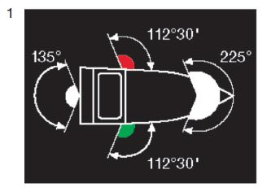 |
|
|  |
|
| einen gelben Zylinder, der oben und unten mit je einem schwarzen und je einem weißen Streifen – letztere an den äußeren Enden – eingefasst ist; der Zylinder muss auf dem Vorschiff senkrecht und so hoch gesetzt werden, dass er von allen Seiten sichtbar ist. | 4 | |
| Das Fahrzeug muss den Zylinder auch dann führen, wenn ihm vorübergehend auf einer kurzen Strecke ein Vorspann vorausfährt; der Vorspann muss den Zylinder ebenfalls führen. | ||
| ein drittes Topplicht; dieses muss etwa 2,00 m unter dem ersten Topplicht, jedoch nach Möglichkeit mindestens 1,00 m höher als die Seitenlichter gesetzt werden; |
| den Zylinder nach Nummer 1 Buchstabe b. |
| ein weißes helles, von allen Seiten sichtbares Licht; |
| einen gelben Ball an einer geeigneten Stelle und so hoch, dass er von allen Seiten sichtbar ist. |
| |
| |
| |
|
|  |
|
| Ein Schubverband, der durch zwei schiebende Fahrzeuge nebeneinander fortbewegt wird, muss bei Nacht Hecklichter nach Nummer 1 Buchstabe c Doppelbuchstabe aa auf dem steuerbordseitigen schiebenden Fahrzeug führen, das andere schiebende Fahrzeug muss das Hecklicht nach Nummer 1 Buchstabe c Doppelbuchstabe bb führen. |
| Nummer 1 gilt auch für einen Schubverband, wenn er bei Nacht geschleppt wird; jedoch müssen die drei Hecklichter nach Nummer 1 Buchstabe c Doppelbuchstabe aa gelb sein. |  |
| Wird ein Schubverband bei Tag geschleppt, muss das schiebende Fahrzeug führen: einen gelben Ball an einer geeigneten Stelle und so hoch, dass er von allen Seiten sichtbar ist. |
| |
|
|
|  |
| |
|  |
|  |
| |
oder
|  |
oder
|
|
|
ein blaues Licht; | 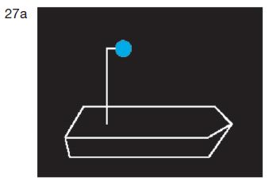 |
einen blauen Kegel mit der Spitze nach unten. | 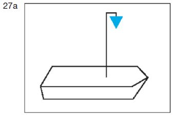 |
Das Zeichen muss an einer geeigneten Stelle und so hoch geführt werden, dass es von allen Seiten sichtbar ist. Anstelle des blauen Kegels nach Satz 1 Buchstabe b kann auch je ein blauer Kegel auf dem Vorschiff und dem Achterschiff und so hoch geführt werden, dass der Kegel auf
|  |
| sichtbar ist. |
| zwei blaue Lichter; |  |
| zwei blaue Kegel mit der Spitze nach unten. | 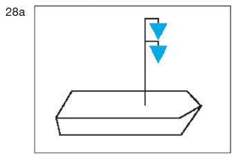 |
Die Zeichen müssen übereinander in einem Abstand von 1,00 m an einer geeigneten Stelle und so hoch geführt werden, dass sie von allen Seiten sichtbar sind. Abweichend von Satz 2 kann der Abstand zwischen den Zeichen in Abhängigkeit von den Gegebenheiten geringer gewählt werden, wenn hierdurch ihre Erkennbarkeit nicht eingeschränkt wird. Anstelle der zwei blauen Kegel nach Satz 1 Buchstabe b in Verbindung mit den Sätzen 2 und 3 können auch je zwei blaue Kegel auf dem Vorschiff und dem Achterschiff und so hoch geführt werden, dass die Kegel auf
|  |
| sichtbar sind. |
| drei blaue Lichter; |  |
| drei blaue Kegel mit der Spitze nach unten. |  |
| Die Zeichen müssen übereinander in einem Abstand von 1,00 m an einer geeigneten Stelle und so hoch geführt werden, dass sie von allen Seiten sichtbar sind. Abweichend von Satz 2 kann der Abstand zwischen den Zeichen in Abhängigkeit von den Gegebenheiten geringer gewählt werden, wenn hierdurch ihre Erkennbarkeit nicht eingeschränkt wird. Anstelle der drei blauen Kegel nach Satz 1 Buch- stabe b in Verbindung mit den Sätzen 2 und 3 können auch je drei blaue Kegel auf dem Vorschiff und dem Achterschiff und so hoch geführt werden, dass die Kegel auf
| 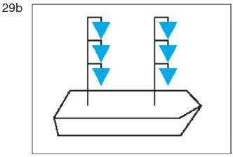 |
| sichtbar sind. |
 | 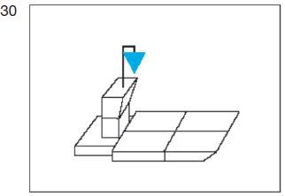 | |
| 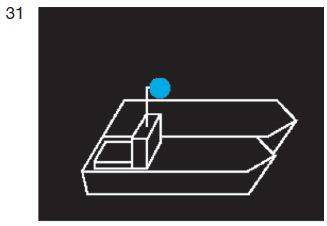 | 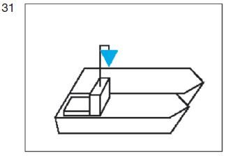 |
| 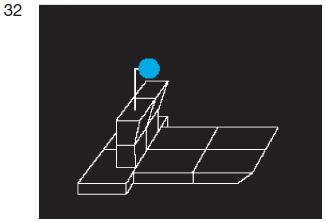 |  |
| einen gelben Doppelkegel an einer geeigneten Stelle und so hoch, dass er von allen Seiten sichtbar ist, |
|
|
|
| einen roten Wimpel auf dem Vorschiff und so hoch, dass er gut sichtbar ist, führen. |
| ein rotes Licht zeigen, das im unteren Halbkreis geschwenkt wird; |
| eine rote Flagge zeigen, die im unteren Halbkreis geschwenkt wird. |
| von allen Seiten sichtbare weiße helle Lichter in genügender Zahl, um ihre Umrisse kenntlich zu machen, führen. |
| ein von allen Seiten sichtbares weißes gewöhnliches Licht auf der Fahrwasserseite mindestens 3,00 m über der Ebene der Einsenkungsmarken |
| ein von allen Seiten sichtbares weißes gewöhnliches Licht auf der Fahrwasserseite führen. |
 |  | |
| Außerdem muss bei einer Gierseilfähre am Längsseil bei Nacht der oberste Buchtnachen oder Döpper das Licht nach § 3.16 Nummer 2 führen. |
| Das grüne Licht nach § 3.16 Nummer 1 Buchstabe b und die Lichter nach § 3.08 Nummer 1 Buchstabe b und c müssen gelöscht werden, sobald die Fähren nicht mehr in Betrieb sind. |
| von allen Seiten sichtbare weiße gewöhnliche Lichter in genügender Zahl, um ihre fahrwasserseitigen Umrisse kenntlich zu machen, |
| durch von allen Seiten sichtbare weiße gewöhnliche Lichter in ausreichender Zahl, um ihre Lage kenntlich zu machen; |
| durch gelbe Döpper oder gelbe Flaggen in ausreichender Zahl, um ihre Lage kenntlich zu machen. |
| übereinander zwei grüne gewöhnliche Lichter oder zwei grüne helle Lichter; |  |
|  |
|
| ein rotes gewöhnliches Licht oder ein rotes helles Licht in gleicher Höhe und von gleicher Stärke wie das nach Buchstabe a Doppelbuchstabe aa gezeigte oberste grüne Licht; |  |
|  |
|
| ein rotes gewöhnliches Licht und ein weißes gewöhnliches Licht oder ein rotes helles und ein weißes helles Licht, das rote Licht 1,00 m über dem weißen; |
| eine Flagge, deren obere Hälfte rot und deren untere Hälfte weiß ist, oder zwei Flaggen übereinander, die obere rot, die untere weiß, |
 |
| ein von allen Seiten sichtbares zusätzliches weißes gewöhnliches Licht 1,00 m unter dem Licht nach § 3.20 Nummer 1 oder, wenn zwei Stillliegelichter gesetzt sind, unter dem Licht, das dem Anker am nächsten liegt. |  |
| zwei von allen Seiten sichtbare weiße gewöhnliche Lichter, die in einem Abstand von 1,00 m übereinander angebracht sind, ersetzt werden. |  |
 |
| durch eine Tonne mit Radarreflektor und einem von allen Seiten sichtbaren weißen gewöhnlichen Licht; |
| durch einen gelben Döpper mit Radarreflektor. |  |
| ein rotes gewöhnliches und ein weißes gewöhnliches Licht oder ein rotes helles und ein weißes helles Licht, das rote Licht 1,00 m über dem weißen, an einer Stelle, an der sie gut gesehen und nicht mit anderen Lichtern verwechselt werden können; |
| eine Flagge, deren obere Hälfte rot und deren untere Hälfte weiß ist, an einer geeigneten Stelle und so hoch, dass sie von allen Seiten sichtbar ist. Die Flagge kann durch zwei Flaggen übereinander, die obere rot, die untere weiß, ersetzt werden. Die Flaggen können durch Tafeln gleicher Farbe ersetzt werden. |
| ein Licht, das im Kreis geschwenkt wird; |
| eine rote Flagge, die im Kreis geschwenkt wird, oder einen sonstigen geeigneten Gegenstand, der im Kreis geschwenkt wird. |
| |
|
| |
|
| eine quadratische Tafel, darunter ein dreieckiges Zusatzschild führen. |
| ein weißes helles Funkellicht, das auch mit einer hellblauen Tafel gekoppelt sein darf; |
| eine hellblaue Tafel, die mit einem weißen hellen Funkellicht gekoppelt ist. |
| A.4 | |
| A.4.1 |  | |
|
|  |
|  | ||
| Je nach den örtlichen Umständen kann das Zeichen, das die Durchfahrt verbietet, durch das als Vorwarnzeichen verwendete Tafelzeichen B.8 (Anlage 7) angekündigt werden. |
| |
|
 |
 | ||
 |  | |
 |
| Auf einer durch das Tafelzeichen A.8 (Anlage 7) gekennzeichneten Strecke ist das Wenden verboten. | |
| Ist eine Strecke durch das Tafelzeichen E.8 (Anlage 7) gekennzeichnet, wird dem Schiffsführer empfohlen, dort zu wenden, wobei die in den Nummern 1 bis 3 geregelten Anforderungen zu beachten sind. | |
| Ist eine Strecke durch das Tafelzeichen E.8 (Anlage 7) mit einer unterhalb angebrachten zusätzlichen rechteckigen weißen Tafel gekennzeichnet, wird dem Schiffsführer empfohlen, mit einem Fahrzeug bis zu der auf der zusätzlichen Tafel angegebenen Länge und der auf der Wasserstraße zulässigen Abladetiefe, dort zu wenden, wobei die in den Nummern 1 bis 3 geregelten Anforderungen zu beachten sind. |  |
| Die benutzte Hauptwasserstraße trifft auf eine von beiden Seiten einmündende Nebenwasserstraße. | 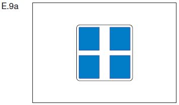 |
| Die benutzte Hauptwasserstraße trifft auf eine von Steuerbord einmündende Nebenwasserstraße. | E.9b |
| Die benutzte Hauptwasserstraße trifft auf eine von Backbord einmündende Nebenwasserstraße. | E.9c |
 | |
| Die benutzte Nebenwasserstraße trifft auf eine von beiden Seiten einmündende Hauptwasserstraße. |  |
| Die benutzte Nebenwasserstraße mündet in eine Hauptwasserstraße ein. |  |
 | 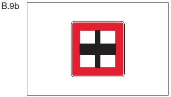 |
| Ein rotes Licht, Zeichen A.1 (Anlage 7), mit einem weißen Pfeil (Abschnitt II Nummer 2 Buchstabe c der Anlage 7) zeigt an, dass die Einfahrt in den in Pfeilrichtung gelegenen Hafen oder in die in Pfeilrichtung gelegene Nebenwasserstraße verboten ist. | A.1 Abschnitt II Nr. 2 Buchstabe c |  |
| Ein gelbes Funkellicht (Zeichen E.12a der Anlage 7) an einer Hafenmündung oder der Mündung einer Nebenwasserstraße zeigt an, dass ein Fahrzeug ausfährt und die Einfahrt infolgedessen mit Vorsicht zu erfolgen hat. Ein Fahrzeug in der Hauptwasserstraße muss daraufhin, soweit notwendig, seinen Kurs und seine Geschwindigkeit ändern. | E.12a |  |
| Das Verbot nach Nummer 1 gilt weder beim Treibenlassen, sofern dies gestattet ist, noch für kleine Bewegungen auf einer Liegestelle und Umschlagstelle sowie auf einer Reede. Es gilt jedoch für derartige Bewegungen auf einer Strecke, für die ein allgemeines Ankerverbot besteht und auf einer Strecke, die nach § 7.03 Nummer 1 Buchstabe b durch das Tafelzeichen A.6 (Anlage 7) gekennzeichnet ist. |
|
| |
| |
| |
|
| 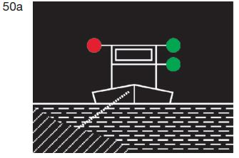 | 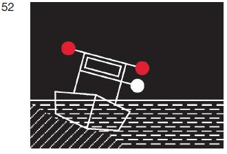 |
| 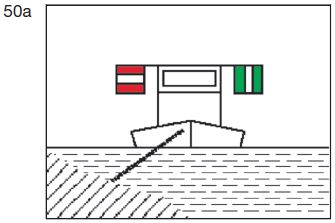 | 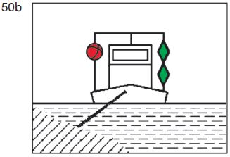 |
| 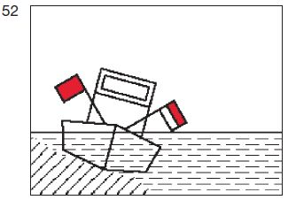 |
| |
|
|
|  |
|
|  |
|
| |
| |
|
|  |
 |
|  |
|  |
| 62 | 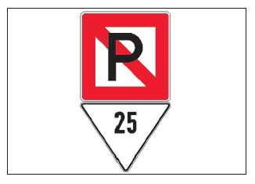 |
|  |
 | 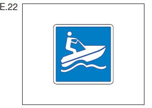 |  |
 | 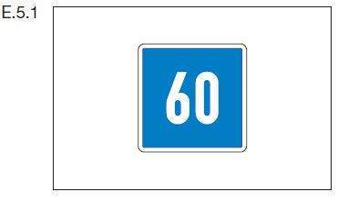 | |
 |  | |
 |  | |
 | 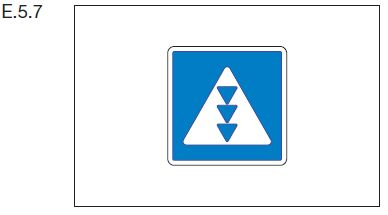 | |
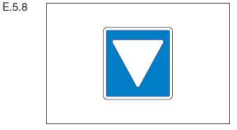 | 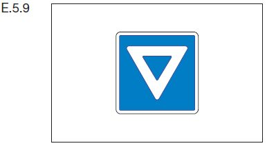 | |
 | 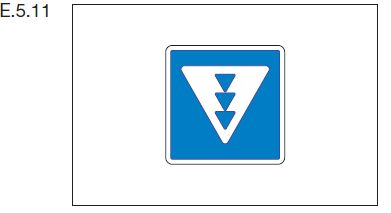 | |
 | 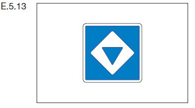 | |
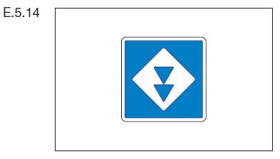 |  | |
 |  |
|
|
|
| |
| 1. | Auf einer Liegestelle, bei der das Tafelzeichen E.5 (Anlage 7) aufge- stellt ist, darf ein Fahrzeug oder ein Schwimmkörper nur auf der Sei- te der Wasserstraße stillliegen, auf der das Tafelzeichen steht. | |
| 2. | Auf einer Liegestelle, bei der das Tafelzeichen E.5.1 (Anlage 7) aufge- stellt ist, darf ein Fahrzeug oder ein Schwimmkörper nur auf einer Wasserfläche stillliegen, deren Breite auf dem Tafelzeichen in Me- tern angegeben ist. Die Breite bemisst sich vom Aufstellungsort des Tafelzeichens. | |
| 3. | Auf einer Liegestelle, bei der das Tafelzeichen E.5.2 (Anlage 7) aufge- stellt ist, darf ein Fahrzeug oder ein Schwimmkörper nur auf der Wasserfläche zwischen den zwei Entfernungen stillliegen, die auf dem Tafelzeichen in Metern angegeben sind. Beide Entfernungen bemessen sich vom Aufstellungsort des Tafelzeichens. | |
| 4. | Auf einer Liegestelle, bei der das Tafelzeichen E.5.3 (Anlage 7) aufge- stellt ist, dürfen auf der Seite der Wasserstraße, auf der das Tafelzeichen steht, nicht mehr Fahrzeuge und Schwimmkörper nebeneinander stillliegen, als auf dem Tafelzeichen in römischen Zahlen angegeben ist. |
 | ||
 | ||
 |  | |
 |
 |  | |
 |  | |
 |
| An einer Liegestelle, bei der das Tafelzeichen B.12 (Anlage 7) aufgestellt ist, ist ein Fahrzeug verpflichtet, sich an einen betriebsbereiten Landstromanschluss anzuschließen und seinen gesamten Bedarf an elektrischer Energie während des Stillliegens daraus zu decken. Ausnahmen vom Gebot nach Satz 1 können auf einem rechteckigen weißen zusätzlichen Schild angegeben werden, das unterhalb des Tafelzeichens B.12 angebracht ist. | B.12 |  |
| A.20 |
|
| eine weiß-blaue Flagge (Flagge „Alpha“ des Inter- nationalen Signalbuchs). |
| |
| E.24 |
| Binnenschifffahrtsstraße | Länge | Breite |
| m | m |
| 1.1 | km 0,00 (Neckarmündung) bis km 201,49 (Hafen Plochingen) | ||
| Fahrzeug/Verband | 90,00 | 11,45 | |
| soweit nachfolgend nicht etwas anderes festgelegt ist | |||
| 1.2 | km 0,00 (Neckarmündung) bis km 3,00 (Mannheim-Neckarstadt) | ||
| a) Fahrzeug | 135,00 | 22,80 | |
| b) Verband | 186,50 | 22,90 | |
| 1.3 | km 3,00 bis km 13,00 | ||
| Fahrzeug/Verband | 110,00 | 11,45 | |
| 1.4 | km 13,00 bis km 201,49 (Hafen Plochingen) | ||
| Fahrzeug/Verband | 105,50 | 11,45 | |
| – ein Fahrzeug oder ein Verband mit jeweils einer Länge von mehr als 90,00 m darf nur fahren, wenn es oder er mit einer aktiven Bugsteuereinrichtung, einem Zweischraubenantrieb oder einem in alle Richtungen von 0° bis 360° wirkenden Hauptantrieb und einer Sprechverbindung zwischen Steuerstand und Spitze des Fahrzeugs oder Verbandes ausgerüstet ist –. | |||
| b) | beträgt von der Schleusengruppe Feudenheim bis zum Ende des Hafens Plochingen (km 201,49) | 2,80 m. |
| a) | für ein Fahrzeug oder einen Verband, ausgenommen Fahrgastschiffe oder Kleinfahrzeuge, | 16 km/h, |
| b) | für ein Fahrgastschiff oder ein Kleinfahrzeug | 18 km/h. |
| a) | für ein Fahrzeug oder einen Verband, ausgenommen Fahrgastschiffe oder Kleinfahrzeuge, | 12 km/h, |
| b) | für ein Fahrgastschiff oder ein Kleinfahrzeug | 14 km/h. |
| Stauhaltung | am Regel im Unterwasser der Schleuse | Hochwassermarke |
| Ladenburg/Feudenheim-Schwabenheim | Schwabenheim | 370 cm |
| Strecke: Staustufe Wieblingen/Schwabenheim- Alte Brücke Heidelberg | Schwabenheim | 370 cm |
| Strecke: Alte Brücke Heidelberg- Staustufe Heidelberg | Heidelberg | 260 cm |
| Heidelberg-Neckargemünd | Neckargemünd | 320 cm |
| Neckargemünd-Neckarsteinach | Neckarsteinach | 375 cm |
| Neckarsteinach-Hirschhorn | Hirschhorn | 320 cm |
| Hirschhorn-Rockenau | Rockenau | 395 cm |
| Rockenau-Guttenbach | Guttenbach | 350 cm |
| Guttenbach-Neckarzimmern | Neckarzimmern | 420 cm |
| Neckarzimmern-Gundelsheim | Gundelsheim | 380 cm |
| Gundelsheim-Neckarsulm/Kochendorf | Kochendorf | 400 cm |
| Neckarsulm/Kochendorf-Heilbronn | Heilbronn | 260 cm |
| Heilbronn-Horkheim | Horkheim | 320 cm |
| Horkheim-Lauffen | Lauffen | 270 cm |
| Lauffen-Besigheim | Besigheim | 330 cm |
| Besigheim-Hessigheim | Hessigheim | 330 cm |
| Hessigheim-Pleidelsheim | Pleidelsheim | 300 cm |
| Pleidelsheim-Marbach | Marbach | 285 cm |
| Marbach-Poppenweiler | Poppenweiler | 300 cm |
| Poppenweiler-Aldingen | Aldingen | 280 cm |
| Aldingen-Hofen | Hofen | 290 cm |
| Hofen-Cannstatt | Cannstatt | 260 cm |
| Cannstatt-Untertürkheim | Untertürkheim | 240 cm |
| Untertürkheim-Obertürkheim | Obertürkheim | 240 cm |
| Obertürkheim-Esslingen | Esslingen | 266 cm |
| Esslingen-Oberesslingen | Esslingen | 266 cm |
| Strecke: Wehr Oberesslingen-Deizisau | Deizisau | 244 cm |
| Strecke: Staustufe Deizisau | Deizisau | 244 cm |
| Strecke: km 201,49-km 203,01 | Plochingen | 180 cm. |
Binnenschifffahrtsstraße | Länge m | Breite m | |
|---|---|---|---|
| 1.1 | km 0,00 (Mainmündung) bis km 387,40 (unterhalb Eisenbahnbrücke bei Hallstadt) | ||
| Fahrzeug/Verband | 67,00 | 8,20 | |
| soweit nachfolgend nicht etwas anderes festgelegt ist | |||
| 1.2 | km 0,00 (Mainmündung) bis km 1,12 | ||
| a) Fahrzeug | 135,00 | 25,00 | |
| b) Verband | 190,00 | 25,00 | |
| 1.3 | km 1,12 bis km 37,20 (Osthafen Frankfurt) | ||
| a) Fahrzeug | 135,00 | 14,20 | |
| b) Verband | 190,00 | 14,20 | |
| 1.4 | km 37,20 bis km 52,00 (Unterwasser Schleuse Mühlheim) | ||
| a) Fahrzeug | 135,00 | 12,20 | |
| b) Verband | 190,00 | 12,20 | |
| 1.5 | km 52,00 bis km 84,00 (Hafen Aschaffenburg) | ||
| a) Fahrzeug | 135,00 | 11,45 | |
| b) Verband | 190,00 | 11,45 | |
| 1.6 | km 84,00 bis km 387,07 (Abzweigung Main-Donau-Kanal) | ||
| a) Fahrzeug/Verband | 90,00 | 11,45. | |
| von der Schleusengruppe Kostheim bis zur Schleuse Lengfurt mindestens | 2,90 m, |
| von der Schleuse Lengfurt bis zur Schleuse Limbach | 2,50 m, |
| von der Schleuse Limbach bis zur Abzweigung des Main-Donau-Kanals | 2,90 m. |
| von der Mainmündung bis zum Hafen Aschaffenburg | 50,00 m, |
| vom Hafen Aschaffenburg bis zur Schleuse Lengfurt | 40,00 m, |
| von der Schleuse Lengfurt bis zur Schleuse Limbach | 36,00 m, |
| von der Schleuse Limbach bis zur Abzweigung des Main-Donau-Kanals | 40,00 m. |
| 1. | im Schleusenkanal Gerlachshausen | 7 km/h, |
| 2. | auf der Strecke von der Abzweigung des Main-Donau-Kanals bis oberhalb der Eisenbahnbrücke bei Hallstadt | 15 km/h, |
| 3. | im Wehrarm Volkach (Mainschleife) | 10 km/h. |
| Strecke | Richtpegel | Hochwassermarke | |
| I | II | ||
| Mainmündung – Schleusengruppe Griesheim | Raunheim | 300 cm | 400 cm |
| Schleusengruppe Griesheim – Hafen Aschaffenburg | Frankfurt-Osthafen | 300 cm | 370 cm |
| Hafen Aschaffenburg – Schleuse Klingenberg | Obernau | 300 cm | 380 cm |
| Schleuse Klingenberg – Schleuse Eichel | Kleinheubach | 300 cm | 370 cm |
| Schleuse Eichel – Schleuse Harrbach | Steinbach | 300 cm | 370 cm |
| Schleuse Harrbach – Schleuse Marktbreit | Würzburg | 270 cm | 340 cm |
| Schleuse Marktbreit – Schleuse Knetzgau | Schweinfurt-Neuer Hafen | 300 cm | 370 cm |
| Schleuse Knetzgau – oberhalb Eisenbahnbrücke bei Hallstadt (km 387,69) | Trunstadt | 280 cm | 340 cm. |
| aa) einer Abladetiefe von nicht mehr als 1,30 m | 13 km/h, |
| bb) einer Abladetiefe von mehr als 1,30 m | 11 km/h, |
| für ein Fahrzeug oder einen Verband mit jeweils einer Abladetiefe von mehr als 2,20 m | 6 km/h. |
| Strecke | Richtpegel | Hochwassermarke | |
| I | II | ||
| Main-Hafen Bamberg | Trunstadt | 280 cm | 340 cm |
| Hafen Bamberg – Schleuse Bamberg, Schleuse Strullendorf – Schleuse Hausen | Bamberg | 330 cm | 370 cm |
| Schleuse Dietfurt – Schleuse Kelheim | Riedenburg | — | 520 cm |
| Schleuse Kelheim – Donau | Oberndorf/Donau | — | 480 cm |
| Binnenschifffahrtsstraße | Länge m | Breite m |
| 1.1 | km 137,30 (Lahnmündung) bis km -11,08 (Unterwasser des ehemaligen Badenburger Wehres oberhalb Gießen) | ||
| Fahrzeug | 34,00 | 4,69 | |
| soweit nachfolgend nicht etwas anderes festgelegt ist | |||
| 1.2 | km 137,30 (Lahnmündung) bis km 137,05 (Hafen Oberlahnstein) | ||
| Fahrzeug/Verband | 135,00 | 11,45 | |
| 1.3 | km 137,05 bis km 136,83 (Eisenbahnbrücke Lahnstein) | ||
| Fahrzeug/Verband | 110,00 | 11,45 | |
| 1.4 | km 136,83 bis km 134,10 (Unterwasser Schleuse Ahl) | ||
| Fahrzeug | 42,00 | 5,80 | |
| 1.5 | km 134,10 bis km 70,00 (Steeden) | ||
| Fahrzeug | 34,00 | 5,26. |
| a) bei einem Wasserstand am Pegel Kalkofen unter 230 cm | 10 km/h, |
| b) bei einem Wasserstand am Pegel Kalkofen ab 230 cm | 12 km/h. |
| Die zulässige Höchstgeschwindigkeit gegenüber dem Ufer beträgt für ein Kleinfahrzeug | 12 km/h. |
| Strecke | Richtpegel | Hochwassermarke |
| Lahnmündung – Schleuse Lahnstein | Rheinpegel Koblenz | 650 cm |
| Schleuse Lahnstein – Steeden | Kalkofen | 360 cm |
| oberhalb Steeden (km 70,00) | Leun | 360 cm. |
| Die zulässige Höchstgeschwindigkeit gegenüber dem Ufer beträgt | 8 km/h. |
| Binnenschifffahrtsstraße | Länge | Breite | Abladetiefe | |
|---|---|---|---|---|
| m | m | m | ||
| 1.1 | Ruhr | |||
| 1.1.1 | km 0,00 (Ruhrmündung) bis km 12,21 (oberhalb der Schlossbrücke in Mülheim) | |||
| Fahrzeug/Verband | 38,00 | 5,20 | 1,70 | |
| soweit nachfolgend nicht etwas anderes festgelegt ist | ||||
| 1.1.2 | km 0,00 (Ruhrmündung) bis km 0,80 | |||
| 135,00 | 12,00 | 3,00 | |
| 193,00 | 22,90 | 3,00 | |
| — die zulässige Abladetiefe darf überschritten werden, wenn der Wasserstand des Rheins eine größere Abladetiefe gestattet, die Vorschrift des § 1.07 Nummer 1 bleibt unberührt; die zulässige Abladetiefe verringert sich, wenn der Wasserstand des Rheins am Pegel Ruhrort unter die Marke 298 sinkt, um das Maß des jeweiligen Absinkens des Wasserstandes – | ||||
| 1.1.3 | km 0,80 bis km 1,90 | |||
| 135,00 | 12,00 | 3,00 | |
| 186,50 | 12,00 | 3,00 | |
| — die zulässige Abladetiefe darf überschritten werden, wenn der Wasserstand des Rheins eine größere Abladetiefe gestattet, die Vorschrift des § 1.07 Nummer 1 bleibt unberührt; die zulässige Abladetiefe verringert sich, wenn der Wasserstand des Rheins am Pegel Ruhrort unter die Marke 298 sinkt, um das Maß des jeweiligen Absinkens des Wasserstandes – | ||||
| 1.1.4 | km 1,90 bis km 2,80 (Ruhrschleuse Duisburg) | |||
| 135,00 | 12,00 | 3,00 | |
| 186,50 | 12,00 | 3,00 | |
| — die zulässige Abladetiefe verringert sich, wenn der Wasserstand des Rheins am Pegel Ruhrort unter die Marke 298 sinkt, um das Maß des jeweiligen Absinkens des Wasserstandes – | ||||
| 1.1.5 | km 2,80 bis km 4,52 | |||
| 135,00 | 12,00 | 3,00 | |
| 186,50 | 12,00 | 3,00 | |
| 1.1.6 | km 4,52 bis km 11,65 | |||
| Fahrzeug/Verband | 135,00 | 12,00 | 3,00 | |
| Ein Fahrzeug oder ein Schubverband mit jeweils einer Länge von mehr als 90,00 m oder einer Breite von mehr als 9,65 m oder mit einer Abladetiefe von mehr als 2,50 m darf nur fahren, wenn es oder er mit einer aktiven Bugsteuereinrichtung oder einem Zweischraubenantrieb und einer Sprechverbindung zwischen Steuerstand und Spitze des Fahrzeugs oder Verbandes ausgerüstet ist. | ||||
| 1.2 | Rhein-Herne-Kanal | |||
| 1.2.1 | km 0,16 (Ruhrorter Hafen) bis km 45,60 (Dortmund-Ems-Kanal) mit Verbindungskanal zur Ruhr | |||
| 110,00 | 9,65 | 2,60 | |
| 135,00 | 11,45 | 2,50 | ||
| 165,00 | 9,65 | 2,60 | |
| 186,50 | 11,45 | 2,50 | ||
| — von km 0,16 (Ruhrorter Hafen) bis km 0,65 (Schleuse Duisburg-Meiderich) verringert sich | ||||
| ||||
| ||||
| um das Maß des jeweiligen Absinkens des Wasserstandes, | ||||
| zwischen km 39,97 (Hafen Victor) und km 45,60 (Dortmund-Ems-Kanal) darf ein Fahrzeug mit einer Breite über 9,65 m oder ein Verband mit einer Länge über 165,00 m oder einer Breite über 9,65 m nur in der in § 15.06 Nummer 6 Buchstabe b festgelegten Zeit und Richtung fahren – | ||||
| soweit nachfolgend nicht etwas anderes festgelegt ist | ||||
| 1.2.2 | km 0,16 bis km 0,65 (Schleuse Duisburg-Meiderich) | |||
| 135,00 | 11,45 | 3,00 | |
| 186,50 | 11,45 | 3,00 | |
| – die zulässigen Abladetiefen verringern sich, wenn der Wasserstand des Rheins am Pegel Ruhrort | ||||
| ||||
| ||||
| ||||
| ||||
| um das Maß des jeweiligen Absinkens des Wasserstandes – | ||||
| 1.2.3 | km 0,65 bis km 1,07 | |||
| 135,00 | 11,45 | 3,00 | |
| 186,50 | 11,45 | 3,00 | |
| 1.2.4 | km 1,07 bis km 24,53 mit Verbindungskanal zur Ruhr | |||
| 135,00 | 11,45 | 2,80 | |
| 186,50 | 11,45 | 2,80 | |
| Ein Fahrzeug oder ein Schubverband mit jeweils einer Länge von mehr als 90,00 m oder einer Breite von mehr als 9,65 m oder mit einer Abladetiefe von mehr als 2,50 m darf nur fahren, wenn es oder er mit einer aktiven Bugsteuereinrichtung oder einem Zweischraubenantrieb und einer Sprechverbindung zwischen Steuerstand und Spitze des Fahrzeugs oder Schubverbandes ausgerüstet ist. | ||||
| 1.3 | Wesel-Datteln-Kanal | |||
| 1.3.1 | km 0,24 (Rhein) bis km 60,23 (Dortmund-Ems-Kanal) | |||
| 135,00 | 11,45 | 2,80 | |
| 186,50 | 11,45 | 2,80 | |
| — von km 0,24 (Rhein) bis km 0,90 (Rhein-Lippe-Hafen) darf die zulässige Abladetiefe überschritten werden, wenn der Wasserstand des Rheins eine größere Abladetiefe gestattet; die Vorschrift des § 1.07 Nummer 1 bleibt unberührt, | ||||
| von km 0,24 bis km 1,85 (Schleuse Friedrichsfeld) verringert sich die zulässige Abladetiefe, wenn der Wasserstand des Rheins am Pegel Wesel unter die Marke 222 sinkt, um das Maß des jeweiligen Absinkens des Wasserstandes – | ||||
| soweit nachfolgend nicht etwas anderes festgelegt ist | ||||
| 1.3.2 | km 0,24 bis km 0,90 (Rhein-Lippe-Hafen) | |||
| 193,00 | 22,90 | 2,80 | |
| — die zulässige Abladetiefe darf überschritten werden, wenn der Wasserstand des Rheins eine größere Abladetiefe gestattet, die Vorschrift des § 1.07 Nummer 1 bleibt unberührt; die zulässige Abladetiefe verringert sich, wenn der Wasserstand des Rheins am Pegel Wesel unter die Marke 222 sinkt, um das Maß des jeweiligen Absinkens des Wasserstandes – | ||||
| Ein Fahrzeug oder ein Schubverband mit jeweils einer Länge von mehr als 90,00 m oder einer Breite von mehr als 9,65 m oder mit einer Abladetiefe von mehr als 2,50 m darf nur fahren, wenn es oder er mit einer aktiven Bugsteuereinrichtung oder einem Zweischraubenantrieb und einer Sprechverbindung zwischen Steuerstand und Spitze des Fahrzeugs oder Verbandes ausgerüstet ist. | ||||
| 1.4 | Datteln-Hamm-Kanal | |||
| 1.4.1 | km 0,06 (Dortmund-Ems-Kanal) bis km 47,20 | |||
| Fahrzeug/Verband | 86,00 | 9,65 | 2,50 | |
| soweit nachfolgend nicht etwas anderes festgelegt ist | ||||
| 1.4.2 | km 0,06 bis km 11,30 (Hafen Lünen) | |||
| 135,00 | 11,45 | 2,80 | |
| 186,50 | 11,45 | 2,80 | |
| 1.4.3 | km 11,30 bis km 35,87 (Hammer Bahnbrücke) | |||
| 135,00 | 11,45 | 2,70 | |
| 186,50 | 11,45 | 2,70 | |
| Ein Fahrzeug oder ein Schubverband mit jeweils einer Länge von mehr als 90,00 m oder einer Breite von mehr als 9,65 m oder mit einer Abladetiefe von mehr als 2,50 m darf nur fahren, wenn es oder er mit einer aktiven Bugsteuereinrichtung oder einem Zweischraubenantrieb und einer Sprechverbindung zwischen Steuerstand und Spitze des Fahrzeugs oder Verbandes ausgerüstet ist. | ||||
| 1.5 | Dortmund-Ems-Kanal | |||
| 1.5.1 | km 1,44 (Hafen Dortmund) bis km 225,82 (Papenburg) einschließlich Hase und Ems | |||
| Fahrzeug/Verband | 90,00 | 9,65 | 2,50 | |
| soweit nachfolgend nicht etwas anderes festgelegt ist | ||||
| 1.5.2 | km 1,44 bis km 21,50 | |||
| 135,00 | 11,45 | 2,80 | |
| 186,50 | 11,45 | 2,80 | |
| 1.5.3 | km 21,50 bis km 81,90 (Bockholt) | |||
| 110,00 | 11,45 | 2,50 | |
| 110,00 | 11,45 | 2,50 | |
| 165,00 | 9,65 | 2,50 | ||
| 1.5.4 | km 81,90 bis km 108,50 | |||
| 110,00 | 11,45 | 2,80 | |
| 186,00 | 11,45 | 2,80 | |
| 1.5.5 | km 108,50 bis km 138,00 (Gleesen) | |||
| Fahrzeug/Verband | 100,00 | 9,65 | 2,70 | |
| 110,00 | 9,65 | 2,50 | ||
| 1.5.6 | km 138,00 bis km 225,82 (Papenburg) einschließlich Hase und Ems | |||
| Fahrzeug/Verband | 100,00 | 9,65 | 2,70 | |
| 90,00 | 10,60 | 2,60 | ||
| 110,00 | 9,65 | 2,50 | ||
| Ein Fahrzeug oder ein Schubverband mit jeweils einer Länge von mehr als 90,00 m oder einer Breite von mehr als 9,65 m oder mit einer Abladetiefe von mehr als 2,50 m darf nur fahren, wenn es oder er mit einer aktiven Bugsteuereinrichtung oder einem Zweischraubenantrieb und einer Sprechverbindung zwischen Steuerstand und Spitze des Fahrzeugs oder Verbandes ausgerüstet ist. | ||||
| 1.6 | Ems oberhalb Gleesen (km 82,65) | |||
| Fahrzeug | 26,00 | 5,20 | je nach Wasserstand | |
| 1.7 | ohne Inhalt | |||
| 1.8 | Küstenkanal | |||
| 1.8.1 | km 0,00 (140,00 m unterhalb der Amalienbrücke in Oldenburg) bis km 69,63 (Dortmund-Ems-Kanal, Ems) einschließlich Hunte | |||
| Fahrzeug/Verband | 100,00 | 9,65 | je nach Wasserstand bis 2,50 | |
| 90,00 | 10,60 | je nach Wasserstand bis 2,30 | ||
| soweit nachfolgend nicht etwas anderes festgelegt ist | ||||
| 1.8.2 | km 1,71 (Schleuse Oldenburg) bis km 64,00 (Dörpen) | |||
| Fahrzeug/Verband | 100,00 | 9,65 | 2,50 | |
| 90,00 | 10,60 | 2,30 | ||
| 1.8.3 | km 64,00 bis km 69,63 (Dortmund-Ems-Kanal) mit Stichkanal Dörpen | |||
| Fahrzeug/Verband | 100,00 | 9,65 | 2,70 | |
| 90,00 | 10,60 | 2,60 | ||
| — ein Fahrzeug oder ein Schubverband mit jeweils einer Länge von mehr als 90,00 m oder mit einer Abladetiefe von mehr als 2,50 m darf nur fahren, wenn es oder er mit einer aktiven Bugsteuereinrichtung oder einem Zweischraubenantrieb und einer Sprechverbindung zwischen Steuerstand und Spitze des Fahrzeugs oder Verbandes ausgerüstet ist | ||||
| 1.9 | Elisabethfehnkanal | |||
| Fahrzeug | 20,00 | 4,50 | 0,90 | |
| 1.10 | Leda und Sagter Ems | |||
| Fahrzeug | 20,00 | 4,50 | 1,20 bezogen auf MThw | |
| 1.11 | Ems-Seitenkanal | |||
| Fahrzeug/Verband | 67,00 | 8,20 | je nach Wasserstand 1,55 bis 2,00 | |
| 1.12 | Mittellandkanal | |||
| 1.12.1 | km 0,00 bis km 325,70 | |||
| a) Fahrzeug | 110,00 | 11,45 | 2,80 | |
| b) Verband | 185,00 | 11,45 | 2,80 | |
| 1.12.2 | Stichkanäle Ibbenbüren, Osnabrück, Hannover-Linden, Misburg, Hildesheim | |||
| 1.12.2.1 | Stichkanal Ibbenbüren | |||
| Fahrzeug/Verband | 91,00 | 8,25 | 2,20 | |
| 85,00 | 9,00 | 2,20 | ||
| 95,00 | 9,60 | 2,00 | ||
| 1.12.2.2 | Stichkanal Osnabrück | |||
| 1.12.2.2.1 | km 0,00 bis km 13,01 | |||
| Fahrzeug/Verband | 82,00 | 9,60 | 2,30 | |
| soweit nachfolgend nicht etwas anderes festgelegt ist | ||||
| 1.12.2.2.2 | km 0,00 bis km 12,40 (Einfahrt in den Ölhafen) | |||
| Fahrzeug/Verband | 82,00 | 9,60 | 2,80 | |
| 1.12.2.3 | Stichkanal Hannover-Linden | |||
| 1.12.2.3.1 | km 0,00 (Abzweigung aus dem Mittellandkanal) bis km 10,75 (Ende als Bundeswasserstraße) | |||
| Fahrzeug/Verband | 82,00 | 9,60 | 2,30 | |
| soweit nachfolgend nicht etwas anderes festgelegt ist | ||||
| 1.12.2.3.2 | km 0,00 (Abzweigung aus dem Mittellandkanal) bis km 6,50 (Umschlagstelle Hannover-Letter) | |||
| Fahrzeug/Verband | 90,00 | 9,60 | 2,40 | |
| 1.12.2.3.3 | km 6,50 (Umschlagstelle Hannover-Letter) bis km 9,50 (Unterwasser Hafenschleuse Hannover-Linden) | |||
| Fahrzeug/Verband | 85,00 | 9,60 | 2,30 | |
| 1.12.2.4 | Stichkanal Misburg | |||
| a) Fahrzeug | 110,00 | 11,45 | 2,80 | |
| b) Schubverband | 185,00 | 11,45 | 2,80 | |
| 1.12.2.5 | Stichkanal Hildesheim | |||
| a) Fahrzeug | 90,00 | 10,60 | 2,30 | |
| 110,00 | 10,60 | 2,10 | ||
| 110,00 | 11,45 | 2,00 | ||
| b) Verband | 90,00 | 10,60 | 2,30 | |
| 110,00 | 11,45 | 2,00 | ||
| 135,00 | 9,60 | 2,30 | ||
| 135,00 | 10,60 | 2,10 | ||
| 150,00 | 11,45 | 1,90 | ||
| 1.12.3 | Verbindungskanal Nord zur Weser | |||
| 1.12.3.1 | km 0,00 (Abzweigung aus dem Mittellandkanal) bis km 0,45 (Oberwasser Schachtschleuse Minden)/km 0,40 (Oberwasser Weserschleuse) | |||
| a) Fahrzeug | 110,00 | 11,45 | 2,80 | |
| b) Verband | 139,00 | 11,45 | 2,80 | |
| 1.12.3.2 | Schachtschleuse Minden | |||
| Fahrzeug/Verband | 85,00 | 9,60 | 2,80 | |
| 1.12.3.3 | Weserschleuse | |||
| a) Fahrzeug | 110,00 | 11,45 | richtet sich nach der Fahrrinnen- tiefe nach Nummer 1.12.3.4 | |
| b) Verband | 135,00 | 11,45 | richtet sich nach der Fahrrinnen- tiefe nach Nummer 1.12.3.4 | |
| 1.12.3.4 | km 0,55 (Unterwasser Schachtschleuse Minden)/km 0,56 (Unterwasser Weserschleuse) bis km 1,29 (Einmündung in die Weser) | |||
| a) Fahrzeug | 110,00 | 11,45 | richtet sich nach der Fahrinnentiefe | |
| b) Verband | 139,00 | 11,45 | richtet sich nach der Fahrrinnentiefe | |
| – die Fahrrinnentiefe beträgt 2,80 m – | ||||
| 1.12.4 | Verbindungskanal Süd zur Weser | |||
| Fahrzeug/Verband | 82,00 | 9,60 | 2,50 | |
| 1.12.5 | Stichkanal Salzgitter | |||
| 1.12.5.1 | bei Benutzung der am Ostufer gelegenen Schleusen | |||
| a) Fahrzeug | 110,00 | 9,60 | 2,80 | |
| 110,00 | 10,60 | 2,65 | ||
| b) Verband | 110,00 | 11,45 | 2,50 | |
| 185,00 | 9,60 | 2,80 | ||
| 185,00 | 10,60 | 2,65 | ||
| 185,00 | 11,45 | 2,50 | ||
| 1.12.5.2 | bei Benutzung der am Westufer gelegenen Schleusen | |||
| a) Fahrzeug | 110,00 | 9,60 | 2,50 | |
| 110,00 | 11,45 | 2,20 | ||
| b) Verband | 185,00 | 9,60 | 2,50 | |
| 185,00 | 11,45 | 2,20 | ||
| 1.12.6 | Rothenseer Verbindungskanal | |||
| 1.12.6.1 | Rothenseer Verbindungskanal Altstrecke mit Schiffshebewerk Rothensee km 0,12 bis km 1,00 | |||
| Fahrzeug/Verband | 82,00 | 9,50 | 1,90 | |
| 82,00 | 9,00 | 2,10 | ||
| 1.12.6.2 | Rothenseer Verbindungskanal mit Schiffsschleuse km 0,19 bis km 4,76 (Niedrigwasserschleuse Magdeburg) | |||
| 1.12.6.2.1 | bei in Betrieb befindlicher Niedrigwasserschleuse | |||
| a) Fahrzeug | 110,00 | 11,45 | 2,80 | |
| b) Verband | 185,00 | 11,45 | 2,80 | |
| 1.12.6.2.2 | bei nicht in Betrieb befindlicher Niedrigwasserschleuse | |||
| a) Fahrzeug | 110,00 | 11,45 | je nach Fahrrinnentiefe | |
| b) Verband | 185,00 | 11,45 | je nach Fahrrinnentiefe | |
| – die Fahrrinnentiefe richtet sich vom unteren Vorhafen der Schleuse Rothensee und vom unteren Vorhafen des Schiffshebewerkes Rothensee bis zur Niedrigwasserschleuse Magdeburg nach dem Wasserstand; die geringste Fahrrinnentiefe wird von der zuständigen Behörde täglich bekannt gemacht; bei der Wahl der Abladetiefe sind die bekannt gemachten Fahrrinnentiefen und die aktuelle Wasserstandsentwicklung zu berücksichtigen – | ||||
| 1.12.6.3 | km 4,76 (Niedrigwasserschleuse Magdeburg) bis km 5,53 (Elbe) | |||
| a) Fahrzeug | 110,00 | 11,45 | je nach Fahrrinnentiefe | |
| b) Verband | 100,00 | 19,20 | je nach Fahrrinnentiefe | |
| 185,00 | 11,45 | je nach Fahrrinnentiefe | ||
| – die Fahrrinnentiefe richtet sich von der Niedrigwasserschleuse Magdeburg bis zur Einmündung in die Elbe nach dem Wasserstand; die geringste Fahrrinnentiefe wird von der zuständigen Behörde täglich bekannt gemacht; bei der Wahl der Abladetiefe sind die bekannt gemachten Fahrrinnentiefen und die aktuelle Wasserstandsentwicklung zu berücksichtigen – | ||||
| 1.13 | Elbe-Seitenkanal | |||
| 1.13.1 | von km 0,00 bis km 115,18 (Einmündung in die Elbe) | |||
| 100,00 | 11,45 | 2,80 | |
| 185,00 | 11,45 | 2,80 | |
| soweit nachfolgend nicht etwas anderes festgelegt ist | ||||
| 1.13.2 | von km 0,00 bis km 100,23 (Hafen Lüneburg) | |||
| Fahrzeug | 110,00 | 11,45 | 2,80 | |
| 1.14 | Elbe-Havel-Kanal | |||
| 1.14.1 | km 325,70 (Unterwasser Schleuse Hohenwarthe) bis km 380,90 (Untere Havel-Wasserstraße) mit Großem Wendsee ohne Schleuse Niegripp und Schleuse Parey | |||
| 80,00 | 9,00 | 2,00 | |
| 86,00 | 8,25 | 2,00 | ||
| 80,00 | 9,00 | 2,00 | |
| 125,00 | 8,25 | 2,00 | ||
| soweit nachfolgend nicht etwas anderes festgelegt ist | ||||
| 1.14.2 | Niegripper Verbindungskanal | |||
| 1.14.2.1 | km 0,10 (Elbe-Havel-Kanal) bis Schleuse Niegripp | |||
| 110,00 | 11,45 | 2,80 | |
| 185,00 | 11,45 | 2,80 | |
| 1.14.2.2 | Schleuse Niegripp bis km 1,55 (Elbe) | |||
| 110,00 | 11,45 | je nach Fahrrinnentiefe der Elbstrecke 6 | |
| 145,00 | 22,90 | je nach Fahrrinnentiefe der Elbstrecke 6 | |
| 185,00 | 11,45 | je nach Fahrrinnentiefe der Elbstrecke 6 | ||
| — die Fahrrinnentiefe richtet sich vom unteren Vorhafen der Schleuse Niegripp bis zur Einmündung in die Elbe nach dem Wasserstand; die geringste Fahrrinnentiefe wird von der zuständigen Behörde täglich bekannt gemacht; bei der Wahl der Abladetiefe sind die bekannt gemachten Fahrrinnentiefen und die aktuelle Wasserstandsentwicklung zu berücksichtigen – | ||||
| 1.14.3 | Pareyer Verbindungskanal | |||
| 1.14.3.1 | km 0,01 (Elbe) bis km 0,70 (bei Schleuse Parey) | |||
| 86,00 | 9,60 | je nach Fahrrinnentiefe der Elbstrecke 7 | |
| 86,00 | 9,60 | je nach Fahrrinnentiefe der Elbstrecke 7 | |
| 125,00 | 8,25 | je nach Fahrrinnentiefe der Elbstrecke 7 | ||
| — die Fahrrinnentiefe richtet sich von der Einmündung in die Elbe bis zum unteren Vorhafen der Schleuse Parey nach dem Wasserstand; die geringste Fahrrinnentiefe wird von der zuständigen Behörde täglich bekannt gemacht; bei der Wahl der Abladetiefe sind die bekannt gemachten Fahrrinnentiefen und die aktuelle Wasserstandsentwicklung zu berücksichtigen – | ||||
| 1.14.3.2 | km 0,70 bis km 0,90 (bei Schleuse Parey) | |||
| Fahrzeug/Verband | 70,00 | 8,20 | 1,85 | |
| Bei einem Stand des Elbpegels der Schleuse Parey kleiner als 3,70 m | ||||
| 86,00 | 8,20 | 1,85 | |
| 91,00 | 8,20 | 1,85 | |
| 1.14.3.3 | km 0,90 (bei Schleuse Parey) bis km 1,80 (Kiesladestelle) mit Baggerelbe bis km 0,31 | |||
| 80,00 | 9,00 | 2,00 | |
| 86,00 | 8,25 | 2,00 | ||
| 80,00 | 9,00 | 2,00 | |
| 125,00 | 8,25 | 2,00 | ||
| 1.14.3.4 | km 1,80 (Kiesladestelle) bis km 3,34 (Elbe-Havel-Kanal) | |||
| 80,00 | 9,00 | 2,50 | |
| 86,00 | 8,25 | 2,50 | ||
| 80,00 | 9,00 | 2,50 | |
| 125,00 | 8,25 | 2,50 | ||
| 1.14.4 | Roßdorfer Altkanal | |||
| km 0,12 (westliche Abzweigung aus dem Elbe-Havel-Kanal) bis km 0,90 | ||||
| 80,00 | 8,25 | 1,75 | |
| 82,00 | 8,25 | 1,75 | |
| 1.14.5 | Wasserstraße Kleiner Wendsee-Wusterwitzer See | |||
| Fahrzeug/Verband | 46,00 | 6,60 | je nach Wasserstand. | |
| Die zulässige Höchstgeschwindigkeit gegenüber dem Ufer beträgt für ein Fahrzeug oder einen Verband | |||
| a) | auf | mit einer Abladetiefe von nicht mehr als 1,30 m | mit einer Abladetiefe von mehr als 1,30 m | |
| km/h | km/h | |||
| dem Rhein-Herne-Kanal, der Ruhr, dem Wesel-Datteln-Kanal, dem Dortmund-Ems-Kanal einschließlich Schleusenkanälen der Ems unterhalb von Meppen, dem Niegripper Verbindungskanal, den ausgebauten Strecken des Mittellandkanals, den ausgebauten Strecken des Elbe-Havel-Kanals, den ausgebauten Strecken des Dattel-Hamm-Kanals, dem Stichkanal Salzgitter und dem Elbe-Seitenkanal | 12 | 10 | ||
| den nicht ausgebauten Strecken des Datteln-Hamm-Kanals, dem Küstenkanal einschließlich Hunte mit Stichkanal Dörpen, den nicht ausgebauten Strecken des Mittellandkanals und dessen Stichkanälen und Verbindungskanälen, ausgenommen Rothenseer Verbindungskanal, den nicht ausgebauten Strecken des Elbe-Havel-Kanals | 10 | 8 | ||
| der Ems oberhalb Gleesen, dem Elisabethfehnkanal und Ems-Seitenkanal | 7 | 5, | ||
| ||||
| ||||
| 8 km/h, | |||
| 6 km/h, | |||
| 5 km/h, | |||
| 12 km/h, | |||
| 8 km/h, | |||
| auf der Leda und Sagter Ems für ein Fahrzeug mit nicht mehr als 1,20 m Abladetiefe | |||
| 7 km/h, | |||
| 10 km/h, | |||
| auf dem Rothenseer Verbindungskanal | 9 km/h, | ||
| auf dem Pareyer Verbindungskanal und dem Roßdorfer Altkanal | 6 km/h, | ||
| auf den Seen: Großer und Kleiner Wendsee, Wusterwitzer See | 12 km/h. | ||
| Abweichend von Nummer 1 Buchstabe a beträgt die zulässige Höchstgeschwindigkeit gegenüber dem Ufer auf den dort genannten Binnenschifffahrtsstraßen für ein Kleinfahrzeug | 12 km/h. | ||
| Satz 1 gilt nicht für den Elisabethfehnkanal und den Ems-Seitenkanal. | ||||
| Abweichend von Nummer 1 Buchstabe a und Nummer 2 Satz 1 beträgt die zulässige Höchstgeschwindigkeit gegenüber dem Ufer auf den ausgebauten Strecken des Mittellandkanals, dem Stichkanal Salzgitter und auf dem Elbe-Seitenkanal für ein Kleinfahrzeug | 15 km/h. | ||
| Abweichend von Nummer 1 Buchstabe e beträgt die zulässige Höchstgeschwindigkeit gegenüber dem Ufer für ein Sportfahrzeug mit Maschinenantrieb außerhalb des ufernahen Schutzstreifens | |||
| Als ufernaher Schutzstreifen gilt eine 100 m breite parallel zur Uferlinie (Land-Wasser-Übergang) verlaufende Wasserfläche. | 25 km/h. | |||
| Die zuständige Behörde kann für einzelne Strecken und aus einem besonderen Anlass abweichend von Nummer 2, 3 und 4 für ein Kleinfahrzeug höhere Geschwindigkeiten zulassen, wenn dadurch der Zustand und die Benutzung der Wasserstraße sowie der übrige Schiffsverkehr nicht beeinträchtigt werden. | |||
| Die Mindestgeschwindigkeit gegenüber dem Ufer beträgt für ein Fahrzeug oder einen Verband, ausgenommen Kleinfahrzeuge ohne Antriebsmaschine, | |||
| auf den ausgebauten Strecken des Mittellandkanals und auf dem Elbe-Seitenkanal | 6 km/h, | ||
| auf den übrigen in Nummer 1 Buchstabe a und c genannten Binnenschifffahrtsstraßen, ausgenommen auf der Ems oberhalb Gleesen, dem Elisabethfehnkanal, dem Ems-Seitenkanal und auf den Flussstrecken | 5 km/h. | ||
| Die zuständige Behörde kann im Einzelfall die Mindestgeschwindigkeit herabsetzen, wenn dadurch die Sicherheit und Leichtigkeit des Verkehrs nicht beeinträchtigt wird. | ||||
| auf dem, den oder der | die Fahrt in Richtung |
|---|---|
| Rhein-Herne-Kanal | Henrichenburg |
| Wesel-Datteln-Kanal | Datteln |
| Datteln-Hamm-Kanal | Schmehausen |
| Dortmund-Ems-Kanal | Dortmund |
| Küstenkanal | Dortmund-Ems-Kanal (Ems) |
| Stichkanal Dörpen | Endhafen |
| Elisabethfehnkanal | Küstenkanal |
| Ems-Seitenkanal | Oldersum |
| Mittellandkanal | Elbe-Havel-Kanal |
| Stichkanälen des Mittellandkanals | Endhäfen |
| Verbindungskanälen Nord und Süd zur Weser | Mittellandkanal |
| Rothenseer Verbindungskanal | Elbe |
| Elbe-Seitenkanal | Mittellandkanal |
| Elbe-Havel-Kanal | Untere Havel-Wasserstraße |
| Niegripper Verbindungskanal | Elbe-Havel-Kanal |
| Pareyer Verbindungskanal | Elbe-Havel-Kanal |
| Roßdorfer Altkanal (westliche Abzweigung) | Roßdorfer Altkanal (km 0,90) |
| Wasserstraße Kleiner Wendsee-Wusterwitzer See | Wusterwitz. |
| Ruhr | von km 5,60 bis km 7,45, |
| Verbindungskanal zur Ruhr, Dortmund-Ems-Kanal | von km 1,44 bis km 2,40, |
| von km 9,50 bis km 12,30 und | |
| von km 13,00 bis km 13,90 |
| Ruhr | von km 0,40 bis km 2,00 |
| in der Zeit von | 02:00 Uhr bis 03:00 Uhr, |
| 04:00 Uhr bis 05:00 Uhr, | |
| 06:00 Uhr bis 07:00 Uhr, | |
| 08:00 Uhr bis 09:00 Uhr, | |
| 10:00 Uhr bis 11:00 Uhr, | |
| 12:00 Uhr bis 13:00 Uhr, | |
| 14:00 Uhr bis 15:00 Uhr, | |
| 16:00 Uhr bis 17:00 Uhr, | |
| 18:00 Uhr bis 19:00 Uhr, | |
| 20:00 Uhr bis 21:00 Uhr, | |
| 22:00 Uhr bis 23:00 Uhr, | |
| 24:00 Uhr bis 01:00 Uhr, |
| in der Zeit von | 03:00 Uhr bis 04:00 Uhr, |
| 05:00 Uhr bis 06:00 Uhr, | |
| 07:00 Uhr bis 08:00 Uhr, | |
| 09:00 Uhr bis 10:00 Uhr, | |
| 11:00 Uhr bis 12:00 Uhr, | |
| 13:00 Uhr bis 14:00 Uhr, | |
| 15:00 Uhr bis 16:00 Uhr, | |
| 17:00 Uhr bis 18:00 Uhr, | |
| 19:00 Uhr bis 20:00 Uhr, | |
| 21:00 Uhr bis 22:00 Uhr, | |
| 23:00 Uhr bis 24:00 Uhr, | |
| 01:00 Uhr bis 02:00 Uhr; |
| in der Zeit von | 22:00 Uhr bis 00:30 Uhr, |
| 02:00 Uhr bis 03:30 Uhr, |
| in der Zeit von | 00:30 Uhr bis 02:00 Uhr, |
| 03:30 Uhr bis 05:00 Uhr. |
| Hundsmühlen | (km 5,37 bis km 5,56, Südufer) |
| Wardenburg | (km 9,17 bis km 9,27, Nordufer) |
| Jeddeloh | (km 13,95 bis km 14,29, Südufer) |
| Edewechterdamm | (km 19,59 bis km 19,69, Nordufer) |
| Ahrensdorf | (km 23,25 bis km 23,35, Südufer) |
| Kampe | (km 27,26 bis km 27,36, Südufer) |
| 1,70 m bei einer Breite von 6,25 m; |
| 1,40 m bei einer Breite bis 8,20 m; |
| 1,30 m bei einer Breite bis 9,50 m; |
| 1,70 m bei einer Breite bis 6,20 m und einer Länge bis 42,00 m; |
| 1,60 m bei einer Breite bis 6,25 m und einer Länge bis 53,00 m; |
| 1,40 m bei einer Breite bis 8,25 m und einer Länge bis 80,00 m; |
| 1,30 m bei einer Breite bis 8,25 m und einer Länge bis 82,00 m. |
| 1. | Die Durchfahrtshöhe unter einer festen Brücke oder einem sonstigen festen Überbau beträgt bei normalem Kanalwasserstand | ||
| a) | auf der Ruhr (bei Normalstau) | ||
| 6,50 m, | ||
| 4,75 m, | ||
| b) | auf dem Rhein-Herne-Kanal, | 4,50 m, | |
| c) | auf dem Wesel-Datteln-Kanal | 4,50 m, | |
| d) | auf dem Dortmund-Ems-Kanal | ||
| 4,50 m, | ||
| 4,25 m, | ||
| e) | auf dem Küstenkanal | 4,50 m, | |
| f) | auf dem Mittellandkanal | ||
| 5,25 m, | ||
| 4,20 m, | ||
| g) | auf den Stichkanälen Ibbenbüren, Osnabrück, Hannover-Linden und Hildesheim | 4,00 m, | |
| h) | auf dem Verbindungskanal Nord zur Weser | ||
| 4,00 m, | ||
| 5,25 m, | ||
| i) | auf dem Verbindungskanal Süd zur Weser | ||
| 4,00 m, | ||
| 3,85 m, | ||
| j) | auf dem Stichkanal Misburg | 5,25 m, | |
| k) | auf dem Stichkanal Salzgitter | ||
| 5,25 m, | ||
| 4,10 m, | ||
| 3,80 m, | ||
| l) | auf dem Elbe-Seitenkanal | 5,25 m, | |
| m) | auf dem Rothenseer Verbindungskanal (bei HSW der Elbe) | 5,00 m, | |
| n) | auf dem Elbe-Havel-Kanal | 4,80 m, | |
| o) | auf den anderen Norddeutschen Kanälen | 4,00 m. | |
| 2. | Die Durchfahrtshöhe unter einer Freileitung beträgt bei normalem Wasserstand | 8,00 m. | |
| 3. | Die in Nummer 1 und 2 genannten Höhen können sich durch Wasserstandschwankungen infolge wechselnder Wassereinspeisung, Schleusungswellen, Windstau und Hochwasser verringern. | ||
| 4. | Die Durchfahrtshöhe der Eisenbahnbrücke über dem Verbindungskanal zwischen dem Kleinen Wendsee und dem Wusterwitzer See ist bei einem Wasserstand von 286 cm am Unterpegel Wusterwitz auf 3,75 m beschränkt. | ||
| Binnenschifffahrtsstraße | Länge | Breite | Fahrrinnentiefe/Abladetiefe | |
|---|---|---|---|---|
| m | m | m | ||
| 1. | Weser | |||
| 1.1 | km 0,00 (Hann. Münden) bis UWe-km 1,38 (Eisenbahnbrücke in Bremen) | |||
| Fahrzeug/Schubverband | 85,00 | 11,00 | je nach Wasserstand | |
| soweit nachfolgend nicht etwas anderes festgelegt ist | ||||
| 1.2 | km 204,47 (Abzweigung Verbindungskanal Süd des Mittellandkanals zur Weser) (Oberweser) bis km 360,70 (Fuldahafen Bremen) | |||
| Fahrzeug/Schubverband | 85,00 | 11,45 | Fahrrinnentiefe mindestens 2,80 m, jedoch in den Flussstrecken unterhalb der Wehre (untere Wehrarme) bis zur Einmündung des zugehörigen Schleusenkanals je nach Wasserstand | |
| 91,00 | 8,25 | |||
| 1.3 | km 360,70 bis UWe-km 1,38 (Eisenbahnbrücke in Bremen) mit Kleiner Weser in Bremen | |||
| 135,00 | 11,45 | Fahrrinnentiefe zwischen Fuldahafen Bremen und Schleuse Bremen mindestens 2,80 m | |
| 172,00 | 11,45 | ||
| Solltiefe im unteren Schleusenkanal der Schleuse Bremen bis zur Eisenbahnbrücke in Bremen (ohne Kleine Weser) 2,50 m, bezogen auf Seekartennull | ||||
| 1.1.4 | Solltiefe im unteren Schleusenkanal der Kleinschifffahrtsschleuse 2,00 m, bezogen auf Seekartennull | |||
| 2. | (ohne Inhalt) | |||
| 3. | Fulda | |||
| km 76,78 (Waldauer Kiesteich bei Kassel) bis km 108,78 (Weser) | ||||
| Fahrzeug | 35,00 | 6,50 | Abladetiefe 1,20 m, mit besonderer Erlaubnis 1,40 m | |
| 4. | Aller | |||
| 4.1 | km 0,25 (Celle) bis km 117,17 (Allermündung) | |||
| Fahrzeug/Schubverband | 58,00 | 9,50 | je nach Wasserstand | |
| soweit nachfolgend nicht etwas anderes festgelegt ist | ||||
| 4.2 | km 110,74 (Eisenbahnbrücke in Verden) bis km 117,17 | |||
| Fahrzeug/Schubverband | 67,00 | 9,50 | je nach Wasserstand | |
| 5. | Verbindungskanal zur Leine bis zur Leineabstiegsschleuse | |||
| Fahrzeug/Schubverband | 73,00 | 9,00 | Abladetiefe 2,20 | |
| 73,00 | 9,50 | Abladetiefe 2,00 | ||
| 6. | Leine | |||
| 6.1 | km 20,89 (Ihmemündung) bis km 22,29 (Mündung Verbindungskanal zur Leine) | |||
| Fahrzeug/Schubverband | 73,00 | 9,50 | je nach Wasserstand | |
| 6.2 | km 110,00 (Einmündung Schleusenkanal Hademstorf der Aller) bis km 112,08 (Leinemündung) | |||
| Fahrzeug/Schubverband | 58,00 | 9,50 | je nach Wasserstand | |
| 7. | Ihme | |||
| km 20,50 bis km 20,89 (Ihmemündung) | ||||
| Fahrzeug/Schubverband | 73,00 | 9,50 | je nach Wasserstand. |
| 1. | Die zulässige Höchstgeschwindigkeit gegenüber dem Ufer beträgt in den Schleusenkanälen der Mittelweser und auf dem Verbindungskanal zur Leine für ein Fahrzeug oder einen Verband, ausgenommen Kleinfahrzeuge, mit jeweils | ||
| a) | einer Abladetiefe von nicht mehr als 1,30 m | 10 km/h, | |
| b) | einer Abladetiefe von mehr als 1,30 m | 8 km/h. | |
| 2. | Die zulässige Höchstgeschwindigkeit gegenüber dem Ufer beträgt für ein Kleinfahrzeug mit Maschinenantrieb | 35 km/h. | |
| 3. | Abweichend von Nummer 2 beträgt die zulässige Höchstgeschwindigkeit gegenüber dem Ufer für ein Kleinfahrzeug mit Maschinenantrieb | ||
| a) | auf der Mittelweser in den Schleusenkanälen und von km 360,50 bis UWe-km 1,375 (Bereich der Bremer Weserschleuse bis Eisenbahnbrücke in Bremen) sowie auf dem Verbindungskanal zur Leine | 12 km/h, | |
| b) | auf der Werra, Fulda, Aller, Leine, Ihme und dem Schnellen Graben sowie auf den nachfolgenden Flussstrecken der Weser | ||
| von km 0,00 bis km 1,40 (Stadtgebiet Hann. Münden), | |||
| von km 110,81 bis km 111,73 (Stadtgebiet Bodenwerder), | |||
| von km 130,40 bis km 135,65 (unterhalb des Ortes Ohr bis einschließlich Stadtgebiet Hameln), | |||
| von km 202,00 bis km 207,00 (Stadtgebiet Minden), | |||
| auf der Mittelweser oberhalb und unterhalb der Wehre (Wehrarme) von den Abzweigungen bis zu den Einmündungen der zugehörigen Schleusenkanäle | |||
| 12 km/h, | ||
| 18 km/h. | ||
| 4. | Die zuständige Behörde kann für einzelne Strecken oder aus einem besonderen Anlass abweichend von den Nummern 2 und 3 für ein Kleinfahrzeug höhere Geschwindigkeiten zulassen, wenn dadurch der Zustand und die Benutzung der Wasserstraße sowie der übrige Schiffsverkehr nicht beeinträchtigt werden. | ||
| a) | Oberweser | |||
| Strecke | Richtpegel | Hochwassermarke | ||
| I | II | |||
| Hann. Münden – Bodenfelde | Hann. Münden | 410 cm | ||
| Bodenfelde – Bad Karlshafen | Wahmbeck | 435 cm | ||
| Bad Karlshafen – Nethemündung | Karlshafen | 410 cm | ||
| Nethemündung – Forst | Höxter | 450 cm | ||
| Forst – Emmermündung | Bodenwerder | 450 cm | ||
| Emmermündung – Rinteln | Hameln-Wehrbergen | 465 cm | ||
| Rinteln – Minden – Südabstieg We-km 204,47 | Rinteln | 485 cm | ||
| b) | Mittelweser | |||
| Strecke | Richtpegel | Hochwassermarke | ||
| I | II | |||
| Minden – Südabstieg We-km 204,47 – Schleuse Petershagen | Porta | 430 cm | 480 cm | |
| Schleuse Petershagen – Schleuse Schlüsselburg | Petershagen | 600 cm | 645 cm | |
| Schleuse Schlüsselburg – Schleuse Landesbergen | Stolzenau | 500 cm | 550 cm | |
| Schleuse Landesbergen – Schleuse Drakenburg | Liebenau | 490 cm | 535 cm | |
| Schleuse Drakenburg – Schleuse Dörverden | Drakenburg | 650 cm | 695 cm | |
| Schleuse Dörverden – Schleuse Langwedel | Dörverden | 660 cm | 710 cm | |
| Schleuse Langwedel – Schleuse Bremen-Hemelingen | Intschede | 560 cm | 610 cm | |
| Binnenschifffahrtsstraße | Länge | Breite | |
|---|---|---|---|
| m | m | ||
| 1.1 | Elbe (Talfahrt) | ||
| 1.1.1 | km 0,00 bis km 607,50 (Oortkaten – Grenze zum Hamburger Hafen) | ||
| 110,00 | 11,45 | |
| 110,00 | 14,00 | |
| 86,00 | 11,45 | |
| soweit nachfolgend nicht etwas anderes festgelegt ist | |||
| 1.1.2 | km 56,80 bis km 607,50 (Oortkaten – Grenze zum Hamburger Hafen) | ||
| schleppendes Fahrzeug | 110,00 | 11,45 | |
| 1.1.3 | km 559,50 (Hafen Boizenburg) bis km 607,50 (Oortkaten – Grenze zum Hamburger Hafen) | ||
| Fahrzeug | 110,00 | 22,90 | |
| 1.2 | Elbe (Bergfahrt) | ||
| 1.2.1 | km 0,00 bis km 607,50 (Oortkaten – Grenze zum Hamburger Hafen) | ||
| Fahrzeug/schleppendes Fahrzeug | 110,00 | 11,45 | |
| Fahrzeug mit Seitenradantrieb | 110,00 | 14,00 | |
| soweit nachfolgend nicht etwas anderes festgelegt ist | |||
| 1.2.2 | km 559,50 (Hafen Boizenburg) bis km 607,50 (Oortkaten – Grenze zum Hamburger Hafen) | ||
| Fahrzeug | 110,00 | 22,90 | |
| 1.3 | (weggefallen) |
| Binnenschifffahrtsstraße | Länge | Breite | Fahrrinnentiefe | |
|---|---|---|---|---|
| m | m | m | ||
| 2.1 | Elbe (Talfahrt) | |||
| 2.1.1 | km 0,00 bis km 607,50 (Oortkaten – Grenze zum Hamburger Hafen) | 137,00 | 11,45 | |
| soweit nachfolgend nicht etwas anderes festgelegt ist | ||||
| 2.1.2 | km 56,80 bis km 154,00 (Hafen Torgau) | 110,00 | 18,00 | |
| 2.1.3 | km 154,00 bis km 264,10 (Hafen Rosslau) | 110,00 | 18,00 | |
| 145,00 | 11,45 | |||
| — ein Verband mit einer Länge von mehr als 137,00 m und einer Breite von nicht mehr als 11,45 m darf nur fahren, wenn der Wasserstand am Pegel Lutherstadt Wittenberg mindestens 280 cm beträgt und der Verband mit einer aktiven Bugsteuereinrichtung ausgerüstet ist oder der Verband mit einem Vorspann verkehrt – | ||||
| 2.1.4 | km 264,10 bis km 332,50 | 145,00 | 22,90 | |
| 2.1.5 | km 332,50 bis km 454,80 | 145,00 | 22,90 | |
| 165,00 | 18,00 | gilt nur bei bekannt gemachter Fahrrinnentiefe von > 2,20 | ||
| 2.1.6 | km 454,80 bis km 569,20 | 190,00 | 24,00 | |
| 2.1.7 | km 569,20 bis km 573,00 | 190,00 | 24,00 | 2,30 gilt nur bei einem Wasserstand von ≥ 4,30 m am Pegel Hohnstorf |
| 2.1.8 | km 573,00 bis km 585,86 | 190,00 | 24,00 | 3,20 gilt nur bei einem Wasserstand von ≥ 4,30 m am Pegel Hohnstorf |
| 2.1.9 | km 585,86 bis km 607,50 (Oortkaten – Grenze zum Hamburger Hafen) | 190,00 | 24,00 | |
| 2.2 | Elbe (Bergfahrt) | |||
| 2.2.1 | km 607,50 (Oortkaten – Grenze zum Hamburger Hafen) bis km 0,00 | 137,00 | 11,45 | |
| soweit nachfolgend nicht etwas anderes festgelegt ist | ||||
| 2.2.2 | km 607,50 (Oortkaten – Grenze zum Hamburger Hafen) bis km 585,86 | 190,00 | 24,00 | |
| 2.2.3 | km 585,86 bis km 573,00 | 190,00 | 24,00 | 3,20 gilt nur bei einem Wasserstand von ≥ 4,30 m am Pegel Hohnstorf |
| 2.2.4 | km 573,00 bis km 569,20 | 190,00 | 24,00 | 2,30 gilt nur bei einem Wasserstand von ≥ 4,30 m am Pegel Hohnstorf |
| 2.2.5 | km 569,20 bis km 454,80 | 190,00 | 24,00 | |
| 2.2.6 | km 454,80 bis km 264,10 (Hafen Rosslau) | 110,00 | 22,90 | |
| 137,00 | 19,70 | |||
| 172,00 | 11,45 | |||
| 172,00 | 19,70 | gilt nur bei bekannt gemachter Fahrrinnentiefe von > 2,00 | ||
| 190,00 | 11,45 | gilt nur bei bekannt gemachter Fahrrinnentiefe von > 2,00 | ||
| 2.2.7 | km 264,10 bis km 56,80 | 170,00 | 11,45 | |
| — ein Verband mit einer Länge von mehr als 137,00 m und einer Breite von nicht mehr als 11,45 m darf nur fahren, wenn der Wasserstand am Pegel Lutherstadt Wittenberg mindestens 320 cm beträgt und der Verband mit einer aktiven Bugsteuereinrichtung ausgerüstet ist oder der Verband mit einem Vorspann verkehrt –. | ||||
| Strecke | Richtpegel | Hochwassermarke |
| Deutsch-tschechische Grenze (km 0,00) – Hafen Riesa (km 109,40) | Dresden | 500 cm |
| Hafen Riesa (km 109,40) – Elstermündung (km 198,60) | Torgau | 620 cm |
| Elstermündung (km 198,60) – Saalemündung (km 290,70) | Lutherstadt Wittenberg | 550 cm |
| Saalemündung (km 290,70) – Einfahrt Hafen Frohse (km 314,50) | Barby | 570 cm |
| Einfahrt Hafen Frohse (km 314,50) – Einfahrt Industriehafen Magdeburg (km 332,80) | Magdeburg-Strombrücke | 550 cm |
| Einfahrt Industriehafen Magdeburg (km 332,80) – Einmündung Niegripper Verbindungskanal (km 343,80) | Rothensee | 745 cm |
| Einmündung Niegripper Verbindungskanal (km 343,80) – Einmündung Untere Havel-Wasserstraße (km 422,80) | Tangermünde | 620 cm |
| Einmündung Untere Havel-Wasserstraße (km 422,80) – Mündung Alte Löcknitz (km 502,25) | Wittenberge | 610 cm |
| Mündung Alte Löcknitz (km 502,25) – Einfahrt Hafen Bleckede (km 550,00) | Dömitz | 580 cm |
| Einfahrt Hafen Bleckede (km 550,00) – Einmündung Elbe-Lübeck-Kanal (km 569,20) | Hohnstorf | 820 cm. |
| Binnenschifffahrtsstraße | Länge | Breite | Abladetiefe | |
|---|---|---|---|---|
| m | m | m | ||
| 1. | km 0,50 (Warburg) bis km 28,84 (Ilmenaumündung) | |||
| Fahrzeug/Schubverband | 45,00 | 6,20 | je nach Wasserstand | |
| soweit nachfolgend nicht etwas anderes festgelegt ist | ||||
| 2. | bis km 17,75 (Ende unterer Schleusenvorhafen Fahrenholz) bis km 28,32 | |||
| Fahrzeug/Schubverband | 67,00 | 9,00 | je nach Wasserstand | |
| 3. | km 28,32 (Hafen Hoopte) bis km 28,84 (Ilmenaumündung) | |||
| Fahrzeug/Schubverband | 80,00 | 9,50 | je nach Wasserstand. |
| Binnenschifffahrtsstraße | Länge | Breite | Abladetiefe | |
|---|---|---|---|---|
| m | m | m | ||
| 1. | Elbe-Lübeck-Kanal | |||
| 1.1 | km 0,00 bis km 61,55 (Einmündung in die Elbe) | |||
| Fahrzeug/Schubverband | 80,00 | 9,50 | 2,00 | |
| – von km 0,00 bis km 3,43 (Schleuse Büssau) verringert sich die Abladetiefe bei einem Wasserstand unter 500 cm am Pegel Hubbrücken um das Maß des jeweiligen Absinkens des Wasserstandes – | ||||
| soweit nachfolgend nicht etwas anderes festgelegt ist | ||||
| 1.2 | km 0,00 bis km 59,00 (Umschlagstelle Horsterdamm/Liegestelle Lauenburg-Ost) | |||
| Fahrzeug/Schubverband | 80,00 | 8,30 | 2,10 | |
| – von km 0,00 bis km 3,43 (Schleuse Büssau) verringert sich die Abladetiefe bei einem Wasserstand unter 500 cm am Pegel Hubbrücken um das Maß des jeweiligen Absinkens des Wasserstandes – | ||||
| 1.3 | km 55,00 (Wendestelle Lanzer See) bis km 59,00 (Umschlagstelle Horsterdamm/Liegestelle Lauenburg-Ost) | |||
| Fahrzeug | 86,00 | 9,50 | 2,00 | |
| 1.4 | km 59,00 (Umschlagstelle Horsterdamm/Liegestelle Lauenburg-Ost) bis km 61,55 (Einmündung in die Elbe) | |||
| a) Fahrzeug | 110,00 | 11,45 | 2,30 | |
| b) Schubverband | 125,00 | 9,60 | 2,30 | |
| – von km 60,10 (Schleuse Lauenburg) bis km 61,55 gilt die zulässige Abladetiefe von 2,30 m nur bei einem Wasserstand von ≥ 4,30 m am Pegel Hohnstorf auf der Elbe – | ||||
| 2. | Kanaltrave | |||
| km 0,00 bis km 5,57 (Hubbrücken in Lübeck) | ||||
| Fahrzeug/Schubverband | 80,00 | 9,50 | 2,10 | |
| — bei einem Wasserstand am Pegel Hubbrücken unter 500 cm verringert sich die Abladetiefe um das jeweilige Maß des geringeren Wasserstandes; von km 4,26 bis km 5,57 darf die Abladetiefe auf bis zu 2,50 m erhöht werden, wenn der Wasserstand am Pegel Hubbrücken 500 cm (Mittelwasserstand) erreicht hat –. | ||||
| 1. | Die zulässige Höchstgeschwindigkeit gegenüber dem Ufer beträgt für ein Fahrzeug oder einen Verband, ausgenommen Kleinfahrzeuge, mit jeweils | ||
| a) | einer Abladetiefe von nicht mehr als 1,20 m und einer Breite von nicht mehr als 8,30 m | 10 km/h, | |
| b) | einer Abladetiefe von mehr als 1,20 m oder einer Breite von mehr als 8,30 m | 8 km/h. | |
| 2. | Die zulässige Höchstgeschwindigkeit gegenüber dem Ufer beträgt für ein Kleinfahrzeug | 10 km/h. | |
| 3. | Die Mindestgeschwindigkeit gegenüber dem Ufer beträgt für ein Fahrzeug oder einen Verband, ausgenommen Kleinfahrzeuge, | 5 km/h. | |
| Binnenschifffahrtsstraße | Länge m | Breite m | ||
| 1.1 | km 0,00 (Saarmündung) bis lothr. km 64,975 re.U. (deutsch-französische Grenze bei Saargemünd) | |||
| Fahrzeug | 38,50 | 5,05 | ||
| soweit nachfolgend nicht etwas anderes festgelegt ist | ||||
| 1.2 | km 0,00 (Saarmündung) bis km 58,87 (Dillingen) | |||
| a) | Fahrzeug (ausgenommen Fahrgastschiffe) | 135,00 | 11,45 | |
| b) | Fahrgastschiff | 110,00 | 11,45 | |
| c) | Verband | 185,00 | 11,45 | |
| 1.3 | km 58,87 (Dillingen) bis km 87,20 (Ende der ausgebauten Strecke) | |||
| a) | Fahrzeug | 110,00 | 11,45 | |
| b) | Verband | 185,00 | 11,45. | |
| a) | von der Saarmündung (km 0,00) bis zum Ende der ausgebauten Strecke (km 87,20) | 3,00 m |
| b) | vom Ende der ausgebauten Strecke (km 87,20) bis zur deutsch-französischen Grenze bei Saargemünd (lothr. km 64,975 re.U.) | 2,00 m. |
| a) | von km 0,00 (Saarmündung) bis km 87,20 (Ende der ausgebauten Strecke) | 16 km/h, |
| b) | von km 87,20 (Ende der ausgebauten Strecke) bis lothr. km 64,975 re.U. (deutsch-französische Grenze bei Saargemünd) | 8 km/h. |
| 1. | Auf folgenden Fahrwasserengen besteht Begegnungsverbot: | |||
| a) | für ein Fahrzeug oder einen Verband (ausgenommen Kleinfahrzeuge untereinander): | |||
| Völklingen | km Völklingen 75,20 bis km 76,10; | |||
| b) | für ein Fahrzeug oder einen Verband (ausgenommen Kleinfahrzeuge): | |||
| aa) | Taben-Roth | km 21,20 bis km 23,40, | ||
| bb) | Mettlach Oberwasser | km 32,40 bis km 33,00; | ||
| c) | für einen Verband: | |||
| aa) | WSA-Umschlagstelle im Schleusenkanal Kanzem | km 5,70 bis km 7,20, | ||
| bb) | Saarburg | km 11,70 bis km 12,50, | ||
| cc) | Serrig | km 14,10 bis km 16,20, | ||
| dd) | Mettlach Unterwasser | km 28,50 bis km 30,50, | ||
| ee) | Saarschleife | km 33,60 bis km 35,20, | ||
| ff) | Fußgängerbrücke Fremersdorf | km 47,70 bis km 48,90, | ||
| gg) | Lisdorfer Au | km 61,00 bis km 64,00. | ||
| 2. | Ein Bergfahrer muss bei Annäherung an eine Fahrwasserenge einen Talfahrer auf Kanal 10 anrufen und auffordern, ihm Art, Namen, Standort und Fahrtrichtung des Fahrzeugs mitzuteilen. Meldet sich kein Talfahrer, darf der Bergfahrer in die Fahrwasserenge einfahren, ausgenommen in die Fahrwasserengen | |||
| a) | Taben-Roth | km 21,20 und | ||
| b) | Saarschleife | km 33,60. | ||
| In die in Satz 2 genannten Fahrwasserengen darf er nur einfahren, wenn er vorher zur Kontrolle des ordnungsgemäßen Funkbetriebs im Bereich dieser Fahrwasserengen auf Kanal 10 zwei tiefe Töne von je einer Sekunde Dauer empfangen hat. | ||||
| 3. | Ein Talfahrer muss bei Annäherung an eine Fahrwasserenge auf Kanal 10 mehrmals Art, Namen, Standort und Fahrtrichtung seines Fahrzeugs ansagen. Dieselben Angaben muss er machen, wenn er von einem Bergfahrer angesprochen wird. | |||
| 4. | Die Nummern 2 und 3 gelten nicht für ein Kleinfahrzeug. | |||
| 1. | Erreicht oder überschreitet der Wasserstand den Höchsten Schifffahrtswasserstand (HSW) – Hochwassermarke – an dem Richtpegel für den unter Nummer 2 jeweils aufgeführten Streckenabschnitt, ist die Schifffahrt innerhalb des jeweiligen Streckenabschnitts verboten. | |||
| 2. | Die in Nummer 1 genannte Hochwassermarke wird durch folgende Wasserstände bestimmt, und die Richtpegel gelten für den nachstehend aufgeführten Streckenabschnitt: | |||
| Strecke | Richtpegel | Hochwassermarke | ||
| Saarmündung (km 0,00) bis zum Unterwasser der | ||||
| Schleuse Kanzem (km 5,10) | Grevenmacher | 520 cm | ||
| (Mosel-km 212,50) | ||||
| Schleuse Kanzem (km 5,10) bis zum Unterwasser der Schleuse Lisdorf (km 66,10) einschließlich Wiltinger Bogen | Fremersdorf | 390 cm | ||
| Schleuse Lisdorf (km 66,10) bis zum Unterwasser der Schleuse Saarbrücken (km 82,50) | Saarbrücken-St. Arnual | 290 cm | ||
| Schleuse Saarbrücken (km 82,50) bis zum Unter- wasser der Schleuse Güdingen (km 92,90) | Saarbrücken-St. Arnual | 230 cm. | ||
| 3. | In der Stauhaltung Saarbrücken (km 82,50 bis km 92,90) kann die zuständige Behörde abweichend von Nummer 2 Ausnahmen zulassen. | |||
| Die Durchfahrtshöhe unter den Brücken beträgt beim Höchsten Schifffahrtswasserstand (HSW) – Hochwassermarke – | ||
| 1. | von der Saarmündung (km 0,00) bis zum Ende der ausgebauten Strecke (km 87,20) | mindestens 5,25 m, |
| 2. | von der Luisenbrücke (km 87,23) bis zur Straßenbrücke Güdingen (km 93,26) | mindestens 4,90 m. |
| Binnenschifffahrtstraße | Länge m | Breite m | Abladetiefe m | ||
| 1.1 | Spree-Oder-Wasserstraße | ||||
| 1.1.1 | km 0,15 (Spreemündung) bis km 130,17 (Oder) | ||||
| a) | Fahrzeug | 67,00 | 8,25 | 2,00 | |
| b) | Verband | 91,00 | 8,25 | 2,00 | |
| soweit nachfolgend nicht etwas anderes festgelegt ist | |||||
| 1.1.2 | km 0,15 bis km 6,61 | ||||
| a) | Fahrzeug | 86,00 | 9,60 | 2,50 | |
| b) | Verband | 125,00 | 9,60 | 2,50 | |
| 1.1.3 | km 6,61 bis km 20,70 | ||||
| a) | Fahrzeug | 80,00 | 9,00 | 2,00 | |
| b) | Verband | 91,00 | 9,00 | 2,00 | |
| – von km 6,61 bis km 9,11 und von km 14,52 bis km 20,70 darf ein Fahrzeug mit einer Länge von mehr als 80,00 m und nicht mehr als 82,00 m und einer Breite von mehr als 9,00 m und nicht mehr als 9,50 m fahren, wenn es eine Abladetiefe von 1,90 m nicht überschreitet und mit einer aktiven Bugsteuereinrichtung ausgerüstet ist – | |||||
| 1.1.4 | km 20,70 bis km 24,00 | ||||
| a) | Fahrzeug | 80,00 | 9,00 | 2,00 | |
| b) | Verband | 91,00 125,00 | 9,00 8,25 | 2,10 2,10 | |
| – ein Fahrzeug mit einer Länge von mehr als 80,00 m und nicht mehr als 82,00 m und einer Breite von mehr als 9,00 m und nicht mehr als 9,50 m darf fahren, wenn es eine Abladetiefe von 1,90 m nicht überschreitet und mit einer aktiven Bugsteuereinrichtung ausgerüstet ist – | |||||
| 1.1.5 | km 24,00 bis km 44,00 | ||||
| a) | Fahrzeug | 80,00 | 9,00 | 2,00 | |
| b) | Verband | 125,00 156,00 | 9,00 8,25 | 2,10 2,10 | |
| – ein Fahrzeug mit einer Länge von mehr als 80,00 m und nicht mehr als 82,00 m und einer Breite von mehr als 9,00 m und nicht mehr als 9,50 m darf fahren, wenn es eine Abladetiefe von 1,90 m nicht überschreitet und mit einer aktiven Bugsteuereinrichtung ausgerüstet ist – | |||||
| 1.1.6 | km 44,00 bis km 121,50 | ||||
| Verband | 125,00 | 8,25 | 2,00 | ||
| 125,00 | 9,00 | 1,85 | |||
| 1.1.7 | km 121,50 bis km 127,50 | ||||
| a) | Fahrzeug | 82,00 | 9,00 | 2,00 | |
| b) | Verband | 91,00 | 9,00 | 2,00 | |
| 125,00 | 9,00 | 1,85 | |||
| 156,00 | 8,25 | 2,00 | |||
| 156,00 | 9,50 | 1,80 | |||
| 1.1.8 | km 127,50 bis km 130,16 | ||||
| a) | Fahrzeug | 82,00 | 11,45 | 2,00 | |
| b) | Verband | 91,00 | 19,00 | 2,00 | |
| 125,00 | 9,00 | 1,85 | |||
| 156,00 | 8,25 | 2,00 | |||
| 156,00 | 9,50 | 1,80 | |||
| 1.1.9 | Ruhlebener Altarm | ||||
| a) | Fahrzeug | 86,00 | 9,60 | 2,50 | |
| b) | Verband | 125,00 | 8,25 | 2,50 | |
| 1.1.10 | Landwehrkanal | ||||
| km 0,00 (Berliner Spree) bis km 10,73 | |||||
| Fahrzeug/Verband | 49,00 | 7,00 | 1,40 | ||
| 1.1.11 | Spreekanal/Kupfergraben | ||||
| Fahrzeug/Verband | 30,00 | 5,10 | 1,60 | ||
| 1.1.12 | Rummelsburger See | ||||
| a) | Fahrzeug | 80,00 | 9,50 | 2,00 | |
| b) | Verband | 91,00 | 9,50 | 2,00 | |
| 156,00 | 8,25 | 2,00 | |||
| 1.1.13 | Müggelspree | ||||
| 1.1.13.1 | km 0,00 (Spree-Oder-Wasserstraße) bis km 11,85 (Dämeritzsee) | ||||
| Fahrzeug/Verband | 67,00 | 8,25 | 1,70 | ||
| soweit nachfolgend nicht etwas anderes festgelegt ist | |||||
| 1.1.13.2 | km 0,00 (Spree-Oder-Wasserstraße) bis km 7,44 | ||||
| a) | Fahrzeug | 67,00 | 8,25 | 1,75 | |
| b) | Verband | 100,00 | 8,25 | 1,85 | |
| 1.1.14 | Große Krampe | ||||
| Fahrzeug/Verband | 67,00 | 8,25 | 1,50 | ||
| 1.1.15 | Wasserstraße Seddinsee und Gosener Kanal | ||||
| a) | Fahrzeug | 67,00 | 8,25 | 2,00 | |
| b) | Verband | 125,00 | 8,25 | 2,00 | |
| 1.1.16 | Gosener Graben | ||||
| Fahrzeug | 6,00 | 3,00 | 0,50 | ||
| 1.1.17 | Neuhauser Speisekanal | ||||
| Fahrzeug/Verband | 41,60 | 5,20 | 1,30 | ||
| 1.1.18 | Kleiner Müllroser See | ||||
| Fahrzeug/Verband | 50,00 | 8,25 | 1,60 | ||
| 1.2 | Berlin-Spandauer Schifffahrtskanal | ||||
| 1.2.1 | km 0,42 (Havel-Oder-Wasserstraße) bis km 12,20 (Spree-Oder-Wasserstraße) einschließlich West hafen-Verbindungskanal, Westhafenkanal, Charlottenburger Verbindungskanal | ||||
| a) | Fahrzeug | 67,00 | 9,00 | 2,00 | |
| b) | Verband | 91,00 | 9,00 | 2,00 | |
| soweit nachfolgend nicht etwas anderes festgelegt ist | |||||
| 1.2.2 | km 0,42 (Havel-Oder-Wasserstraße) bis km 7,45 | ||||
| a) | Fahrzeug | 80,00 | 9,00 | 2,00 | |
| b) | Verband | 125,00 | 9,00 | 2,00 | |
| 1.2.3 | km 8,30 bis km 12,20 (Spree-Oder-Wasserstraße) | ||||
| Fahrzeug | 80,00 | 9,00 | 2,00 | ||
| – ein Fahrzeug mit einer Länge von mehr als 80,00 m und nicht mehr als 82,00 m und einer Breite von mehr als 9,00 m und nicht mehr als 9,50 m darf fahren, wenn es eine Abladetiefe von 1,90 m nicht überschreitet und mit einer aktiven Bugsteuereinrichtung ausgerüstet ist – | |||||
| 1.2.4 | Westhafenkanal | ||||
| a) | Fahrzeug | 86,00 | 9,60 | 2,50 | |
| b) | Verband | 125,00 | 9,60 | 2,50 | |
| 1.2.5 | Charlottenburger Verbindungskanal | ||||
| Fahrzeug | 80,00 | 9,00 | 2,00 | ||
| 1.3 | Teltowkanal | ||||
| 1.3.1 | km -0,55 (Potsdamer Havel) bis km 37,84 (Spree-Oder-Wasserstraße) einschließlich Britzer Verbindungskanal, ohne Griebnitzkanal | ||||
| a) | Fahrzeug | 80,00 | 9,00 | 1,75 | |
| b) | Verband | 91,00 | 9,00 | 1,75 | |
| – von km 34,10 bis km 37,84 darf ein Fahrzeug oder ein Schubverband mit jeweils einer Länge von mehr als 80,00 m und nicht mehr als 82,00 m und einer Breite von mehr als 9,00 m und nicht mehr als 9,50 m fahren, wenn es oder er eine Abladetiefe von 1,75 m nicht überschreitet und mit einer aktiven Bugsteuereinrichtung ausgerüstet ist – | |||||
| soweit nachfolgend nicht etwas anderes festgelegt ist | |||||
| 1.3.2 | km -0,55 (Potsdamer Havel) bis km 34,10 einschließlich Britzer Verbindungskanal | ||||
| a) | Fahrzeug | 80,00 | 9,00 | 2,00 | |
| b) | Verband | 91,00 | 9,00 | 2,00 | |
| – ein Fahrzeug oder ein Schubverband mit jeweils einer Länge von mehr als 80,00 m und nicht mehr als 82,00 m und einer Breite von mehr als 9,00 m und nicht mehr als 9,50 m darf fahren, wenn es oder er eine Abladetiefe von 1,90 m nicht überschreitet und mit einer aktiven Bugsteuereinrichtung ausgerüstet ist – | |||||
| 1.3.3 | km 36,60 bis km 37,84 | ||||
| Verband | 125,00 | 8,25 | 1,75 | ||
| 1.3.4 | Griebnitzkanal | ||||
| Fahrzeug/Verband | 41,00 | 6,50 | 1,30 | ||
| 1.4 | Rüdersdorfer Gewässer | ||||
| 1.4.1 | km -0,50 (Einfahrt Gosener Kanal) bis km 10,48 (Tasdorf) mit Stichkanal Langerhanskanal | ||||
| a) | Fahrzeug | 46,50 | 8,25 | 1,20 | |
| b) | Verband | 52,00 | 6,60 | 1,65 | |
| 52,00 | 6,60 | 1,65 | |||
| soweit nachfolgend nicht etwas anderes festgelegt ist | |||||
| 1.4.2 | km -0,50 (Einfahrt Gosener Kanal) bis km 3,78 | ||||
| a) | Fahrzeug | 67,00 | 8,25 | 1,85 | |
| b) | Verband | 91,00 | 8,25 | 1,85 | |
| 1.4.3 | km 3,78 bis km 9,85 mit Stichkanal Langerhanskanal | ||||
| a) | Fahrzeug | 67,00 | 8,25 | 1,85 | |
| b) | Verband | 91,00 | 8,25 | 1,85 | |
| 1.4.4 | Löcknitz | ||||
| Fahrzeug/Verband | 32,00 | 5,25 | 1,25 | ||
| 1.5 | Dahme-Wasserstraße | ||||
| 1.5.1 | km 0,07 (Spree-Oder-Wasserstraße) bis km 26,04 (oberhalb der Einmündung Teupitzer Gewässer bei Prieros) | ||||
| a) | Fahrzeug | 40,20 | 5,10 | 1,60 | |
| b) | Verband | 70,00 | 5,10 | 1,60 | |
| soweit nachfolgend nicht etwas anderes festgelegt ist | |||||
| 1.5.2 | km 0,07 bis km 8,65 | ||||
| a) | Fahrzeug | 80,00 | 9,00 | 2,10 | |
| b) | Verband | 91,00 | 9,00 | 2,20 | |
| 156,00 | 8,25 | 2,20 | |||
| – ein Fahrzeug mit einer Länge von mehr als 80,00 m und nicht mehr als 82,00 m und einer Breite von mehr als 9,00 m und nicht mehr als 9,50 m darf fahren, wenn es eine Abladetiefe von 1,90 m nicht überschreitet und mit einer aktiven Bugsteuereinrichtung ausgerüstet ist – | |||||
| 1.5.3 | Möllenzugsee | ||||
| a) | Fahrzeug | 80,00 | 9,00 | 2,00 | |
| b) | Verband | 91,00 | 9,00 | 2,00 | |
| 156,00 | 8,25 | 2,00 | |||
| – ein Fahrzeug mit einer Länge von mehr als 80,00 m und nicht mehr als 82,00 m und einer Breite von mehr als 9,00 m und nicht mehr als 9,50 m darf fahren, wenn es eine Abladetiefe von 1,90 m nicht überschreitet und mit einer aktiven Bugsteuereinrichtung ausgerüstet ist – | |||||
| 1.5.4 | km 8,65 bis km 9,50 | ||||
| a) | Fahrzeug | 50,00 | 8,25 | 1,60 | |
| b) | Verband | 50,00 | 8,25 | 1,60 | |
| 82,00 | 5,10 | 1,60 | |||
| 1.5.5 | Wernsdorfer Seenkette | ||||
| km 0,00 (Dahme-Wasserstraße) bis km 6,27 (Oder-Spree-Kanal) | |||||
| Fahrzeug/Verband | 67,00 | 7,00 | 1,50 | ||
| 1.5.6 | Notte | ||||
| a) | Fahrzeug | 80,00 | 9,00 | 2,10 | |
| b) | Verband | 91,00 | 9,00 | 2,20 | |
| 156,00 | 8,25 | 2,20 | |||
| 1.5.7 | Zernsdorfer Lanke | ||||
| Fahrzeug/Verband | 40,20 | 5,10 | 1,40 | ||
| 1.5.8 | Storkower Gewässer | ||||
| Fahrzeug/Verband | 34,25 | 5,20 | 1,40 | ||
| 1.5.9 | Teupitzer Gewässer | ||||
| 1.5.9.1 | km 0,00 (Dahme-Wasserstraße) bis km 18,30 (Ende Teupitzer Gewässer) | ||||
| Fahrzeug/Verband | 40,20 | 5,10 | 1,40 | ||
| soweit nachfolgend nicht etwas anderes festgelegt ist | |||||
| 1.5.9.2 | km 0,00 bis km 6,60 | ||||
| Fahrzeug/Verband | 40,20 | 5,10 | 1,60. | ||
| 1. | Die zulässige Höchstgeschwindigkeit gegenüber dem Ufer beträgt für ein Fahrzeug oder einen Verband, ausgenommen Kleinfahrzeuge ohne Maschinenantrieb, auf | |||
| a) | der Spree-Oder-Wasserstraße von der Spreemündung (km 0,15) bis zur Einmündung in die Oder (km 130,17) | 10 km/h, | ||
| b) | dem Landwehrkanal | 6 km/h, | ||
| c) | der Müggelspree | |||
| von der Einmündung in die Spree-Oder-Wasserstraße (km 0,00) bis zum Westende des Großen Müggelsees (km 4,00) und vom Ostende des Großen Müggelsees (km 7,00) bis zur Abzweigung aus dem Dämeritzsee (km 11,38) | 10 km/h, | |||
| d) | dem Berlin-Spandauer Schifffahrtskanal | |||
| von der Abzweigung aus der Havel-Oder-Wasserstraße (km 0,42) bis zur Schleusengruppe Plötzensee (km 7,45) | 10 km/h, | |||
| e) | der Glienicker Lake und dem Griebnitzsee des Teltowkanals | 10 km/h, | ||
| f) | den Rüdersdorfer Gewässern | 10 km/h, | ||
| g) | der Löcknitz | 10 km/h, | ||
| h) | der Dahme-Wasserstraße | 10 km/h, | ||
| i) | den Storkower Gewässern | 10 km/h, | ||
| j) | den Teupitzer Gewässern | 10 km/h, | ||
| k) | den übrigen Kanälen | 10 km/h, | ||
| l) | einem Stichkanal, einem Nebenarm oder einem Altarm | 5 km/h, | ||
| m) | einem See oder einer seeartigen Erweiterung mit jeweils einer Gewässerbreite von mehr als 250,00 m | 12 km/h. | ||
| 2. | Abweichend von Nummer 1 Buchstabe a beträgt die zulässige Höchstgeschwindigkeit gegenüber dem Ufer für ein Fahrzeug mit einer Breite von mehr als 8,25 m und einer Abladetiefe von mehr als 1,75 m oder für einen Verband mit einer Breite von mehr als 8,25 m und einer Abladetiefe von mehr als 1,85 m von der Schleuse Wernsdorf (km 47,60) bis Spreenhagen (km 62,50), von der Schleuse Kersdorf (km 89,70) bis Abzweig Neuhauser Speisekanal (km 96,00) und von Schlaubehammer (km 108,00) bis Schleuse Eisenhüttenstadt (km 127,30) | 6 km/h. | ||
| 3. | Für die Dehmsee-Einfahrt, die Drahendorfer Spree und die Kersdorfer See-Einfahrt gilt die Geschwindigkeit der Hauptstrecke. | |||
| 4. | Abweichend von Nummer 1 Buchstabe m beträgt die zulässige Höchstgeschwindigkeit gegenüber dem Ufer auf einem See oder einer seeartigen Erweiterung mit jeweils einer Gewässerbreite von mehr als 250,00 m für ein Sportfahrzeug mit Maschinenantrieb außerhalb des ufernahen Schutzstreifens | |||
| Satz 1 gilt nicht auf | 25 km/h | |||
| a) | der Spree-Oder-Wasserstraße von der Langen Brücke in Köpenick (km 33,24) bis Anfang Regattastrecke (km 39,30), | |||
| b) | der Müggelspree von km 4,00 bis km 7,00 (Großer Müggelsee) außerhalb der gekennzeichneten Fahrrinne, | |||
| c) | der Dahme-Wasserstraße von Rauchfangswerder (km 3,80) bis Dolgenbrodt (km 25,00) einschließlich Sellenzugsee, Krimnicksee, Krüpelsee, Dolgensee mit Wernsdorfer Seenkette, Möllenzugsee und Zernsdorfer Lanke. | |||
| Als ufernaher Schutzstreifen gilt eine 100,00 m breite parallel zur Uferlinie (Land-Wasser-Übergang) verlaufende Wasserfläche. | ||||
| 5. | Die zuständige Behörde kann abweichend von den Nummern 1 bis 4 im Einzelfall für ein Fahrgastschiff, das nach einem festen Fahrplan nach § 9.01 verkehrt, für einzelne Strecken oder aus einem besonderen Anlass für ein Fahrgastschiff oder ein Aufsichtsboot eines Sportvereins oder -verbandes höhere Geschwindigkeiten zulassen, wenn dadurch der Zustand und die Benutzung der Wasserstraße sowie der übrige Schiffsverkehr nicht über Gebühr beeinträchtigt werden. | |||
| 6. | Die Mindestgeschwindigkeit gegenüber dem Ufer beträgt für ein Fahrzeug oder einen Verband, ausgenommen Kleinfahrzeuge, | 4 km/h. | ||
| Als Bergfahrt gilt | |
| auf dem, den oder der | die Fahrt in Richtung |
| Spree-Oder-Wasserstraße | Oder |
| Landwehrkanal | Oberschleuse |
| Spreekanal | Mühlendammschleuse |
| Müggelspree | Dämeritzsee |
| Wasserstraße Seddinsee und Gosener Kanal | Dämeritzsee |
| Gosener Graben | Dämeritzsee |
| Neuhauser Speisekanal | Obere Spree |
| Berlin-Spandauer Schifffahrtskanal von Havel-Oder-Wasserstraße bis Schleusengruppe Plötzensee | Havel-Oder-Wasserstraße |
| Berlin-Spandauer Schifffahrtskanal von Schleusengruppe Plötzensee bis Spree-Oder-Wasserstraße | Spree-Oder-Wasserstraße |
| Westhafen-Verbindungskanal | Westhafen |
| Westhafenkanal | Westhafen |
| Charlottenburger Verbindungskanal | Spree-Oder-Wasserstraße |
| Teltowkanal | Spree-Oder-Wasserstraße |
| Griebnitzkanal | Großer Wannsee |
| Britzer Verbindungskanal | Spree-Oder-Wasserstraße |
| Rüdersdorfer Gewässern, ausgenommen Löcknitz | Stienitzsee/Krienhafen |
| Löcknitz | Möllensee |
| Dahme-Wasserstraße | Prieros |
| Wernsdorfer Seenkette | Wernsdorf |
| Notte | Schleuse Königswusterhausen |
| Storkower Gewässern | Bad-Saarow-Pieskow |
| Teupitzer Gewässern | Teupitz |
| übrigen in § 21.01 genannten Nebenstrecken sowie Stichkanälen und Altarmen | Gewässerende. |
| Binnenschifffahrtstraße | Länge m | Breite m | Abladetiefe m | ||
| 1.1 | Untere Havel-Wasserstraße | ||||
| 1.1.1 | km 0,00 (Spreemündung) bis km 104,20 (Einmündung Rathenower Havel) und km 145,06 (Abzweigung Stadtgraben Havelberg) bis km 148,48 (Elbe) mit Mündungsstrecke Untere Havel km 146,03 bis km 156,75 | ||||
| Fahrzeug/Verband | 41,50 | 5,10 | |||
| – die Abladetiefe richtet sich nach der Fahrrinnentiefe; die geringste Fahrrinnentiefe wird von der zuständigen Behörde bekannt gemacht – | |||||
| soweit nachfolgend nicht etwas anderes festgelegt ist | |||||
| 1.1.2 | km 0,00 (Spreemündung) bis km 104,20 (Einmündung Rathenower Havel) und km 145,06 (Abzweigung Stadtgraben Havelberg) bis km 148,48 (Elbe) ohne Großer Wannsee, Pots damer Havel mit Schwielowsee, Ketziner Havel, Brandenburger Stadtkanal, Beetzsee-Riewendsee-Wasserstraße, Brandenburger Niederhavel, Breitlingsee und Möserscher See, Rathenower Havel einschließlich Rathenower Stadtkanal | ||||
| a) | Fahrzeug | 82,00 | 9,00 | ||
| 86,00 | 8,25 | ||||
| b) | Verband | 82,00 | 9,00 | ||
| 100,00 | 8,25 | ||||
| – die Abladetiefe richtet sich nach der Fahrrinnentiefe; die Fahrrinnentiefe wird von der zuständigen Behörde bekannt gemacht; ein Fahrzeug mit einer Länge von mehr als 80,00 m und nicht mehr als 86,00 m und einer Breite von nicht mehr als 9,00 m darf fahren, wenn es mit einer aktiven Bugsteuereinrichtung ausgerüstet ist, die Abladetiefe richtet sich bei einem solchen Fahrzeug nach dem Wasserstand – | |||||
| soweit nachfolgend nicht etwas anderes festgelegt ist | |||||
| 1.1.2.1 | km 0,00 (Spreemündung) bis km 2,00 | ||||
| Verband | 91,00 | 9,00 | |||
| 115,00 | 8,25 | ||||
| – die Abladetiefe richtet sich nach der Fahrrinnentiefe; die geringste Fahrrinnentiefe wird von der zuständigen Behörde bekannt gemacht – | |||||
| 1.1.2.2 | km 2,00 bis km 20,00 | ||||
| Verband | 125,00 | 9,00 | |||
| 147,00 | 8,25 | ||||
| – die Abladetiefe richtet sich nach der Fahrrinnentiefe; die geringste Fahrrinnentiefe wird von der zuständigen Behörde bekannt gemacht – | |||||
| 1.1.2.3 | km 20,00 bis km 69,00 | ||||
| Verband | 125,00 | 9,00 | |||
| 156,00 | 8,25 | ||||
| – die Abladetiefe richtet sich nach der Fahrrinnentiefe; die geringste Fahrrinnentiefe wird von der zuständigen Behörde bekannt gemacht – | |||||
| 1.1.2.4 | km 145,60 (Havelberger Umschlagstellen) bis km 147,40 (Schleuse Havelberg einschließlich) | ||||
| a) | Fahrzeug | 86,00 | 11,45 | ||
| b) | Verband | 82,00 | 9,00 | ||
| 100,00 | 8,25 | ||||
| c) | Schubverband | 91,00 | 11,45 | ||
| – die Abladetiefe richtet sich nach der Fahrrinnentiefe; die geringste Fahrrinnentiefe wird von der zuständigen Behörde bekannt gemacht; ein Fahrzeug mit einer Länge von mehr als 80,00 m und nicht mehr als 86,00 m und einer Breite von nicht mehr als 9,00 m darf fahren, wenn es mit einer aktiven Bugsteuereinrichtung ausgerüstet ist, die Abladetiefe richtet sich bei einem solchen Fahrzeug nach dem Wasserstand – | |||||
| 1.1.2.5 | km 147,40 bis km 148,48 | ||||
| a) | Fahrzeug | 110,00 | 11,45 | ||
| b) | Verband | 147,00 | 22,90 | ||
| – die Abladetiefe richtet sich nach der Fahrrinnentiefe; die geringste Fahrrinnentiefe wird von der zuständigen Behörde bekannt gemacht; ein Fahrzeug mit einer Länge von mehr als 80,00 m und nicht mehr als 86,00 m und einer Breite von nicht mehr als 9,00 m darf fahren, wenn es mit einer aktiven Bugsteuereinrichtung ausgerüstet ist, die Abladetiefe richtet sich bei einem solchen Fahrzeug nach dem Wasserstand – | |||||
| 1.1.3 | Großer Wannsee | ||||
| a) | Fahrzeug | 82,00 | 9,50 | 2,00 | |
| 86,00 | 8,25 | 2,00 | |||
| b) | Verband | 125,00 | 9,50 | 2,00 | |
| 1.1.4 | Potsdamer Havel mit Schwielowsee | ||||
| 1.1.4.1 | Potsdamer Havel | ||||
| a) | Fahrzeug | 82,00 | 9,00 | ||
| b) | Verband | 91,00 | 9,00 | ||
| – die Abladetiefe richtet sich nach der Fahrrinnentiefe; die geringste Fahrrinnentiefe wird von der zuständigen Behörde bekannt gemacht; bei der Wahl der Abladetiefe sind die bekannt gemachte Fahrrinnentiefe sowie die aktuelle Wasserstandsentwicklung zu berücksichtigen, ein Fahrzeug mit einer Länge von mehr als 80,00 m und nicht mehr als 86,00 m und einer Breite von mehr als 9,00 m und nicht mehr als 9,60 m darf fahren, wenn es mit einer aktiven Bugsteuereinrichtung ausgerüstet ist – | |||||
| 1.1.4.2 | Schwielowsee | ||||
| a) | Fahrzeug | 82,00 | 9,00 | ||
| b) | Verband | 91,00 | 9,00 | ||
| – die Abladetiefe richtet sich nach der Fahrrinnentiefe und wird von der zuständigen Behörde bekannt gemacht – | |||||
| 1.1.5 | Ketziner Havel | ||||
| 1.1.5.1 | km 0,05 bis km 3,21 | ||||
| Fahrzeug/Verband | 41,50 | 5,10 | |||
| – die Abladetiefe richtet sich nach der Fahrrinnentiefe und wird von der zuständigen Behörde bekannt gemacht – | |||||
| soweit nachfolgend nicht etwas anderes festgelegt ist | |||||
| 1.1.5.2 | km 0,05 bis km 1,10 | ||||
| Fahrzeug/Verband | 67,00 | 8,25 | 2,50 | ||
| – ein Fahrzeug mit einer Länge von mehr als 67,00 m und nicht mehr als 86,00 m und einer Breite von mehr als 8,25 m und nicht mehr als 9,60 m darf nur am Tag und bei guter Sicht und nur dann fahren, wenn es mit einer aktiven Bugsteuereinrichtung ausgerüstet ist – | |||||
| 1.1.5.3 | km 1,10 bis km 1,30 | ||||
| Fahrzeug/Verband | 67,00 | 8,25 | |||
| – die Abladetiefe richtet sich nach der Fahrrinnentiefe und wird von der zuständigen Behörde bekannt gemacht – | |||||
| 1.1.6 | Brandenburger Stadtkanal | ||||
| 1.1.6.1 | km 54,38 (Untere Havel-Wasserstraße) bis km 58,48 (Brandenburger Niederhavel) einschließlich Stadtschleuse | ||||
| Fahrzeug | 22,00 | 4,50 | |||
| soweit nachfolgend nicht etwas anderes festgelegt ist | |||||
| 1.1.6.2 | km 54,38 (Untere Havel-Wasserstraße) bis km 58,48 (Brandenburger Niederhavel) ausschließlich Stadtschleuse | ||||
| Fahrzeug/Verband | 41,50 | 5,10 | |||
| soweit nachfolgend nicht etwas anderes festgelegt ist | |||||
| 1.1.6.2.1 | km 54,38 (Untere Havel-Wasserstraße) bis km 56,50 | ||||
| Fahrzeug/Verband | 67,00 | 8,25 | |||
| 1.1.6.2.2 | km 56,50 bis km 58,48 (Brandenburger Niederhavel) ausschließlich Stadtschleuse | ||||
| Verband | 58,00 | 8,25 | |||
| Die Abladetiefe richtet sich in Nummer 1.1.6 nach der Fahrrinnentiefe und wird von der zuständigen Behörde bekannt gemacht. | |||||
| 1.1.7 | Beetzsee-Riewendsee-Wasserstraße | ||||
| 1.1.7.1 | km 0,26 (Untere Havel-Wasserstraße) bis km 17,80 (Päwesiner Streng) | ||||
| Fahrzeug/Verband | 46,00 | 6,60 | |||
| soweit nachfolgend nicht etwas anderes festgelegt ist | |||||
| 1.1.7.2 | km 0,26 (Untere Havel-Wasserstraße) bis km 7,44 | ||||
| a) | Fahrzeug | 82,00 | 9,50 | ||
| 86,00 | 8,25 | ||||
| b) | Verband | 82,00 | 9,50 | ||
| 100,00 | 8,25 | ||||
| Die Abladetiefe richtet sich in Nummer 1.1.7 nach der Fahrrinnentiefe und wird von der zuständigen Behörde bekannt gemacht. | |||||
| 1.1.8 | Brandenburger Niederhavel | ||||
| 1.1.8.1 | km 56,24 bis km 64,83 (Plauer See) | ||||
| Fahrzeug/Verband | 67,00 | 8,25 | |||
| soweit nachfolgend nicht etwas anderes festgelegt ist | |||||
| 1.1.8.2 | km 56,24 (Untere Havel-Wasserstraße) bis km 56,86 | ||||
| a) | Fahrzeug | 83,00 | 9,50 | ||
| 86,00 | 8,25 | ||||
| b) | Verband | 82,00 | 9,50 | ||
| 100,00 | 8,25 | ||||
| Die Abladetiefe richtet sich in Nummer 1.1.8 nach der Fahrrinnentiefe und wird von der zuständigen Behörde bekannt gemacht. | |||||
| 1.1.9 | Breitlingsee und Möserscher See | ||||
| km 0,15 (Brandenburger Niederhavel) bis km 6,80 (Kirchmöser Ost) | |||||
| Fahrzeug/Verband | 67,00 | 8,25 | |||
| – die Abladetiefe richtet sich nach der Fahrrinnentiefe und wird von der zuständigen Behörde bekannt gemacht – | |||||
| 1.1.10 | Rathenower Havel | ||||
| 1.1.10.1 | km 102,75 (Untere Havel-Wasserstraße) bis km 106,50 (Untere Havel-Wasserstraße einschließlich Rathenower Stadtkanal) | ||||
| Fahrzeug/Verband | 41,50 | 5,10 | |||
| soweit nachfolgend nicht etwas anderes festgelegt ist | |||||
| 1.1.10.2 | von km 102,75 (Untere Havel-Wasserstraße) bis km 104,55 (Stadtschleuse Rathenow) und von km 105,50 bis km 106,50 (Untere Havel-Wasser- straße) | ||||
| Fahrzeug/Verband | 67,00 | 8,25 | |||
| Die Abladetiefe richtet sich in Nummer 1.1.10 nach der Fahrrinnentiefe und wird von der zuständigen Behörde bekannt gemacht. | |||||
| 1.2 | Havelkanal | ||||
| a) | Fahrzeug | 82,00 | 9,00 | 2,00 | |
| b) | Verband | 82,00 | 9,00 | 2,00 | |
| 125,00 | 8,25 | 2,00 | |||
| Ein Fahrzeug mit einer Länge von mehr als 82,00 m und nicht mehr als 86,00 m und einer Breite von mehr als 9,00 m und nicht mehr als 9,60 m darf fahren, wenn es mit einer aktiven Bugsteuereinrichtung ausgerüstet ist und eine Abladetiefe von 1,90 m nicht überschreitet; dies gilt nicht für den Bereich der Schleuse Schönwalde. | |||||
| 1. | Die zulässige Höchstgeschwindigkeit gegenüber dem Ufer beträgt für ein Fahrzeug oder einen Verband, ausgenommen Kleinfahrzeuge ohne Maschinenantrieb, auf | |||||
| a) | der Unteren Havel-Wasserstraße | |||||
| aa) | von der Spreemündung (km 0,00) bis zum Leuchtfeuer Quapphorn (km 17,80) | 12 km/h, | ||||
| bb) | von km 17,80 bis km 32,60 | 9 km/h, | ||||
| cc) | von km 32,60 bis km 55,00 | 12 km/h, | ||||
| dd) | von km 55,00 bis zum Silokanal (km 61,48) bei jeweils | |||||
| aaa) | einer Abladetiefe von mehr als 1,30 m | 10 km/h, | ||||
| bbb) | einer Abladetiefe von nicht mehr als 1,30 m | 12 km/h, | ||||
| ee) | von km 61,48 bis zur Einmündung in die Elbe (km 148,48) und auf der Mündungsstrecke Untere Havel von der Abzweigung aus der Unteren Havel-Wasserstraße (km 146,03) bis zum Gnevsdorfer Vorfluter (km 156,75) | 9 km/h, | ||||
| b) | der Potsdamer Havel | 12 km/h, | ||||
| c) | der Ketziner Havel | 9 km/h, | ||||
| d) | der Brandenburger Niederhavel, der Rathenower Havel | 8 km/h, | ||||
| e) | den übrigen Kanälen | 8 km/h, | ||||
| f) | einem Stichkanal, einem Nebenarm oder einem Altarm | 5 km/h, | ||||
| g) | einem See oder einer seeartigen Erweiterung mit jeweils einer Gewässerbreite von mehr als 250,00 m | 12 km/h. | ||||
| 2. | Abweichend von Nummer 1 Buchstabe a Doppelbuchstabe bb und ee und Buchstabe c beträgt die zulässige Höchstgeschwindigkeit gegenüber dem Ufer für ein Fahrzeug oder einen Verband, ausgenommen Kleinfahrzeuge, | |||||
| a) | auf der Unteren Havel-Wasserstraße in der Talfahrt | |||||
| aa) | vom Leuchtfeuer Quapphorn (km 17,80) bis km 32,60 bei einer Abladetiefe von nicht mehr als 1,30 m | 12 km/h, | ||||
| bb) | von der Schleuse Bahnitz (km 81,95) bis zur Schleuse Havelberg (km 147,09) bei einem Wasserstand > 130 cm am Unterpegel der Schleuse Rathenow | 12 km/h, | ||||
| b) | auf der Ketziner Havel vom Abzweig aus der Unteren Havel-Wasserstraße (km 0,00) bis zum Hafenbecken 1 (km 1,10) bei einer Abladetiefe von mehr als 2,00 m | 6 km/h. | ||||
| 3. | Abweichend von Nummer 1 Buchstabe a Doppelbuchstabe bb, dd und ee beträgt die zulässige Höchstgeschwindigkeit gegenüber dem Ufer für ein Kleinfahrzeug, ausgenommen ein Kleinfahrzeug ohne Maschinenantrieb, auf der Unteren Havel-Wasserstraße | |||||
| a) | vom Leuchtfeuer Quapphorn (km 17,80) bis km 32,60, | |||||
| b) | von km 55,00 bis zur Einmündung in die Elbe (km 148,48) und auf der Mündungsstrecke Untere Havel von der Abzweigung aus der Unteren Havel-Wasserstraße (km 146,03) bis zum Gnevsdorfer Vorfluter (km 156,75) | 12 km/h. | ||||
| 4. | Abweichend von Nummer 1 Buchstabe g beträgt die zulässige Höchstgeschwindigkeit gegenüber dem Ufer für ein Sportfahrzeug mit Maschinenantrieb auf einem See oder einer seeartigen Erweiterung mit jeweils einer Gewässerbreite von mehr als 250,00 m außerhalb des ufernahen Schutzstreifens | 25 km/h. | ||||
| Satz 1 gilt nicht auf der Kladower Seestrecke der Unteren Havel-Wasserstraße von Schwemmhorn (km 13,00) bis zum Leuchtfeuer Meedehorn (km 15,50) einschließlich Havelnebenarm südlich der Pfaueninsel und Sacrower Lanke. Als ufernaher Schutzstreifen gilt eine 100,00 m breite parallel zur Uferlinie (Land-Wasser-Übergang) verlaufende Wasserfläche. | ||||||
| 5. | Die zuständige Behörde kann abweichend von Nummer 1 bis 4 im Einzelfall für ein Fahrgastschiff, das nach einem festen Fahrplan nach § 9.01 verkehrt, für einzelne Strecken oder aus einem besonderen Anlass für ein Fahrgastschiff oder ein Aufsichtsboot eines Sportvereins oder -verbandes höhere Geschwindigkeiten zulassen, wenn dadurch der Zustand und die Benutzung der Wasserstraße sowie der übrige Schiffsverkehr nicht über Gebühr beeinträchtigt werden. | |||||
| 6. | Die Mindestgeschwindigkeit gegenüber dem Ufer beträgt für ein Fahrzeug oder einen Verband, ausgenommen Kleinfahrzeuge, | 4 km/h. | ||||
| Als Bergfahrt gilt | |
| auf dem, den oder der | die Fahrt in Richtung |
| Unteren Havel-Wasserstraße mit Großer Wannsee und allen parallelen Nebenstrecken | Spreemündung |
| Potsdamer Havel | Jungfernsee |
| Havelkanal | Havel-Oder-Wasserstraße |
| übrigen in § 22.01 genannten Nebenstrecken sowie Stichkanälen und Altarmen | Gewässerende. |
| Binnenschifffahrtstraße | Länge m | Breite m | Abladetiefe m | ||
| 1.1 | Havel-Oder-Wasserstraße | ||||
| 1.1.1 | km 0,00 (Spreemündung) bis km 134,96 (Westoder) | ||||
| a) | Fahrzeug | 86,00 | 9,00 | 2,00 | |
| 86,00 | 9,60 | 1,85 | |||
| b) | Verband | 86,00 | 9,60 | 1,85 | |
| 120,00 | 9,00 | 1,85 | |||
| 125,00 | 8,25 | 2,00 | |||
| – ein Fahrzeug oder ein Verband darf nur bis zu einer Länge von jeweils 82,00 m das Schiffshebewerk Niederfinow Süd durchfahren; bis km 28,60 darf ein Fahrzeug oder ein Schubverband mit jeweils einer Länge von mehr als 80,00 m und nicht mehr als 86,00 m und einer Breite von mehr als 9,00 m und nicht mehr als 9,60 m fahren, wenn es oder er eine Abladetiefe von 1,90 m nicht überschreitet und mit einer aktiven Bugsteuereinrichtung ausgerüstet ist – | |||||
| soweit nachfolgend nicht etwas anderes festgelegt ist | |||||
| 1.1.2 | km 0,00 bis km 3,50 | ||||
| Verband | 125,00 | 9,00 | 2,00 | ||
| 1.1.3 | km 3,50 bis km 15,20 | ||||
| Verband | 125,00 | 9,00 | 1,85 | ||
| 135,00 | 8,25 | 2,00 | |||
| – ein Schubverband mit jeweils einer Länge von mehr als 80,00 m und nicht mehr als 86,00 m und einer Breite von mehr als 9,00 m und nicht mehr als 9,60 m darf fahren, wenn es oder er eine Abladetiefe von 1,90 m nicht überschreitet und mit einer aktiven Bugsteuereinrichtung ausgerüstet ist – | |||||
| 1.1.4 | km 15,20 bis km 77,89 | ||||
| a) | Fahrzeug | 86,00 | 9,00 | 2,00 | |
| 86,00 | 9,60 | 1,85 | |||
| b) | Verband | 126,00 | 9,00 | 1,85 | |
| 126,00 | 8,25 | 2,00 | |||
| – ein Fahrzeug oder ein Verband darf nur bis zu einer Länge von jeweils 82,00 m das Schiffshebewerk Niederfinow Süd durchfahren; wenn der Wasserstand am Unterpegel Lehnitz unter die Marke 225 sinkt, verringern sich die zulässigen Abladetiefen von km 15,20 bis km 28,60 um das Maß des jeweiligen Absinkens des Wasserstandes; wenn der Wasserstand am Oberpegel Schiffshebewerk Niederfinow Nord unter die Marke 829 sinkt, verringern sich die zulässigen Abladetiefen von km 28,60 bis km 77,89 um das Maß des jeweiligen Absinkens des Wasserstandes – | |||||
| 1.1.5 | km 77,89 bis km 87,00 (Werft Oderberg) | ||||
| a) | Fahrzeug | 86,00 | 9,60 | 2,00 | |
| b) | Verband | 147,00 | 9,60 | 1,80 | |
| – ein Fahrzeug oder ein Verband darf nur bis zu einer Länge von jeweils 82,00 m das Schiffshebewerk Niederfinow Süd durchfahren – | |||||
| 1.1.6 | km 87,00 bis km 92,47 | ||||
| Verband | 82,00 | 11,45 | 1,65 | ||
| 100,00 | 10,45 | 1,65 | |||
| 147,00 | 9,60 | 1,80 | |||
| 1.1.7 | km 92,47 bis km 92,89 (Westschleuse Hohensaaten) | ||||
| a) | Fahrzeug | 86,00 | 9,60 | 2,00 | |
| b) | Verband | 91,00 | 9,60 | 2,00 | |
| 120,00 | 9,00 | 2,00 | |||
| 135,00 | 8,25 | 2,00 | |||
| 1.1.8 | km 92,89 bis km 123,50 (Abzweig Schwedter Querfahrt) | ||||
| a) | Fahrzeug | 86,00 | 9,60 | ||
| b) | Verband | 91,00 | 9,60 | ||
| 120,00 | 9,00 | ||||
| 135,00 | 8,25 | ||||
| – die Abladetiefe richtet sich nach dem Wasserstand und wird von der zuständigen Behörde als Tauchtiefe gesondert festgesetzt und bekannt gemacht; diese Tauchtiefe darf nicht überschritten werden; ein Verband mit einer Länge von nicht mehr als 156,00 m und einer Breite von nicht mehr als 8,25 m darf fahren, wenn der Wasserstand am Außenpegel der Westschleuse Hohensaaten mehr als 115 cm beträgt – | |||||
| 1.1.9 | km 123,50 bis km 134,96 | ||||
| a) | Fahrzeug | 86,00 | 9,60 | ||
| b) | Verband | 156,00 | 9,60 | ||
| – die Abladetiefe richtet sich nach dem Wasserstand und wird von der zuständigen Behörde als Tauchtiefe gesondert festgesetzt und bekannt gemacht; diese Tauchtiefe darf nicht überschritten werden – | |||||
| 1.1.10 | Verbindungskanal Hohensaaten Ost | ||||
| a) | Fahrzeug | 82,00 | 11,45 | ||
| 100,00 | 10,45 | ||||
| b) | Verband | 82,00 | 11,45 | ||
| 100,00 | 10,45 | ||||
| 147,00 | 9,60 | ||||
| – die Abladetiefe richtet sich nach der Fahrrinnentiefe; die geringste Fahrrinnentiefe wird von der zuständigen Behörde täglich bekannt gemacht – | |||||
| 1.1.11 | Tegeler See | ||||
| a) | Fahrzeug | 82,00 | 9,00 | 2,00 | |
| b) | Verband | 91,00 | 9,60 | 2,00 | |
| – ein Fahrzeug mit jeweils einer Länge von mehr als 80,00 m und nicht mehr als 86,00 m und einer Breite von mehr als 9,00 m und nicht mehr als 9,60 m darf fahren, wenn es eine Abladetiefe von 1,90 m nicht überschreitet und mit einer aktiven Bugsteuereinrichtung ausgerüstet ist – | |||||
| 1.1.12 | Veltener Stichkanal | ||||
| a) | Fahrzeug | 82,00 | 9,50 | 1,90 | |
| b) | Schubverband | 82,00 | 9,50 | 1,90 | |
| 91,00 | 8,25 | 2,00 | |||
| 1.1.13 | Oranienburger Kanal | ||||
| km 21,01 (Havel-Oder-Wasserstraße) bis km 28,77 (Kanalkreuz) | |||||
| Fahrzeug/Verband | 41,50 | 5,10 | 1,30 | ||
| 1.1.14 | Oranienburger Havel | ||||
| 1.1.14.1 | km 0,13 (Havel-Oder-Wasserstraße) bis km 2,81 | ||||
| Fahrzeug | 20,00 | 5,10 | 1,40 | ||
| soweit nachfolgend nicht etwas anderes festgelegt ist | |||||
| 1.1.14.2 | km 0,13 bis km 1,83 | ||||
| Fahrzeug/Verband | 41,50 | 5,10 | 1,40 | ||
| 1.1.15 | Malzer Kanal (bei Malz) | ||||
| km 35,54 (Havel-Oder-Wasser straße) bis km 35,16 (Oberwasser Schleuse Malz) | |||||
| a) | Fahrzeug | 80,00 | 9,50 | 1,75 | |
| b) | Verband | 82,00 | 9,50 | 1,75 | |
| 91,00 | 8,25 | 1,85 | |||
| 1.1.16 | Finowkanal | ||||
| Fahrzeug/Verband | 41,50 | 5,10 | |||
| – die Abladetiefe richtet sich nach dem Wasserstand und wird von der zuständigen Behörde als Tauchtiefe gesondert festgesetzt und bekannt gemacht; diese Tauchtiefe darf nicht überschritten werden – | |||||
| 1.1.17 | Werbelliner Gewässer | ||||
| 1.1.17.1 | km 2,73 bis km 20,00 | ||||
| Fahrzeug/Verband | 25,00 | 5,10 | |||
| – von km 3,38 bis km 10,48 darf ein Fahrzeug oder ein Schubverband mit jeweils einer Länge von mehr als 25,00 m und nicht mehr als 32,50 m fahren, wenn es oder er mit einer aktiven Bugsteuereinrichtung ausgerüstet ist – | |||||
| soweit nachfolgend nicht etwas anderes festgelegt ist | |||||
| 1.1.17.2 | km 2,73 bis km 3,15 | ||||
| Fahrzeug/Verband | 41,50 | 5,10 | |||
| 1.1.17.3 | km 10,48 bis km 20,00 | ||||
| Fahrzeug/Verband | 41,50 | 5,10 | |||
| Die Abladetiefe richtet sich in Nummer 1.1.17 nach dem Wasserstand auf der Grundlage von Tauchtiefen. Diese betragen | |||||
| – von km 2,73 bis km 3,20 und von km 3,40 bis km 6,10 jeweils 120 cm bei einem Wasserstand von 829 cm am Oberpegel des Schiffshebewerkes Niederfinow; | |||||
| – von km 6,10 bis km 8,70 120 cm bei einem Wasserstand von 400 cm am Oberpegel der Schleuse Rosenbeck; | |||||
| – von km 8,70 bis km 10,48 120 cm bei einem Wasserstand von 400 cm am Oberpegel der Schleuse Eichhorst; | |||||
| – von km 10,48 bis km 20,00 140 cm. | |||||
| Sinkt der Wasserstand an den jeweiligen Bezugspegeln, verringert sich die Tauchtiefe entsprechend. Von km 3,20 bis km 3,40 wird die Tauchtiefe von der zuständigen Behörde festgesetzt und bekannt gemacht. Die Tauchtiefen dürfen nicht überschritten werden. | |||||
| 1.1.18 | Wriezener Alte Oder | ||||
| Fahrzeug/Verband | 67,00 | 8,25 | |||
| Die Abladetiefe richtet sich nach dem Wasserstand auf der Grundlage einer Tauchtiefe von 150 cm bei einem Wasserstand von 199 cm am Pegel Hohensaaten West Binnen. Sinkt der Wasserstand am Bezugspegel, verringert sich die Tauchtiefe entsprechend. Die Tauchtiefe darf nicht überschritten werden. | |||||
| 1.1.19 | Verbindungskanal Schwedter Querfahrt | ||||
| a) | Fahrzeug | 67,00 | 9,00 | ||
| b) | Verband | 156,00 | 9,60 | ||
| – die Abladetiefe richtet sich nach der Fahrrinnentiefe; die geringste Fahrrinnentiefe wird von der zuständigen Behörde täglich bekannt gemacht; bei der Wahl der Abladetiefe sind die bekannt gemachte Fahrrinnentiefe sowie die aktuelle Wasserstandsentwicklung zu berücksichtigen – | |||||
| 1. | Die zulässige Höchstgeschwindigkeit gegenüber dem Ufer beträgt für ein Fahrzeug oder einen Verband, ausgenommen Kleinfahrzeuge ohne Maschinenantrieb, auf | |||||
| a) | der Havel-Oder-Wasserstraße | |||||
| aa) | von der Spreemündung (km 0,00) bis zur Abzweigung des Havelkanals (km 10,20) | 10 km/h, | ||||
| bb) | von der Abzweigung des Havelkanals (km 10,20) bis zur Einmündung in die Westoder (km 134,96) | 9 km/h, | ||||
| b) | der Oranienburger Havel, der Wriezener Alten Oder | 6 km/h, | ||||
| c) | den übrigen Kanälen | 6 km/h, | ||||
| d) | einem Stichkanal, einem Nebenarm oder einem Altarm | 5 km/h, | ||||
| e) | einem See oder einer seeartigen Erweiterung mit jeweils einer Gewässerbreite von mehr als 250,00 m | 12 km/h. | ||||
| 2. | Abweichend von Nummer 1 Buchstabe e beträgt die zulässige Höchstgeschwindigkeit gegenüber dem Ufer für ein Sportfahrzeug mit Maschinenantrieb auf einem See oder einer seeartigen Erweiterung mit jeweils einer Gewässerbreite von mehr als 250,00 m außerhalb des ufernahen Schutzstreifens | 25 km/h. | ||||
| Satz 1 gilt nicht auf der Havel-Oder-Wasserstraße von der Schleuse Spandau bis zur Abzweigung des Havelkanals einschließlich Nordteil des Nieder Neuendorfer Sees und auf dem Tegeler See. Als ufernaher Schutzstreifen gilt eine 100,00 m breite parallel zur Uferlinie (Land-Wasser-Übergang) verlaufende Wasserfläche. | ||||||
| 3. | Die zuständige Behörde kann abweichend von Nummer 1 und 2 im Einzelfall für ein Fahrgastschiff, das nach einem festen Fahrplan nach § 9.01 verkehrt, für einzelne Strecken oder aus einem besonderen Anlass für ein Fahrgastschiff oder ein Aufsichtsboot eines Sportvereins oder -verbandes höhere Geschwindigkeiten zulassen, wenn dadurch der Zustand der Wasserstraße sowie der übrige Schiffsverkehr nicht über Gebühr beeinträchtigt werden. | |||||
| 4. | Die Mindestgeschwindigkeit gegenüber dem Ufer beträgt für ein Fahrzeug oder einen Verband, ausgenommen Kleinfahrzeuge, | 4 km/h. | ||||
| Als Bergfahrt gilt | |
| auf dem, den oder der | die Fahrt in Richtung |
| Havel-Oder-Wasserstraße (bis Hohensaaten) mit | |
| Verbindungskanal Hohensaaten Ost | Oder |
| Hohensaaten-Friedrichsthaler Wasserstraße | Schleuse Hohensaaten |
| Oranienburger Kanal | Sachsenhausen |
| Finowkanal | Liepe |
| Werbelliner Gewässern | Joachimsthal |
| Wriezener Alte Oder | Bralitz |
| Verbindungskanal Schwedter Querfahrt | Schwedt |
| übrigen in § 23.01 genannten Nebenstrecken sowie | |
| Stichkanälen und Altarmen | Gewässerende. |
| Binnenschifffahrtstraße | Länge m | Breite m | Abladetiefe m | ||
| 1.1 | Malzer Kanal | ||||
| MzK-km 43,95 (Einmündung in die Havel-Oder-Wasserstraße bei HOW-km 40,51) bis MzK-km 46,90 (Abzweig Langer Trödel, OHW-km 0,00) | |||||
| a) | Fahrzeug | 41,60 | 8,25 | ||
| b) | Verband | 82,00 | 8,25 | ||
| Die Abladetiefe richtet sich nach dem Wasserstand auf der Grundlage einer Tauchtiefe von 160 cm. Diese Tauchtiefe darf nicht überschritten werden. | |||||
| 1.2 | Obere Havel-Wasserstraße | ||||
| 1.2.1 | Mzk-km 46,90 (Abzweig langer Trödel, OHW-km 0,00) bis OHW-km 94,41 (Nordostende Zierker See, Neustrelitz) | ||||
| Fahrzeug/Verband | 41,30 | 5,10 | |||
| soweit nachfolgend nicht etwas anderes festgelegt ist | |||||
| 1.2.2 | km 0,00 bis km 14,60 | ||||
| a) | Fahrzeug | 41,60 | 8,25 | ||
| b) | Verband | 82,00 | 8,25 | ||
| 1.2.3 | km 14,60 bis km 22,00 | ||||
| a) | Fahrzeug | 41,60 | 8,25 | ||
| b) | Verband | 82,00 | 8,25 | ||
| – ein Schubverband darf nur mit nicht mehr als einem geschobenen Fahrzeug verkehren – | |||||
| 1.2.4 | Wentow-Gewässer | ||||
| km 0,00 (Obere Havel-Wasserstraße) bis km 11,00 | |||||
| Fahrzeug/Verband | 41,60 | 5,20 | |||
| – ein Schubverband darf nur mit nicht mehr als einem geschobenen Fahrzeug verkehren – | |||||
| 1.2.5 | Templiner Gewässer | ||||
| 1.2.5.1 | km 0,00 bis km 22,00 | ||||
| Fahrzeug | 27,00 | 4,70 | |||
| soweit nachfolgend nicht etwas anderes festgelegt ist | |||||
| 1.2.5.2 | km 0,00 bis km 9,50 | ||||
| Fahrzeug/Verband | 41,60 | 4,70 | |||
| 1.2.5.3 | km 9,50 bis km 22,00 | ||||
| Schubverband | 41,60 | 4,70 | |||
| – ein Schubverband darf nur mit nicht mehr als einem geschobenen Fahrzeug verkehren – | |||||
| 1.2.6 | Lychener Gewässer | ||||
| Fahrzeug/Verband | 40,10 | 5,10 | |||
| 1.2.7 | Quassower Havel | ||||
| Fahrzeug/Verband | 40,30 | 4,60 | |||
| Die Abladetiefe richtet sich in Nummer 1.2 nach dem Wasserstand auf der Grundlage von Tauchtiefen. Diese betragen | |||||
| – von OHW-km 0,00 bis OHW-km 22,00 160 cm; | |||||
| – von OHW-km 22,00 bis OHW-km 94,41 140 cm; | |||||
| – auf den Wentow-Gewässern 120 cm bei einem Wasserstand von 275 cm am Oberpegel Schleuse Marienthal; | |||||
| – auf den Templiner Gewässern und den Lychener Gewässern jeweils 120 cm; | |||||
| – auf der Quassower Havel von km 87,23 (Woblitzsee) bis km 90,75 (Großer Labussee) 90 cm. Sinkt der Wasserstand am Oberpegel Wesenberg auf 260 cm oder am Unterpegel Voßwinkel auf 174 cm, beträgt die Tauchtiefe 80 cm. Sinkt der Wasserstand an den Bezugspegeln weiter, verringert sich die Tauchtiefe entsprechend. | |||||
| Soweit die Tauchtiefen nicht in Satz 3 festgelegt sind, werden diese von der zuständigen Behörde festgesetzt und bekannt gemacht. Die Tauchtiefen dürfen nicht überschritten werden. | |||||
| 1.3 | Müritz-Havel-Wasserstraße | ||||
| 1.3.1 | km 0,00 (Einmündung in die Obere Havel-Wasserstraße) bis km 32,02 (Abzweigung aus der Müritz-Elde-Wasserstraße) | ||||
| Fahrzeug/Verband | 41,60 | 5,10 | |||
| soweit nachfolgend nicht etwas anderes festgelegt ist | |||||
| 1.3.2 | Rheinsberger Gewässer | ||||
| Fahrzeug/Verband | 40,30 | 5,10 | |||
| 1.3.3 | Zechliner Gewässer | ||||
| a) Fahrzeug | 40,30 | 5,10 | |||
| b) Verband | 40,30 | 4,60 | |||
| 1.3.4 | Dollgowkanal | ||||
| a) Fahrzeug | 40,30 | 5,10 | |||
| b) Verband | 40,30 | 4,60 | |||
| Die Abladetiefe richtet sich in Nummer 1.3 nach dem Wasserstand auf der Grundlage von Tauchtiefen. Diese betragen | |||||
| – von MHW-km 0,00 bis MHW-km 32,02 und auf den Rheinsberger Gewässern jeweils 140 cm; | |||||
| – auf den Zechliner Gewässern 100 cm; | |||||
| – vom Schlabornsee bis zum Dollgowsee 110 cm. | |||||
| Soweit die Tauchtiefen nicht in Satz 3 festgelegt sind, werden diese von der zuständigen Behörde festgesetzt und bekannt gemacht. Die Tauchtiefen dürfen nicht überschritten werden. | |||||
| 1.4 | Müritz-Elde-Wasserstraße mit Verbindungskanal Elde-Dreieck | ||||
| 1.4.1 | km 0,00 (Elbe) bis km 180,00 | ||||
| Fahrzeug/Verband | 41,60 | 5,20 | 1,20 | ||
| soweit nachfolgend nicht etwas anderes festgelegt ist | |||||
| 1.4.2 | km 120,05 bis km 180,00 (Buchholz) | ||||
| Fahrzeug/Verband | 41,60 | 5,20 | 1,40 | ||
| 1.4.3 | Stör-Wasserstraße | ||||
| 1.4.3.1 | km 0,00 (Müritz-Elde-Wasserstraße) bis km 44,90 (bei Hohen Viecheln) | ||||
| Fahrzeug/Verband | 41,60 | 5,20 | 1,20 | ||
| soweit nachfolgend nicht etwas anderes festgelegt ist | |||||
| 1.4.3.2 | km 19,71 bis km 44,70 (bei Hohen Viecheln) | ||||
| Fahrzeug/Verband | 41,60 | 5,20 | 1,40. | ||
| 1. | Die zulässige Höchstgeschwindigkeit gegenüber dem Ufer beträgt für ein Fahrzeug oder einen Verband, ausgenommen Kleinfahrzeuge ohne Maschinenantrieb, | 6 km/h. | ||
| 2. | Abweichend von Nummer 1 beträgt die zulässige Höchstgeschwindigkeit gegenüber dem Ufer für ein Kleinfahrzeug mit Maschinenantrieb | 9 km/h. | ||
| Satz 1 gilt nicht auf den Wentow-Gewässern von km 0,00 bis km 2,00 (Wentowkanal), auf den Templiner Gewässern von km 0,00 bis km 22,00, auf dem Dollgowkanal, auf den Kanälen der Zechliner Gewässer, auf dem Bolter Kanal, auf der Müritz-Elde-Wasserstraße von km 0,00 bis km 121,00 und auf der Stör-Wasserstraße von km 0,00 bis km 19,90. | ||||
| 3. | Abweichend von Nummer 1 beträgt die zulässige Höchstgeschwindigkeit gegenüber dem Ufer für ein Fahrzeug oder einen Verband, ausgenommen Kleinfahrzeuge ohne Maschinenantrieb, auf dem Malzer Kanal und auf der Oberen Havel-Wasserstraße von km 0,00 bis km 23,50 | 9 km/h. | ||
| 4. | Abweichend von Nummer 1, 2 Satz 1 und Nummer 3 beträgt die zulässige Höchstgeschwindigkeit gegenüber dem Ufer für ein Fahrzeug oder einen Verband auf einem See oder einer seeartigen Erweiterung mit jeweils einer Gewässerbreite von mehr als 250,00 m | 12 km/h. | ||
| 5. | Abweichend von Nummer 1, 2 Satz 1 und Nummer 3 beträgt die zulässige Höchstgeschwindigkeit gegenüber dem Ufer für ein Sportfahrzeug mit Maschinenantrieb auf einem See oder einer seeartigen Erweiterung mit jeweils einer Gewässerbreite von mehr als 250,00 m außerhalb des ufernahen Schutzstreifens | 25 km/h. | ||
| Als ufernaher Schutzstreifen gilt eine 100,00 m breite parallel zur Uferlinie (Land-Wasser-Übergang) verlaufende Wasserfläche. | ||||
| 6. | Die zuständige Behörde kann abweichend von den Nummern 1, 4 und 5 im Einzelfall für ein Fahrgastschiff, das nach einem festen Fahrplan nach § 9.01 verkehrt, für einzelne Strecken oder aus einem besonderen Anlass für ein Fahrgastschiff oder ein Aufsichtsboot der Sportvereine oder -verbände höhere Geschwindigkeiten zulassen, wenn dadurch der Zustand der Wasserstraße sowie der übrige Schiffsverkehr nicht über Gebühr beeinträchtigt werden. | |||
| 7. | Die Mindestgeschwindigkeit gegenüber dem Ufer beträgt für ein Fahrzeug oder einen Verband, ausgenommen Kleinfahrzeuge, auf der Oberen Havel-Wasserstraße von der Einmündung in die Havel-Oder-Wasserstraße bis km 23,50 | 4 km/h. | ||
| Als Bergfahrt gilt | |
| auf dem, den oder der | die Fahrt in Richtung |
| Malzer Kanal | Liebenwalde |
| Oberen Havel-Wasserstraße | Neustrelitz |
| Wentow-Gewässern | Kleiner Wentowsee |
| Templiner Gewässern | Gleuensee/Zaarsee |
| Lychener Gewässern | Lychen |
| Quassower Havel | Großer Labussee |
| Müritz-Havel-Wasserstraße | Müritz |
| Rheinsberger Gewässern | Kleiner Pälitzsee |
| Zechliner Gewässern | Flecken Zechlin |
| Müritz-Elde-Wasserstraße | Buchholz |
| Stör-Wasserstraße mit Ziegelsee | Hohen Viecheln |
| übrigen in § 24.01 genannten Nebenstrecken | |
| sowie Stichkanälen und Altarmen | Gewässerende. |
| Binnenschifffahrtsstraße | Länge m | Breite m | ||
| 1.1 | Saale | |||
| 1.1.1 | km 0,00 (Saalemündung) bis km 124,16 (Bad Dürrenberg) | |||
| Fahrzeug/Verband | 45,00 | 5,10 | ||
| soweit nachfolgend nicht etwas anderes festgelegt ist | ||||
| 1.1.2 | km 0,00 (Saalemündung) bis km 20,00 | |||
| a) | Fahrzeug | 85,00 | 9,50 | |
| b) | Verband | 100,00 | 9,50 | |
| 1.1.3 | km 20,00 bis km 88,00 | |||
| a) | Fahrzeug | 85,00 | 9,50 | |
| b) | Verband | 100,00 | 9,50 | |
| 125,00 | 8,25 | |||
| – bei einem Wasserstand am Unterpegel Bernburg von mehr als 270 cm darf die Länge eines Verbandes für die Taleinfahrt in die Schleuse Bernburg 100,00 m nicht überschreiten; die zulässige Länge eines Verbandes reduziert sich für die Taleinfahrt in die Schleuse und für die Bergausfahrt aus der Schleuse Bernburg auf nicht mehr als 82,00 m bei einem Wasserstand am Unterpegel Bernburg von mehr als 300 cm – | ||||
| 1.1.4 | km 88,00 bis km 92,80 | |||
| Fahrzeug/Verband | 51,00 | 6,00. | ||
| 1. | Die zulässige Höchstgeschwindigkeit gegenüber dem Ufer beträgt für ein Fahrzeug oder einen Verband, ausgenommen Kleinfahrzeuge ohne Maschinenantrieb, | 12 km/h. | ||
| 2. | Abweichend von Nummer 1 beträgt die zulässige Höchstgeschwindigkeit gegenüber dem Ufer für ein Kleinfahrzeug mit Maschinenantrieb | |||
| a) | auf der Saale | 16 km/h, | ||
| b) | auf dem Saale-Leipzig-Kanal | 8 km/h. | ||
| 3. | Die Mindestgeschwindigkeit gegenüber dem Ufer beträgt für ein Fahrzeug oder einen Verband, ausgenommen Kleinfahrzeuge, | 4 km/h. | ||
| 1. | Erreicht oder überschreitet der Wasserstand den Höchsten Schifffahrtswasse rstand (HSW) – Hochwassermarke – an dem Richtpegel für den unter Nummer 2 jeweils aufgeführten Streckenabschnitt, ist mit der Einstellung der Schifffahrt zu rechnen, und die zuständige Behörde kann die Schifffahrt innerhalb des Streckenabschnitts einschließlich der Wehrsaalen ganz oder teilweise verbieten. | |||
| 2. | Die in Nummer 1 genannte Hochwassermarke wird durch folgende Wasserstände bestimmt, und die Richtpegel gelten für den nachstehend aufgeführten Streckenabschnitt: | |||
| Strecke | Richtpegel | Hochwassermarke | ||
| Saalemündung (Sl-km 0,00) - Schleuse Calbe (Sl-km 20,00) | Calbe, unterer Pegel | 690 cm | ||
| Schleuse Calbe (Sl-km 20,00) - Schleuse Gimritz (Sl-km 92,60) | Halle-Trotha, unterer Pegel | 440 cm | ||
| Schleuse Gimritz (Sl-km 92,60) - Schleuse Planena (Sl-km 104,44) | Halle-Trotha, unterer Pegel | 400 cm | ||
| Schleuse Planena (Sl-km 104,44) - Bad Dürrenberg (Sl-km 124,16) | Naumburg/Grochlitz | 400 cm. | ||
| Binnenschifffahrtstraße | Länge m | Breite m | Fahrrinnentiefe m | |||
| 2.1 | Oder | |||||
| 2.1.1 | Talfahrt | |||||
| 2.1.1.1 | km 542,40 bis km 704,10 | |||||
| Verband | 125,00 | 11,45 | ||||
| 94,00 | 18,00 | gilt nur bei bekannt gemachter Fahrrinnentiefe von > 1,60 | ||||
| 2.1.1.2 | km 542,40 bis km 617,60 | |||||
| unbeladener Schubverband | 125,00 | 22,90 | gilt nur bei bekannt gemachter Fahrrinnentiefe von > 1,60 | |||
| 2.1.1.3 | km 617,60 bis km 667,20 | |||||
| a) | Verband | 137,00 | 11,45 | } | gilt nur bei bekannt gemachter Fahrrinnentiefe von > 1,80 | |
| 125,00 | 18,00 | |||||
| b) | unbeladener Schubverband | 125,00 | 22,90 | |||
| 2.1.1.4 | km 667,20 bis km 704,10 | |||||
| a) | Verband | 137,00 | 18,00 | } | gilt nur bei bekannt gemachter Fahrrinnentiefe von > 1,80 | |
| 156,00 | 11,45 | |||||
| b) | unbeladener Schubverband | 125,00 | 22,90 | |||
| 2.1.2 | Bergfahrt | |||||
| 2.1.2.1 | km 704,10 bis km 542,40 | |||||
| Verband | 125,00 | 11,45 | ||||
| 137,00 | 11,45 | } | gilt nur bei bekannt gemachter Fahrrinnentiefe von > 1,50 | |||
| 156,00 | 9,50 | |||||
| 2.1.2.2 | km 704,10 bis km 667,20 | |||||
| a) | Verband | 125,00 | 18,00 | |||
| 137,00 | 11,45 | |||||
| 156,00 | 11,45 | gilt nur bei bekannt gemachter Fahrrinnentiefe von > 1,70 | ||||
| b) | unbeladener Schubverband | 125,00 | 22,90 | |||
| 2.1.2.3 | km 667,20 bis km 617,60 | |||||
| a) | Verband | 156,00 | 11,45 | gilt nur bei bekannt gemachter Fahrrinnentiefe von > 1,80 | ||
| b) | unbeladener Schubverband | 125,00 | 22,90 | gilt nur bei bekannt gemachter Fahrrinnentiefe von > 1,50 | ||
| 2.1.2.4 | km 617,60 bis km 542,40 | |||||
| Verband | 156,00 | 11,45 | gilt nur bei bekannt gemachter Fahrrinnentiefe von > 1,80 | |||
| 2.2 | Westoder | |||||
| km 2,70 bis km 17,10 | ||||||
| Verband | 156,00 | 11,45 | ||||
| 125,00 | 18,00. | |||||
| 1. | Die zulässige Höchstgeschwindigkeit gegenüber dem Ufer beträgt für ein Fahrzeug oder einen Verband auf der Westoder | 10 km/h. |
| 2. | Die Mindestgeschwindigkeit gegenüber dem Ufer beträgt für ein Fahrzeug oder einen Verband | 4km/h. |
| Satz 1 gilt nicht für ein einzeln fahrendes schwimmendes Gerät, ein Kleinfahrzeug oder einen Sondertransport. |
| 1. | Erreicht oder überschreitet der Wasserstand die Hochwassermarke I an einem der zwei Richtpegel für den unter Nummer 4 jeweils aufgeführten Streckenabschnitt, ist die Schifffahrt für ein Kleinfahrzeug, eine Fähre oder ein schwimmendes Gerät verboten. | ||||
| 2. | Erreicht oder überschreitet der Wasserstand die Hochwassermarke I an einem der zwei Richtpegel für den unter Nummer 4 jeweils aufgeführten Streckenabschnitt, darf ein Fahrzeug nur am Tag und nur dann verkehren, wenn es mit in gutem Betriebszustand befindlichen Sprechfunkanlagen gemäß § 4.05 ausgerüstet ist. | ||||
| 3. | Erreicht oder überschreitet der Wasserstand den Höchsten Schifffahrtswasserstand (Hochwassermarke II) an einem der zwei Richtpegel für den unter Nummer 4 jeweils aufgeführten Streckenabschnitt, ist die Schifffahrt verboten. Ein Fahrzeug oder ein Verband muss rechtzeitig vor Überschreiten der Hochwassermarke II einen Schutzhafen aufsuchen. | ||||
| 4. | Die in Nummer 1, 2 und 3 genannten Hochwassermarken werden durch folgende Wasserstände bestimmt, und die Richtpegel gelten für den nachstehend aufgeführten Streckenabschnitt: | ||||
| Strecke | Richtpegel | Hochwassermarke | |||
| I | II | ||||
| Oder | |||||
| Mündung der Lausitzer Neiße (Od-km 542,40) - | Eisenhüttenstadt | 490 cm | 535 cm | ||
| Frankfurt (Oder) (Od-km 584,00) | Biala Góra | 425 cm | 465 cm | ||
| Oder | |||||
| Frankfurt (Oder) (Od-km 584,00) - | Frankfurt 1 | 435 cm | 480 cm | ||
| Mündung der Warta/Warthe | |||||
| (Od-km 617,60) | Slubice | 430 cm | 475 cm | ||
| Oder | |||||
| Mündung der Warta/Warthe (Od-km 617,60) - | Kienitz | 495 cm | 535 cm | ||
| Hohensaaten (Od-km 667,20) | Gozdowice | 490 cm | 530 cm | ||
| Oder | |||||
| Hohensaaten (Od-km 667,20) - | Stützkow | 860 cm | 920 cm | ||
| Verbindungskanal Schwedter Querfahrt | |||||
| (Od-km 696,94) | Bielinek | 540 cm | 600 cm | ||
| Oder | |||||
| Verbindungskanal Schwedter Querfahrt | |||||
| (Od-km 696,94) - | Schwedter-Oderbrücke | – | 790 cm | ||
| Widuchowa (Od-km 704,10) | Widuchowa | – | 660 cm | ||
| Westoder (WOd-km 0,00 bis WOd-km 17,10) | Gartz | – | 630 cm | ||
| Gryfino | – | 600 cm. | |||
| Binnenschifffahrtsstraße | Länge m | Breite m | ||
| 1.1 | Peene | |||
| 1.1.1 | km 2,50 (unterhalb Malchin) bis km 98,16 (Peenestrom) | |||
| a) | Fahrzeug | 67,00 | 8,25 | |
| b) | Verband | 100,00 | 8,25 | |
| soweit nachfolgend nicht etwas anderes festgelegt ist | ||||
| 1.1.2 | km 30,02 (Demmin) bis km 89,33 (Koppelstelle Anklam) | |||
| a) | Fahrzeug | 82,00 | 9,50 | |
| b) | Verband | 156,00 | 9,50 | |
| 1.1.3 | km 89,33 bis km 98,16 | |||
| a) | Fahrzeug | 82,00 | 9,50 | |
| b) | unbeladenes Fahrzeug | 95,00 | 19,00 | |
| c) | Verband | 156,00 | 16,50. | |
| a) | von km 2,50 bis zum Nordostende des Kummerower Sees (km 14,75) | 2,00 m, |
| b) | vom Kummerower See bis Hafen Anklam (km 88,63) | 2,50 m, |
| c) | vom Hafen Anklam bis zur Mündung in den Peenestrom (km 98,16) | 3,00 m. |
| 1. | Die zulässige Höchstgeschwindigkeit gegenüber dem Ufer beträgt für ein Fahrzeug oder einen Verband, ausgenommen ein Kleinfahrzeug ohne Maschinenantrieb, | 12 km/h. |
| 2. | Abweichend von Nummer 1 beträgt die zulässige Höchstgeschwindigkeit gegenüber dem Ufer für ein Sportfahrzeug mit Maschinenantrieb auf dem Kummerower See außerhalb des | |
| ufernahen Schutzstreifens | 25 km/h. | |
| Als ufernaher Schutzstreifen gilt eine 100,00 m breite, parallel zur Uferlinie (Land-Wasser-Übergang) verlaufende Wasserfläche. | ||
| 3. | Die Mindestgeschwindigkeit gegenüber dem Ufer beträgt für ein Fahrzeug oder einen Verband, ausgenommen ein Kleinfahrzeug, | 4 km/h. |
| Streckenabschnitt | Länge m | Breite m | |
|---|---|---|---|
| 1.1 | km 2414,72 (Kelheim) bis km 2411,60 (Einmündung des Main-Donau-Kanals) | 55,00 | 11,45 |
| 1.2 | km 2411,60 (Einmündung des Main-Donau-Kanals) bis km 2249,85 (Liegestelle Vilshofen) | 135,00 | 11,45 |
| 1.3 | km 2249,85 (Liegestelle Vilshofen) bis km 2223,30 (Eisenbahnbrücke Kräutelstein) | 135,00 | 22,90 |
| Streckenabschnitt | Länge m | Breite m | |
|---|---|---|---|
| 2.1 | Bergfahrt | ||
| 2.1.1 | km 2223,30 (Eisenbahnbrücke Kräutelstein) bis km 2249,85 (Liegestelle Vilshofen) | 190,00 | 22,90 |
| 2.1.2 | km 2249,85 (Liegestelle Vilshofen) bis km 2330,20 (Oberwasser Schleuse Straubing) | 135,00 190,00 | 22,90 11,45. |
| Ein Schubverband mit einer Länge von mehr als 135,00 m und einer Breite von mehr als 11,45 m und nicht mehr als 22,90 m darf fahren, wenn der Wasserstand am Pegel Hofkirchen mindestens 350 cm beträgt. | |||
| 2.1.3 | km 2330,20 (Oberwasser Schleuse Straubing) bis km 2376,80 (Regensburg Eisenbahnbrücke Schwabelweis) | 190,00 | 22,90 |
| 2.1.4.1 | km 2376,80 (Regensburg Eisenbahnbrücke Schwabelweis) bis km 2411,60 (Einmündung in den Main-Donau-Kanal)/Donau-Südarm, km 2378,45 S (Regensburg Nibelungenbrücke) | 190,00 | 11,45 |
| 2.1.4.2 | km 2376,80 (Regensburg Eisenbahnbrücke Schwabelweis) bis Donau-Südarm, km 2378,45 S (Regensburg Nibelungenbrücke)/km 2379,50 (Unterwasser Schleuse Regensburg) | 135,00 | 22,90 |
| 2.1.5 | km 2411,60 (Einmündung Main-Donau-Kanal) bis km 2414,72 (Kelheim) | 55,00 | 11,45 |
| 2.2 | Talfahrt | ||
| 2.2.1 | km 2414,72 (Kelheim) bis km 2411,60 (Einmündung des Main-Donau-Kanals) | 55,00 | 11,45 |
| 2.2.2 | km 2411,60 (Einmündung des Main-Donau-Kanals) bis km 2376,80 (Regensburg Eisenbahnbrücke Schwabelweis) | 190,00 | 11,45 |
| 2.2.3 | km 2379,50 (Unterwasser Schleuse Regensburg)/Donau-Südarm, km 2378,45 S (Regensburg Nibelungenbrücke) bis km 2376,80 (Regensburg Eisenbahnbrücke Schwabelweis) | 135,00 | 22,90 |
| 2.2.4 | km 2376,80 (Regensburg Eisenbahnbrücke Schwabelweis) bis km 2355,00 (Oberwasser Schleuse Geisling) | 190,00 | 22,90 |
| 2.2.5.1 | km 2355,00 (Oberwasser Schleuse Geisling) bis km 2330,20 (Oberwasser Schleuse Straubing) | 135,00 | 22,90 |
| 2.2.5.2 | km 2355,00 (Oberwasser Schleuse Geisling) bis km 2320,90 (Koppelstelle im Unterwasser Schleuse Straubing) | 190,00 | 11,45 |
| 2.2.6 | km 2330,20 (Oberwasser Schleuse Straubing)/ km 2320,90 (Koppelstelle im Unterwasser Schleuse Straubing) bis km 2249,85 (Liegestelle Vilshofen) | 135,00 | 22,90 |
| 2.2.7 | km 2249,85 (Liegestelle Vilshofen) bis km 2223,30 (Eisenbahnbrücke Kräutelstein) | 190,00 | 22,90 |
| Streckenabschnitt | Länge m | Breite m | |
|---|---|---|---|
| 3.1 | km 2414,72 (Kelheim) bis km 2411,60 (Einmündung Main-Donau-Kanal) | 55,00 | 11,45 |
| 3.2.1 | km 2411,60 (Einmündung des Main-Donau-Kanals) bis km 2376,80 (Regensburg Eisenbahnbrücke Schwabelweis) | 135,00 | 11,45 |
| 3.2.2 | Donau-Südarm, km 2378,45 S (Regensburg Nibelungenbrücke)/km 2379,50 (Unterwasser Schleuse Regensburg) bis km 2376,80 (Regensburg Eisenbahnbrücke Schwabelweis) | 135,00 | 22,90 |
| 3.3 | km 2376,80 (Regensburg Eisenbahnbrücke Schwabelweis) bis km 2355,00 (Oberwasser Schleuse Geisling) | 135,00 | 34,35 |
| 3.4 | km 2355,00 (Oberwasser Schleuse Geisling) bis km 2249,85 (Liegestelle Vilshofen) | 135,00 | 22,90 |
| 3.5 | km 2249,85 (Liegestelle Vilshofen) bis km 2223,30 (Eisenbahnbrücke Kräutelstein) | 135,00 | 34,35. |
| Schleuse | Länge m | Breite m | |
|---|---|---|---|
| aa) | Bad Abbach und Regensburg | ||
| a) Fahrzeug | 135,00 | 11,45 | |
| b) Verband | 190,00 | 11,45 | |
| bb) | Geisling und Straubing | ||
| a) Fahrzeug | 135,00 | 11,45 | |
| b) Verband | 190,00 | 22,90 | |
| cc) | Kachlet und Jochenstein | ||
| a) Fahrzeug | 135,00 | 22,90 | |
| b) Verband | 190,00 | 22,90 | |
| Streckenabschnitt | Wasserstand am Pegel in cm | Fahrrinnen- tiefe in m | ||
|---|---|---|---|---|
| 5.1 | km 2414,72 (Kelheim) bis km 2411,60 (Einmündung des Main-Donau-Kanals) | 250 am Pegel Kelheim | 1,20 | |
| 5.2 | 5.2.1 | km 2411,60 (Einmündung des Main-Donau-Kanals) bis km 2379,70 (Schleuse Regensburg) | 170 am Pegel Oberndorf | 2,90 |
| 5.2.2 | km 2379,70 (Schleuse Regensburg) bis km 2355,00 (Oberwasser Schleuse Geisling | 292 am Pegel Schwabelweis | ||
| 5.2.3 | km 2355,00 (Oberwasser Schleuse Geisling bis km 2330,20 (Oberwasser Schleuse Straubing) | 310 am Pegel Pfatter | ||
| 5.3 | km 2330,20 (Oberwasser Schleuse Straubing) bis km 2311,90 (unterhalb des Hafens Straubing-Sand) | 290 am Pegel Pfelling | 2,65 | |
| 5.4 | 5.4.1 | km 2311,90 (unterhalb des Hafens Straubing-Sand) bis km 2285,89 (Eisenbahnbrücke Deggendorf) | 290 am Pegel Pfelling | 2,00 |
| 5.4.2 | km 2285,89 (Eisenbahnbrücke Deggendorf) bis km 2283,00 (Wallnergelände Deggendorf) | 210 am Pegel Deggendorf | ||
| 5.4.3 | km 2283,00 (Wallnergelände Deggendorf) bis km 2249,90 (Vilshofen) | 207 am Pegel Hofkirchen | ||
| 5.5 | 5.5.1 | km 2249,90 (Vilshofen) bis km 2230,60 (Schleuse Kachlet) | 207 am Pegel Hofkirchen | 2,70 |
| 5.5.2 | km 2230,60 (Schleuse Kachlet) bis km 2223,30 (Eisenbahnbrücke Kräutelstein) | 415 am Pegel Passau-Donau | ||
| 5.6 | km 2223,30 (Eisenbahnbrücke Kräutelstein) bis km 2201,75 (Jochenstein) | 415 am Pegel Passau-Donau | 2,80 | |
| Streckenabschnitt | Anzahl der am schleppenden Fahrzeug längsseits gekuppelten Fahrzeuge | Anzahl der im Anhang geschleppten Reihen von Fahrzeugen | Breite m | |
|---|---|---|---|---|
| 1.1 | Bergfahrt | |||
| 1.1.1 | km 2223,30 (Eisenbahnbrücke Kräutelstein) bis km 2249,85 (Liegestelle Vilshofen) | 1 | 4 | 22,90 |
| 1.1.2 | km 2249,85 (Liegestelle Vilshofen) bis km 2355,00 (Oberwasser Schleuse Geisling) | – 1 – | 5 1 2 | 11,45 22,90 22,90 |
| 1.1.3 | km 2355,00 (Oberwasser Schleuse Geisling) bis km 2376,80 (Regensburg Eisenbahnbrücke Schwabelweis) | 1 | 4 | 22,90 |
| 1.1.4 | km 2376,80 (Regensburg Eisenbahnbrücke Schwabelweis) bis km 2411,60 (Einmündung des Main-Donau-Kanals) | 1 | 2 | 11,45 |
| 1.1.5 | km 2411,60 (Einmündung des Main-Donau-Kanals) bis km 2414,72 (Kelheim) | – | 1 | 11,45 |
| 1.2 | Talfahrt | |||
| 1.2.1 | km 2414,72 (Kelheim) bis km 2376,80 (Regensburg Eisenbahnbrücke Schwabelweis) | – | 1 | 11,45 |
| 1.2.2 | km 2376,80 (Regensburg Eisenbahnbrücke Schwabelweis) bis km 2321,45 (Unterwasser Schleuse Straubing) | 1 1 | 1 2 | 30,00 22,90 |
| 1.2.3 | km 2321,45 (Unterwasser Schleuse Straubing) bis km 2223,30 (Eisenbahnbrücke Kräutelstein) | 1 | 1 | 30,00 |
| 1.2.4 | km 2249,85 (Liegestelle Vilshofen) bis km 2230,30 (Unterwasser Schleuse Kachlet) | 1 | 2 | 22,90 |
| Pegel | Wasserstand in cm | Abschnitt |
|---|---|---|
| Oberndorf | 480 | Kelheim bis Schleuse Regensburg |
| Regensburg-Schwabelweis | 520 | Schleuse Regensburg bis Schleuse Geisling |
| Pfatter | 600 | Schleuse Geisling bis Schleuse Straubing |
| Pfelling | 620 | Straubing bis Deggendorf |
| Hofkirchen | 480 | Deggendorf bis Schalding |
| Passau-Donau | 780 | Schalding bis Jochenstein. |
| A | : | Österreich | ||
| B | : | Belgien | ||
| BG | : | Bulgarien | ||
| BIH | : | Bosnien und Herzegowina | ||
| BY | : | Weissrussland | ||
| CH | : | Schweiz | ||
| CZ | : | Tschechische Republik | ||
| D | : | Deutschland | ||
| F | : | Frankreich | ||
| FI | : | Finnland | ||
| HR | : | Kroatien | ||
| HU | : | Ungarn | ||
| I | : | Italien | ||
| L | : | Luxemburg | ||
| LT | : | Litauen | ||
| MD | : | Republik Moldavien | ||
| MLT | : | Malta | ||
| N | : | Niederlande | ||
| NO | : | Norwegen | ||
| P | : | Portugal | ||
| PL | : | Polen | ||
| R | : | Rumänien | ||
| RUS | : | Russische Föderation | ||
| SE | : | Schweden | ||
| SI | : | Slowenien | ||
| SRB | : | Serbien | ||
| SK | : | Slowakei | ||
| UA | : | Ukraine |
| Ein Licht, das dem Blick des Beschauers tatsächlich entzogen ist, ist mit einem Punkt in der Mitte versehen. Bilder mit schwarzem Hintergrund enthalten die Lichter bei Nacht. | |||
| Nachtbezeichnung | Bild | Tagbezeichnung |
| 1 | ||||
| § 3.01 | Begriffsbestimmungen und Anwendungen Nummer 1: Der Horizontbogen, über den das Topplicht, die Seitenlichter und das Hecklicht sichtbar sind | |||
| 2 | ||||
| § 3.08 | Einzeln fahrendes Fahrzeug mit Maschinenantrieb Nummer 1: Länge bis 110,00 m | |||
| 3 | ||||
| § 3.08 | Einzeln fahrendes Fahrzeug mit Maschinenantrieb Nummer 1 und 2: Länge mehr als 110,00 m | |||
| 4 | ||||
| § 3.09 | Schleppverband Nummer 1: Fahrzeug mit Maschinenantrieb, das allein an der Spitze eines Verbandes fährt | |||
| 5/4 | ||||
| § 3.09 | Schleppverband Nummer 2: Fahrzeuge mit Maschinenantrieb, die zu mehreren nebeneinander an der Spitze des Verbandes fahren | |||
| 6 | ||||
| § 3.09 | Schleppen Nummer 3 Satz 1: Geschlepptes Fahrzeug | |||
| 7 | ||||
| § 3.09 | Schleppen Nummer 3 Satz 3 Buchstabe a: Anhanglänge des Verbandes über 110,00 m | |||
| 8 | ||||
| § 3.09 | Schleppen Nummer 3 Satz 3 Buchstabe b: Anhanglänge des Verbandes mit mehr als zwei längsseits verbundenen Fahrzeugen | |||
| 9 | ||||
| § 3.09 | Schleppen Nummer 3 und 4: Das Fahrzeug als letzte Anhanglänge eines Schleppverbandes | |||
| 10 | ||||
| § 3.09 | Schleppen Nummer 3 und 4: Mehrere Fahrzeuge als letzte Anhanglänge eines Schleppverbandes | |||
| 11 | ||||
| § 3.10 | Schubverband Nummer 1: Schubverband | |||
| 12 | ||||
| § 3.10 | Schubverband Nummer 1 Buchstabe c: Außer dem schiebenden Fahrzeug zwei oder mehr von hinten in ganzer Breite sichtbare Fahrzeuge | |||
| 13 | ||||
| § 3.10 | Schubverband Nummer 2: Zwei schiebende Fahrzeuge | |||
| 14 | ||||
| § 3.10 | Schubverband Nummer 3 und 4: Geschleppter Schubverband | |||
| 15 | ||||
| § 3.11 | Gekuppelte Fahrzeuge Nummer 1: Zwei Fahrzeuge mit Maschinenantrieb | |||
| 16 | ||||
| § 3.11 | Gekuppelte Fahrzeuge Nummer 1: Ein Fahrzeug mit Maschinenantrieb und ein Fahrzeug ohne Maschinenantrieb | |||
| 17 | ||||
| § 3.12 | Fahrzeug unter Segel | |||
| 18 | ||||
| § 3.13 | Kleinfahrzeug Nummer 1 Buchstabe a, b und c: Kleinfahrzeug mit Maschinenantrieb | |||
| 19 | ||||
| § 3.13 | Kleinfahrzeug Nummer 1 Buchstabe d, e und f: Kleinfahrzeug mit Maschinenantrieb mit Seitenlichtern unmittelbar nebeneinander oder in einer einzigen Laterne | |||
| 20 | ||||
| § 3.13 | Kleinfahrzeug Nummer 1 Buchstabe f: Kleinfahrzeug mit Maschinenantrieb mit einem von allen Seiten sichtbaren Licht | |||
| 21 | ||||
| § 3.13 | Kleinfahrzeug Nummer 3: Geschleppt oder längsseits gekuppelt | |||
| 22 | ||||
| § 3.13 | Kleinfahrzeug Nummer 4: Unter Segel fahrend | |||
| 23 | ||||
| § 3.13 | Kleinfahrzeug Nummer 4: Unter Segel fahrend mit einer einzigen Laterne am Topp | |||
| 24 | ||||
| § 3.13 | Kleinfahrzeug Nummer 4: Unter Segel fahrend mit einem von allen Seiten sichtbaren Licht und bei Annäherung eines anderen Fahrzeugs ein zweites Licht zeigend | |||
| 25 | ||||
| § 3.13 | Kleinfahrzeug Nummer 5: Einzeln weder mit Antriebsmaschine noch unter Segel fahrend | |||
| 26 | ||||
| § 3.13 | Kleinfahrzeug Nummer 1 und 6: Unter Segel und gleichzeitig mit einer Antriebsmaschine fahrend | |||
| 27a | ||||
| 27b | ||||
| § 3.14 | Fahrzeug bei Beförderung bestimmter gefährlicher Güter Nummer 1: Bestimmte entzündbare Stoffe nach Kapitel 3.2 Tabelle A ADN | |||
| 28a | ||||
| 28b | ||||
| § 3.14 | Fahrzeug bei Beförderung bestimmter gefährlicher Güter Nummer 2: Bestimmte gesundheitsschädliche Stoffe nach Kapitel 3.2 Tabelle A ADN | |||
| 29a | ||||
| 29b | ||||
| § 3.14 | Fahrzeug bei Beförderung bestimmter gefährlicher Güter Nummer 3: Bestimmte explosive Stoffe nach Kapitel 3.2 Tabelle A ADN | |||
| 30 | ||||
| § 3.14 | Fahrzeug bei Beförderung bestimmter gefährlicher Güter Nummer 4: Schubverband | |||
| 31 | ||||
| § 3.14 | Fahrzeuge bei Beförderung bestimmter gefährlicher Güter Nummer 4: Gekuppelte Fahrzeuge | |||
| 32 | ||||
| § 3.14 | Fahrzeuge bei Beförderung bestimmter gefährlicher Güter Nummer 5: Schubverband mit zwei schiebenden Fahrzeugen | |||
| 33 | ||||
| § 3.15 | Fahrzeug, das zur Beförderung von mehr als zwölf Fahrgästen zugelassen ist und dessen Länge unter 20,00 m liegt | |||
| 34 | ||||
| § 3.16 | Fähre Nummer 1: Nicht frei fahrende Fähre | |||
| 35 | ||||
| § 3.16 | Fähre Nummer 2: Oberster Buchtnachen oder Döpper bei einer Gierfähre am Längsseil | |||
| 36 | ||||
| § 3.16 | Fähre Nummer 3: Frei fahrende Fähre | |||
| 37 | ||||
| § 3.17 | Fahrzeug, das einen Vorrang besitzt | |||
| 38 | ||||
| § 3.18 | Manövrierunfähiges Fahrzeug | |||
| 39 | ||||
| § 3.19 | Schwimmkörper und schwimmende Anlage | |||
| 40 | ||||
| § 3.20 | Fahrzeug beim Stillliegen Nummer 1: Fahrzeug mit Ausnahme eines Kleinfahrzeugs, einer Fähre und eines schwimmenden Gerätes bei der Arbeit | |||
| 41 | ||||
| § 3.20 | Fahrzeug beim Stillliegen Nummer 2: Kleinfahrzeug mit Ausnahme des Beiboots | |||
| 42 | ||||
| § 3.21 | Stillliegendes Fahrzeug bei Beförderung bestimmter gefährlicher Güter | |||
| 43 | ||||
| § 3.21 | Stillliegendes Fahrzeug bei Beförderung bestimmter gefährlicher Güter: Schubverband | |||
| 44 | ||||
| § 3.21 | Stillliegende Fahrzeuge bei Beförderung bestimmter gefährlicher Güter: Gekuppelte Fahrzeuge | |||
| 45 | ||||
| § 3.22 | Fähre, die an ihrer Anlegestelle stillliegt Nummer 1: Nicht frei fahrende Fähre | |||
| 46 | ||||
| § 3.22 | Fähre, die an ihrer Anlegestelle stillliegt Nummer 2: Frei fahrende Fähre | |||
| 47 | ||||
| § 3.23 | Schwimmkörper und schwimmende Anlage | |||
| 48 | ||||
| § 3.24 | Fischereifahrzeug mit Netz oder Ausleger | |||
| 49a | ||||
| 49b | ||||
| § 3.25 | Schwimmendes Gerät bei der Arbeit sowie festgefahrenes oder gesunkenes Fahrzeug Nummer 1 Buchstabe a: Durchfahrt frei an beiden Seiten | |||
| 50a | ||||
| 50b | ||||
| § 3.25 | Schwimmendes Gerät bei der Arbeit sowie festgefahrenes oder gesunkenes Fahrzeug Nummer 1 Buchstabe a und b: Durchfahrt frei an einer Seite | |||
| 51 | ||||
| § 3.25 | Schwimmendes Gerät bei der Arbeit sowie festgefahrenes oder gesunkenes Fahrzeug Nummer 1 Buchstabe c: Schutz gegen Wellenschlag; Durchfahrt frei an beiden Seiten | |||
| 52 | ||||
| § 3.25 | Schwimmendes Gerät bei der Arbeit sowie festgefahrenes oder gesunkenes Fahrzeug Nummer 2: Festgefahrenes oder gesunkenes Fahrzeug; Durchfahrt frei an einer Seite | |||
| 53 | ||||
| § 3.26 | Fahrzeug, Schwimmkörper und schwimmende Anlage, dessen oder deren Anker die Schifffahrt gefährden kann Nummer 1 und 3: Fahrzeug und Anker | |||
| 54 | ||||
| § 3.26 | Fahrzeug, Schwimmkörper und schwimmende Anlage, dessen oder deren Anker die Schifffahrt gefährden kann Nummer 2 und 3: Schwimmkörper, schwimmende Anlage und dessen oder deren Anker | |||
| 55 | ||||
| § 3.26 | Fahrzeug, Schwimmkörper und schwimmende Anlage, dessen oder deren Anker die Schifffahrt gefährden kann Nummer 4: Anker eines schwimmenden Gerätes | |||
| 56 | ||||
| § 3.27 | Fahrzeug der Überwachungsbehörden, der Feuerwehr, der Zollverwaltung, der Bundespolizei, des Bundeskriminalamtes, Wasserrettungsfahrzeug im Rettungseinsatz | |||
| 57 | ||||
| § 3.28 | Fahrzeug, das Arbeiten in der Wasserstraße ausführt | |||
| § 3.28a | Mehrzweckfahrzeug der Bundeswehr | |||
| 58 | ||||
| § 3.29 | Schutz gegen Sog und Wellenschlag | |||
| 59 | ||||
| § 3.30 | Notzeichen | |||
| 60 | ||||
| § 3.31 | Satz 1 Buchstabe a Verbot, das Fahrzeug zu betreten | |||
| 60a | ||||
| § 3.31 | Satz 1 Buchstabe b Verbot, das Fahrzeug zu betreten | |||
| 61 | ||||
| § 3.32 | Satz 1 Buchstabe a Verbot, zu rauchen, ungeschütztes Licht oder Feuer zu verwenden | |||
| 61a | ||||
| § 3.32 | Satz 1 Buchstabe b Verbot, zu rauchen, ungeschütztes Licht oder Feuer zu verwenden | |||
| 62 | ||||
| § 3.33 | Verbot des Stillliegens nebeneinander | |||
| § 28.04 | Nummer 8 Buchstabe a Doppelbuchstabe aa Sorgfaltspflicht beim Bunkern von Flüssigerdgas (LNG) | |||
| 63 | ||||
| § 6.04 | Begegnen Nummer 3: Begegnen an der Steuerbordseite | |||
| 64 | ||||
| § 8.12 | Bezeichnung beim Einsatz von Tauchern | |||
| §§ 21.21, 22.21, 23.21, 24.21 Bezeichnung eines Sportfahrzeugs beim Einsatz von Tauchern | ||||
| 65 | ||||
| § 2.06 | Kennzeichnung der Fahrzeuge, die Flüssigerdgas (LNG) als Brennstoff nutzen | |||
| ▬ | 1 langer Ton | „Achtung“ | ||
| ■ | 1 kurzer Ton | „Ich richte meinen Kurs nach Steuerbord“ | ||
| ■ ■ | 2 kurze Töne | „Ich richte meinen Kurs nach Backbord“ | ||
| ■ ■ ■ | 3 kurze Töne | „Meine Maschine geht rückwärts“ | ||
| ■ ■ ■ ■ | 4 kurze Töne | „Ich bin manövrierunfähig“ | ||
| ▪▪▪▪▪▪▪▪▪ | Folge sehr kurzer Töne | „Gefahr eines Zusammenstoßes“ | ||
| ▬ ▬ | Wiederholte lange Töne | „Notsignal“ | § 4.04 Nummer 1 | |
| Gruppe von Glockenschlägen | „Notsignal“ | § 4.04 Nummer 1 | ||
| ▪ ▬ ▪ ▬ | Mindestens 15 Minuten lang ununterbrochene Wiederholung abwech- selnd eines kurzen und eines langen Tones in Verbindung mit dem Lichtzeichen nach § 4.01 Nummer 2 | „Bleib-Weg-Signal“ | § 8.09 Nummer 2 in Verbindung mit Nummer 1 | |
| Vorbeifahrt an Backbord verlangt | |||||
| Normalfall: | ■ | 1 kurzer Ton | „Ich will an Backbord vorbeifahren“ | ||
| des Bergfahrers | § 6.04 Nummer 4 Buchstabe a | ||||
| ■ | 1 kurzer Ton | „Einverstanden, fahren Sie an Backbord vorbei“ | |||
| des Talfahrers | § 6.04 Nummer 5 | ||||
| Abweichung: | ■ ■ | 2 kurze Töne | „Nicht einverstanden, fahren Sie an Steuerbord vorbei“ | ||
| des Talfahrers | § 6.05 Nummer 2 Buchstabe b | ||||
| ■ ■ | 2 kurze Töne | „Einverstanden, ich werde an Steuerbord vorbeifahren“ | |||
| des Bergfahrers | § 6.05 Nummer 3 Buchstabe b | ||||
| Vorbeifahrt an Steuerbord verlangt | |||||
| Normalfall: | ■ ■ | 2 kurze Töne | „Ich will an Steuerbord vorbeifahren“ | ||
| des Bergfahrers | § 6.04 Nummer 4 Buchstabe b | ||||
| ■ ■ | 2 kurze Töne | „Einverstanden, fahren Sie an Steuerbord vorbei“ | |||
| des Talfahrers | § 6.04 Nummer 5 | ||||
| Abweichung: | ■ | 1 kurzer Ton | „Nicht einverstanden, fahren Sie an Backbord vorbei“ | ||
| des Talfahrers | § 6.05 Nummer 2 Buchstabe a | ||||
| ■ | 1 kurzer Ton | „Einverstanden, ich werde an Backbord vorbeifahren“ | |||
| des Bergfahrers | § 6.05 Nummer 3 Buchstabe a | ||||
| Überholen an Backbord des Vorausfahrenden verlangt | |||||
| ▬ ▬ ▪▪ | 2 lange Töne, | „Ich will auf Ihrer Backbordseite überholen“ | |||
| 2 kurze Töne | § 6.10 Nummer 2 Buchstabe a | ||||
| des Überholenden | |||||
| Normalfall: | Kein Zeichen | „Einverstanden, Sie können auf meiner Backbordseite überholen“ | |||
| des Vorausfahrenden | § 6.10 Nummer 3 | ||||
| Abweichung: | ■ ■ | 2 kurze Töne | „Nicht einverstanden, überholen Sie auf meiner Steuerbordseite“ | ||
| des Vorausfahrenden | § 6.10 Nummer 4 Satz 1 Buchstabe b | ||||
| ■ | 1 kurzer Ton | „Einverstanden, ich werde auf Ihrer Steuerbordseite überholen“ | |||
| des Überholenden | § 6.10 Nummer 4 Satz 2 Buchstabe b | ||||
| Überholen an Steuerbord des Vorausfahrenden verlangt | |||||
| 2 lange Töne, | „Ich will auf Ihrer Steuerbordseite überholen“ | ||||
| 1 kurzer Ton | § 6.10 Nummer 2 Buchstabe b | ||||
| des Überholenden | |||||
| Normalfall: | Kein Schallzeichen | „Einverstanden, Sie können auf meiner Steuerbordseite überholen“ | |||
| des Vorausfahrenden | § 6.10 Nummer 3 | ||||
| Abweichung: | ■ | 1 kurzer Ton | „Nicht einverstanden, überholen Sie auf meiner Backbordseite“ | ||
| des Vorausfahrenden | § 6.10 Nummer 4 Satz 1 Buchstabe a | ||||
| ■ ■ | 2 kurze Töne | „Einverstanden, ich werde auf Ihrer Backbordseite überholen“ | |||
| des Überholenden | § 6.10 Nummer 4 Satz 2 Buchstabe a | ||||
| Unmöglichkeit des Überholens | |||||
| ■ ■ ■ ■ ■ | 5 kurze Töne | „Man kann mich nicht überholen“ | |||
| des Vorausfahrenden | § 6.10 Nummer 5 | ||||
| ▬ ▪ | 1 langer Ton, | „Ich wende über Steuerbord“ | |||
| 1 kurzer Ton | § 6.13 Nummer 2 Buchstabe a, § 6.16 Nummer 2 Buchstabe c Doppelbuchstabe aa | ||||
| ▬ ▪▪ | 1 langer Ton, | „Ich wende über Backbord“ | |||
| 2 kurze Töne | § 6.13 Nummer 2 Buchstabe b, § 6.16 Nummer 2 Buchstabe c Doppelbuchstabe bb | ||||
| ▬ ▬ ▬ ▪ | 3 lange Töne, | „Ich will meinen Kurs nach Steuerbord richten“ | |||
| 1 kurzer Ton | § 6.16 Nummer 2 Satz 1 Buchstabe a | ||||
| ▬ ▬ ▬ ▪▪ | 3 lange Töne, | „Ich will meinen Kurs nach Backbord richten“ | |||
| 2 kurze Töne | § 6.16 Nummer 2 Satz 1 Buchstabe b | ||||
| ▬ ▬ ▬ | 3 lange Töne | „Ich will überqueren“ | |||
| § 6.16 Nummer 2 Satz 1 Buchstabe c | |||||
| a) Einzeln fahrendes Fahrzeug und Verband, das oder der kein Radar benutzt | |||||
| ▬ | 1 langer Ton, längstens jede Minute wiederholt | § 6.33 Nummer 2 Satz 1, § 6.34 Nummer 3, auch in Verbindung mit Nummer 8 Satz 1 | |||
| b) (ohne Inhalt) | |||||
| c) Fahrzeug in der Radarfahrt, wenn kein Sprechfunkkontakt zustande kommt | |||||
| ▬ | 1 langer Ton, wiederholt | § 6.32 Nummer 2 Buchstabe d Doppelbuchstabe aa | |||
| d) Stillliegendes Fahrzeug | |||||
| 1 Gruppe von Glockenschlägen, längstens jede Minute wiederholt | § 6.31 Nummer 2, auch in Verbindung mit Nummer 3 Satz 2 | ||||
| A. | Verbotszeichen | |||||
| A.1 | Verbot der Durchfahrt und Sperrung der Schifffahrt – allgemeines Verbotszeichen – (§ 3.25 Nummer 1 Satz 1 Buchstabe b Doppelbuchstabe bb Dreifachbuchstabe aaa, § 6.08 Nummer 2 Satz 1 Buchstabe a, § 6.16 Nummer 4, § 6.22 Nummer 1, § 6.22a Nummer 2, § 6.25 Nummer 1, § 6.27 Nummer 1 und § 6.28a Nummer 4) | |||||
| entweder Tafel | ||||||
| oder rote Lichter | ||||||
| oder rote Flaggen | ||||||
| Werden zwei Lichter oder zwei Flaggen übereinander gezeigt, bedeutet dies ein langdauerndes Verbot. | ||||||
| A.1a | Gesperrte Wasserflächen; jedoch für ein Kleinfahrzeug ohne Antriebsmaschine befahrbar. (§ 6.22 Nummer 2) | |||||
| A.2 | Überholverbot, allgemein (§ 6.11 Nummer 1) | |||||
| A.3 | Überholverbot für Verbände untereinander und zwischen einem Verband und gekuppelten Fahrzeugen. Satz 1 gilt nicht, wenn einer der Verbände ein Schubverband ist, dessen Länge 110,00 m und dessen Breite 12,00 m nicht überschreiten. (§ 6.11 Nummer 2) | |||||
| A.4 | Verbot des Begegnens und Überholens (§ 6.08 Nummer 1 Satz 1) | |||||
| A.4.1 | Verbot des Begegnens und Überholens für Verbände untereinander (§ 6.08 Nummer 1 Satz 1) | |||||
| A.5 | Stillliegeverbot auf der Seite der Wasserstraße, auf der das Tafelzeichen steht (§ 7.02 Nummer 1 Buchstabe c) | |||||
| A.5.1 | Stillliegeverbot auf der Wasserfläche, deren Breite, gemessen vom Aufstellungsort, auf dem Tafelzeichen in Metern angegeben ist (§ 7.02 Nummer 1 Buchstabe k) | |||||
| A.6 | Ankerverbot und Verbot des Schleifenlassens von Ankern, Trossen oder Ketten auf der Seite der Wasserstraße, auf der das Tafelzeichen steht (§ 6.18 Nummer 2 Satz 2 und § 7.03 Nummer 1 Buchstabe b) | |||||
| A.7 | Festmacheverbot am Ufer auf der Seite der Wasserstraße, auf der das Tafelzeichen steht (§ 7.04 Nummer 1 Buchstabe b) | |||||
| A.8 | Wendeverbot (§ 6.13 Nummer 4 Satz 1) | |||||
| A.9 | Vermeidung von Wellenschlag oder Sogwirkungen (§ 6.20 Nummer 1 Satz 2 Buchstabe e) | |||||
| A.10 | Verbot, außerhalb der angezeigten Begrenzung zu fahren (§ 6.24 Nummer 2 Buchstabe a) | |||||
| A.11 | Verbot der Einfahrt, die Vorbereitungen zur Fortsetzung der Fahrt sind jedoch zu treffen (§ 6.28a Nummer 2 Satz 2 Buchstabe c) | |||||
| A.12 | Fahrverbot für ein Fahrzeug mit Maschinenantrieb | |||||
| A.13 | Fahrverbot für ein Sportboot | |||||
| A.14 | Verbot des Wasserskilaufens | |||||
| A.15 | Fahrverbot für ein Segelfahrzeug | |||||
| A.16 | Fahrverbot für ein Fahrzeug, das weder mit Maschinenantrieb noch unter Segel fährt | |||||
| A.17 | Verbot des Segelsurfens | |||||
| A.18 | Fahrverbot für ein Wassermotorrad (Waterscooter, Jetski usw.) | |||||
| A.19 | (ohne Inhalt) | |||||
| A.20 | Bade- und Schwimmverbot (§ 8.10 Nummer 1 Buchstabe d) | |||||
| B. | Gebotszeichen | |||||
| B.1 | Gebot, die durch den Pfeil angezeigte Richtung einzuschlagen (§ 6.12 Nummer 1) | |||||
| B.2 | a) | Gebot, auf die Fahrwasserseite hinüberzufahren, die auf der Backbordseite des Fahrzeugs liegt (§ 6.12 Nummer 1) | ||||
| b) | Gebot, auf die Fahrwasserseite hinüberzufahren, die auf der Steuerbordseite des Fahrzeugs liegt (§ 6.12 Nummer 1) | |||||
| B.3 | a) | Gebot, die Fahrwasserseite zu halten, die auf der Backbordseite des Fahrzeugs liegt (§ 6.12 Nummer 1) | ||||
| b) | Gebot, die Fahrwasserseite zu halten, die auf der Steuerbordseite des Fahrzeugs liegt (§ 6.12 Nummer 1) | |||||
| B.4 | a) | Gebot, das Fahrwasser nach Backbord zu überqueren (§ 6.12 Nummer 1) | ||||
| b) | Gebot, das Fahrwasser nach Steuerbord zu überqueren (§ 6.12 Nummer 1) | |||||
| B.5 | Gebot, unter bestimmten Bedingungen anzuhalten (§ 6.26 Nummer 2 Satz 2, § 6.28 Nummer 2 Satz 2 und § 6.29 Nummer 2 Satz 1) | |||||
| B.6 | Gebot, die angegebene Geschwindigkeit gegenüber dem Ufer (in km/h) nicht zu überschreiten | |||||
| B.7 | Gebot, Schallzeichen zu geben | |||||
| B.8 | Gebot, besondere Vorsicht walten zu lassen (§ 6.08 Nummer 2 Satz 2) | |||||
| B.9 | a) | Gebot, nur dann in die Hauptwasserstraße einzufahren oder sie zu überqueren, wenn dadurch ein Fahrzeug auf der Hauptwasserstraße nicht gezwungen wird, seinen Kurs oder seine Geschwindigkeit zu ändern (§ 6.16 Nummer 3) | ||||
| b) | wie vor | |||||
| B.10 | Gebot, bei diesem von Land gegebenen „Bleib-Weg-Signal“ die unter § 8.09 Nummer 3 bis 5, jeweils in Verbindung mit Nummer 6, genannten Maßnahmen zu ergreifen; das Schallzeichen besteht aus einer mindestens 15 Minuten langen ununterbrochenen Wiederholung abwechselnd eines kurzen und eines langen Tons, das Lichtzeichen entspricht dem nach § 4.01 Nummer 2. | |||||
| B.11 | a) | Gebot, Sprechfunk zu benutzen (§ 4.05 Nummer 6) | ||||
| b) | Gebot, Sprechfunk auf dem angegebenen Kanal zu benutzen (§ 4.05 Nummer 6) Beispiel: Kanal 11 | |||||
| B.12 | Gebot zur Nutzung von Landstromanschlüssen (§ 7.06 Nummer 4) | |||||
| C. | Zeichen für Einschränkungen | |||||
| C.1 | Die Fahrwassertiefe ist begrenzt. | |||||
| C.2 | Die lichte Höhe über dem Wasserspiegel ist begrenzt. | |||||
| C.3 | Die Breite der Durchfahrtsöffnung oder des Fahrwassers ist begrenzt. | |||||
| C.4 | Es bestehen Schifffahrtsbeschränkungen; sie sind auf einem zusätzlichen Schild unter dem Schifffahrtszeichen angegeben. | |||||
| C.5 | Das Fahrwasser ist am rechten (linken) Ufer eingeengt; die Zahl auf dem Zeichen gibt den Abstand in Metern an, in dem sich ein Fahrzeug vom Tafelzeichen entfernt halten muss. | |||||
| D. | Empfehlende Zeichen | |||||
| D.1 | Empfohlene Durchfahrtsöffnung | |||||
| a) | für Verkehr in beiden Richtungen; (§ 6.25 Nummer 2 Satz 1 Buchstabe a und § 6.27 Nummer 2 Satz 2) | |||||
| b) | für Verkehr nur in Richtung, in der die Zeichen sichtbar sind (in der anderen Richtung untersagt). (§ 6.25 Nummer 2 Satz 1 Buchstabe b und § 6.27 Nummer 2 Satz 2) | |||||
| D.2 | Empfehlung, sich in dem durch die Tafeln begrenzten Raum zu halten (§ 6.24 Nummer 2 Buchstabe b) | |||||
| D.3 | Empfehlung, in die Richtung des Pfeils zu fahren; | |||||
| in der Richtung vom festen Signallicht zum Gleichtaktsignallicht zu fahren. | ||||||
| E. | Hinweiszeichen | |||||
| E.1 | Erlaubnis zur Durchfahrt (allgemeines Zeichen) (§ 3.25 Nummer 1 Buchstabe a Doppelbuchstabe bb Dreifachbuchstabe aaa, § 6.08 Nummer 2 Satz 1 Buchstabe b, § 6.27 Nummer 2 Satz 1 und § 6.28a Nummer 4) | |||||
| E.2 | Kreuzung einer Hochspannungsleitung | |||||
| E.3 | Hinweis auf ein Wehr | |||||
| E.4a | Nicht frei fahrende Fähre | |||||
| E.4b | Frei fahrende Fähre | |||||
| E.5 | Erlaubnis zum Stillliegen auf der Seite der Wasserstraße, auf der das Zeichen steht (§ 7.05 Nummer 1) | |||||
| E.5.1 | Erlaubnis zum Stillliegen auf der Wasserfläche, deren Breite, gemessen vom Aufstellungsort, auf dem Tafelzeichen in Metern angegeben ist (§ 7.05 Nummer 2) | |||||
| E.5.2 | Erlaubnis zum Stillliegen auf der Wasserfläche zwischen den zwei Entfernungen, die, gemessen vom Aufstellungsort, auf dem Tafelzeichen in Metern angegeben sind (§ 7.05 Nummer 3) | |||||
| E.5.3 | Höchstzahl der Fahrzeuge, die auf der Seite der Wasserstraße, auf der das Tafelzeichen steht, nebeneinander stillliegen dürfen (§ 7.05 Nummer 4) | |||||
| E.5.4 | Liegestelle für ein Fahrzeug der Schubschifffahrt, das nicht die Bezeichnung nach § 3.14 führen muss (§ 7.06 Nummer 1) | |||||
| E.5.5 | Liegestelle für ein Fahrzeug der Schubschifffahrt, das die Bezeichnung nach § 3.14 Nummer 1 führen muss (§ 7.06 Nummer 1) | |||||
| E.5.6 | Liegestelle für ein Fahrzeug der Schubschifffahrt, das die Bezeichnung nach § 3.14 Nummer 2 führen muss (§ 7.06 Nummer 1) | |||||
| E.5.7 | Liegestelle für ein Fahrzeug der Schubschifffahrt, das die Bezeichnung nach § 3.14 Nummer 3 führen muss (§ 7.06 Nummer 1) | |||||
| E.5.8 | Liegestelle für ein anderes Fahrzeug als ein Fahrzeug der Schubschifffahrt, das nicht die Bezeichnung nach § 3.14 führen muss (§ 7.06 Nummer 1) | |||||
| E.5.9 | Die benutzte Hauptwasserstraße trifft auf eine von beiden Seiten einmündende Nebenwasserstraße (§ 6.16 Nummer 1 Satz 3 und 4) |
| ||||
| Die benutzte Hauptwasserstraße trifft auf eine von Steuerbord einmündende Nebenwasserstraße (§ 6.16 Nummer 1 Satz 3 und 5) |
| |||||
| Die benutzte Hauptwasserstraße trifft auf eine von Backbord einmündende Nebenwasserstraße (§ 6.16 Nummer 1 Satz 3 und 6) |
| |||||
| E.5.10 | Liegestelle für ein anderes Fahrzeug als ein Fahrzeug der Schubschifffahrt, das die Bezeichnung nach § 3.14 Nummer 2 führen muss (§ 7.06 Nummer 1) | |||||
| E.5.11 | Liegestelle für ein anderes Fahrzeug als ein Fahrzeug der Schubschifffahrt, das die Bezeichnung nach § 3.14 Nummer 3 führen muss (§ 7.06 Nummer 1) | |||||
| E.5.12 | Liegestelle für ein Fahrzeug, das keine Bezeichnung nach § 3.14 führen muss (§ 7.06 Nummer 1) | |||||
| E.5.13 | Liegestelle für ein Fahrzeug, das die Bezeichnung nach § 3.14 Nummer 1 führen muss (§ 7.06 Nummer 1) | |||||
| E.5.14 | Liegestelle für ein Fahrzeug, das die Bezeichnung nach § 3.14 Nummer 2 führen muss (§ 7.06 Nummer 1) | |||||
| E.5.15 | Liegestelle für ein Fahrzeug, das die Bezeichnung nach § 3.14 Nummer 3 führen muss (§ 7.06 Nummer 1) | |||||
| E.6 | Erlaubnis zum Ankern auf der Seite der Wasserstraße, auf der das Tafelzeichen steht (§ 7.03 Nummer 2) | |||||
| E.7 | Erlaubnis zum Festmachen am Ufer auf der Seite der Wasserstraße, auf der das Tafelzeichen steht (§ 7.04 Nummer 2) | |||||
| E.7.1 | Erlaubnis zum Festmachen am Ufer für das sofortige Ein- oder Ausladen eines Kraftwagens (§ 7.04 Nummer 2) | |||||
| E.8 | Hinweis auf eine Wendestelle (§ 6.13 Nummer 4 Satz 2 und § 7.02 Nummer 1 Buchstabe i) | |||||
| E.8 mit einer zusätz- lichen recht- eckigen weißen Tafel | Hinweis auf eine Wendestelle für Fahrzeuge bis zu der auf der zusätzlichen Tafel angegebenen Länge (§ 6.13 Nummer 4 Satz 3) | |||||
| E.9 | Die benutzte Hauptwasserstraße trifft auf eine von beiden Seiten einmündende Nebenwasserstraße (§ 6.16 Nummer 1 Satz 3 und 4) | |||||
| Die benutzte Hauptwasserstraße trifft auf eine von Steuerbord einmündende Nebenwasserstraße (§ 6.16 Nummer 1 Satz 3 und 5) | ||||||
| Die benutzte Hauptwasserstraße trifft auf eine von Backbord einmündende Nebenwasserstraße (§ 6.16 Nummer 1 Satz 3 und 6) | ||||||
| E.10 | Die benutzte Nebenwasserstraße trifft auf eine von beiden Seiten einmündende Hauptwasserstraße (§ 6.16 Nummer 1 Satz 3 und 7) | |||||
| Die benutzte Nebenwasserstraße mündet in eine Hauptwasserstraße ein (§ 6.16 Nummer 1 Satz 3 und 8) | ||||||
| E.11 | Ende eines Verbots oder eines Gebots, das nur in einer Verkehrsrichtung gilt, oder Ende einer Einschränkung. | |||||
| E.12 | ohne Inhalt | |||||
| E.12a | Hinweis auf ein ausfahrendes Fahrzeug (§ 6.16 Nummer 5 Satz 1) | |||||
| E.13 | Trinkwasserzapfstelle | |||||
| E.14 | Fernsprechstelle | |||||
| E.15 | Fahrerlaubnis für ein Fahrzeug mit Maschinenantrieb | |||||
| E.16 | Fahrerlaubnis für ein Sportboot | |||||
| E.17 | Wasserskistrecke | |||||
| E.18 | Fahrerlaubnis für ein Segelfahrzeug | |||||
| E.19 | Fahrerlaubnis für ein Fahrzeug, das weder mit Maschinenantrieb noch unter Segel fährt | |||||
| E.20 | Erlaubnis für Segelsurfen | |||||
| E.21 | Nautischer Informationsfunk Beispiel: Kanal 18 | |||||
| E.22 | Fahrerlaubnis für ein Wassermotorrad (Waterscooter, Jetski usw.) | |||||
| E.23 | Hochwassermarken | |||||
| Die Marken sind in heller Farbe auf dunklem Untergrund oder in dunkler Farbe auf hellem Untergrund angebracht. | ||||||
| E.24 | Erlaubnis für Kitesurfen | |||||
| E.25 | Landstromanschluss vorhanden | |||||
| E.26 | Hinweis auf ein bestehendes Bade- und/oder Schwimmverbot | |||||
Abschnitt II Zusätzliche Schilder, Pfeile oder Aufschriften | ||||||
| Die Hauptzeichen in Abschnitt I können durch ein zusätzliches Schild, einen zusätzlichen Pfeil oder eine zusätzliche Aufschrift ergänzt werden. | ||||||
| 1. | Ein Schild, das die Entfernung angibt, in der die durch das Hauptzeichen angezeigte Bestimmung oder Besonderheit zu beachten ist. | |||||
| Das Schild wird über dem Hauptzeichen angebracht. | ||||||
| Beispiele: | ||||||
| 2. | Ein Pfeil, der angibt, in welcher Richtung der Strecke das Hauptzeichen gilt. | |||||
| Beispiele: | ||||||
| a) | ||||||
| b) | ||||||
| c) | Verbot der Einfahrt in einen Hafen oder in eine Nebenwasserstraße, die in der angezeigten Richtung liegen: rotes Licht A.1 und leuchtender Pfeil (§ 6.16 Nummer 4) | |||||
| 3. | Ein Schild, das ergänzende Erklärungen oder Hinweise gibt. Das Schild wird unter dem Hauptzeichen angebracht. | |||||
| Beispiele: | ||||||
| Feuer: | Licht mit Kennung, das der Befeuerung dient. | ||
| Festfeuer: | Ununterbrochene Lichterscheinung von gleichbleibender Stärke und Farbe. | ||
| Taktfeuer: | Ein in kennzeichnendem Rhythmus aufleuchtendes Feuer mit regelmäßiger Wiederkehr. | ||
| Es werden verwendet: | |||
| - | ununterbrochenes Feuer mit Einzelunterbrechung: Ubr. | ||
| oder | |||
| mit Gruppen von Unterbrechungen Beispiel: 2 Unterbrechungen: Ubr. (2) | |||
| - | Gleichtaktfeuer: Glt. | ||
| - | Blitzfeuer mit Einzelblitzen: Blz. | ||
| oder | |||
| mit Gruppen von 2 Blitzen: Blz. (2) | |||
| oder | |||
| mit Gruppen von 2 + 1 Blitzen: Blz. (2+1) | |||
| - | Funkelfeuer mit dauerndem Funkel: Fkl. | ||
| oder | |||
| mit Gruppen von Funkeln | |||
| Beispiel: 3 Funkel: Fkl. (3) | |||
| Beispiel: 9 Funkel: Fkl. (9) | |||
| oder | |||
| mit Gruppen von Funkeln und 1 Blink | |||
| Beispiel: 6 Funkel + 1 Blink: Fkl. (6) + Blk. | |||
| - | Schnelles Funkelfeuer mit dauerndem schnellen Funkel: SFkl. | ||
| oder | |||
| mit Gruppen von schnellen Funkeln | |||
| Beispiel: 3 schnelle Funkel: SFkl. (3) | |||
| Beispiel: 9 schnelle Funkel: SFkl. (9) | |||
| oder | |||
| mit Gruppen von schnellen Funkeln und 1 Blink | |||
| Beispiel: 6 schnelle Funkel + 1 Blink: SFkl. (6) + Blk. | |||
| Ein Funkelfeuer wird mit 60 Lichterscheinungen/Minute und ein schnelles Funkelfeuer mit 100 bis 120 Lichterscheinungen/ Minute ausgesendet. Ein Blink wird als Lichterscheinung von mehr als zwei Sekunden Dauer sichtbar. | |||
| Ein Feuer mit Einzelunterbrechung oder Einzelblitzen und mit Gruppen von drei Unterbrechungen oder drei Blitzen wird als Feuer mit ungerader Kennung bezeichnet. Ein Feuer mit Gruppen von zwei und vier Unterbrechungen oder Blitzen wird als Feuer mit gerader Kennung bezeichnet. | |||
II. Bezeichnung der Fahrrinne | ||||
| 1. | Rechte Seite | |||
| Farbe: | rot | |||
| Form: | Stumpftonne, Tonne mit Toppzeichen, Leuchttonne, Schwimmstange (Spiere) | |||
| Toppzeichen (wenn vorhanden): | roter Zylinder (in der Regel als Radarreflektor) | |||
| Feuer (wenn vorhanden): | rotes Taktfeuer | |||
| 2. | Linke Seite | |||
| Farbe: | grün | |||
| Form: | Spitztonne, Tonne mit Toppzeichen, Leuchttonne, Schwimmstange (Spiere) | |||
| Toppzeichen (wenn vorhanden): | grüner Kegel - Spitze oben - (in der Regel als Radarreflektor) | |||
| Feuer (wenn vorhanden): | grünes Taktfeuer | |||
| 3. | Spaltung | |||
| Farbe: | rot-grün waagerecht gestreift | |||
| Form: | Tonne mit Toppzeichen, Leuchttonne | |||
| Toppzeichen (wenn vorhanden): | rot-grün waagerecht gestreifter Ball (in der Regel als Radarreflektor) | |||
| Feuer (wenn vorhanden): | weißes Funkel- oder Gleichtaktfeuer: Fkl. oder Glt. | |||
| Erforderlichenfalls zeigt ein rotes zylinderförmiges oder ein grünes kegelförmiges Toppzeichen über dem Zeichen für die Fahrrinnenspaltung an, an welcher Seite die Vorbeifahrt erfolgen soll. | ||||
| 4. | Abzweigung, Einmündung, Hafeneinfahrt | |||
| 4.1 | Rechte Seite der durchgehenden Fahrrinne/linke Seite der abzweigenden oder einmündenden Fahrrinne | |||
| Farbe: | rot mit einem grünen waagerechten Streifen | |||
| Form: | Tonne mit Toppzeichen, Leuchttonne, Schwimmstange (Spiere) | |||
| Toppzeichen (wenn vorhanden): | roter Zylinder (in der Regel als Radarreflektor) | |||
| Feuer (wenn vorhanden): | rotes Blitzfeuer: Blz. (2+1) | |||
| 4.2 | Linke Seite der durchgehenden Fahrrinne/rechte Seite der abzweigenden oder einmündenden Fahrrinne | |||
| Farbe: | grün mit einem roten waagerechten Streifen | |||
| Form: | Tonne mit Toppzeichen, Leuchttonne, Schwimmstange (Spiere) | |||
| Toppzeichen (wenn vorhanden): | grüner Kegel - Spitze oben - (in der Regel als Radarreflektor) | |||
| Feuer (wenn vorhanden): | grünes Blitzfeuer: Blz. (2+1) | |||
| Die Positionen rechte Seite der durchgehenden Fahrrinne/rechte Seite der abzweigenden oder einmündenden Fahrrinne und linke Seite der durchgehenden Fahrrinne/linke Seite der abzweigenden oder einmündenden Fahrrinne werden mit den Zeichen nach Bild 1 und Bild 2 bezeichnet. | ||||
| 5. | Zusammenspiel der Bilder 1 bis 3 (Beispiel): | |||
III. Bezeichnung der Wasserstraße sowie eines Hindernisses in oder an der Wasserstraße | ||||
| A. | Feste Zeichen | |||
| 1. | Rechte Seite | |||
| Farbe: | rot | |||
| Form: | Stange mit Toppzeichen | |||
| Toppzeichen: | roter Kegel - Spitze unten - (in der Regel als Radarreflektor) | |||
| Feuer (wenn vorhanden): | rotes Taktfeuer | |||
| 2. | Linke Seite | |||
| Farbe: | grün | |||
| Form: | Stange mit Toppzeichen | |||
| Toppzeichen: | grüner Kegel - Spitze oben - (in der Regel als Radarreflektor) | |||
| Feuer (wenn vorhanden): | grünes Taktfeuer | |||
| 3. | Spaltung | |||
| Farbe: | rot-grün | |||
| Form: | Stange mit Toppzeichen | |||
| Toppzeichen: | roter Kegel - Spitze unten - über grünem Kegel - Spitze oben - (in der Regel als Radarreflektor) | |||
| Feuer (wenn vorhanden): | weißes Funkel- oder Gleichtaktfeuer: Fkl. oder Glt. | |||
| 4. | Abzweigung, Einmündung, Hafeneinfahrt | |||
| Im Bereich einer Abzweigung, Einmündung und Hafeneinfahrt kann für jede Seite der Wasserstraße die Ufersicherung bis zur Trennspitze durch die unter den Nummern 1 und 2 (Bilder 5 und 6) gezeigten festen Schifffahrtszeichen gekennzeichnet werden. Die Fahrt von der Hafeneinfahrt in den Hafen gilt als Bergfahrt. | ||||
| B. | Schwimmende Zeichen (nur zur Bezeichnung eines Hindernisses) | |||
| 1. | Rechte Seite | |||
| Farbe: | rot-weiß waagerecht gestreift | |||
| Form: | Spierentonne mit Toppzeichen, Schwimmstange (Spiere), in der Regel jeweils mit Radarreflektor | |||
| Toppzeichen (wenn vorhanden): | roter Zylinder | |||
| Feuer (wenn vorhanden): | rotes Taktfeuer | |||
| 2. | Linke Seite | |||
| Farbe: | grün-weiß waagerecht gestreift | |||
| Form: | Spierentonne mit Toppzeichen, Schwimmstange (Spiere), in der Regel jeweils mit Radarreflektor | |||
| Toppzeichen (wenn vorhanden): | grüner Kegel - Spitze oben - | |||
| Feuer (wenn vorhanden): | grünes Taktfeuer (in der Regel mit Radarreflektor) | |||
| C. | Zusammenspiel der Bilder 5 bis 9 mit A.4 (Beispiel) | |||
IV. Weitere Möglichkeiten zur Bezeichnung einer gefährlichen Stelle und eines Hindernisses in der Wasserstraße | |||||
| 1. | Vorbeifahrt ohne Herabsetzung der Geschwindigkeit auf der freien Seite zugelassen | ||||
| bei Nacht | bei Tag | ||||
| gesperrte Seite | gesperrte Seite | ||||
| Verbotszeichen A.1 | |||||
| freie Seite | freie Seite | ||||
| Hinweiszeichen E.1 | |||||
| bei Nacht | bei Tag | ||||
| 2. | Vorbeifahrt nur mit Herabsetzung der Geschwindigkeit auf der freien Seite zugelassen (Wellenschlag vermeiden) | ||||
| bei Nacht | bei Tag | ||||
| gesperrte Seite | gesperrte Seite | ||||
| freie Seite | freie Seite | ||||
| bei Nacht | bei Tag | ||||
V. Zusätzliche Zeichen für die Radarschifffahrt (falls erforderlich) | |||||
| A. | Bezeichnung eines Radarzieles | ||||
| 1. | Farbe: | gelb | |||
| Form: | Tonne mit Toppzeichen als Radarreflektor Schwimmstange (Spiere) mit Toppzeichen als Radarreflektor | ||||
| jeweils z.B. oberhalb oder unterhalb eines Brückenpfeilers ausgelegt | |||||
| 2. | Stange mit Radarreflektor (oberhalb und unterhalb eines Brückenpfeilers) | ||||
| B. | Bezeichnung einer Freileitung | ||||
| 1. | Radarreflektoren an Freileitung befestigt (ergeben im Radarbild eine Punktreihe zur Identifizierung der Freileitung) | ||||
| 2. | Radarreflektoren auf gelben Tonnen an beiden Ufern paarweise ausgelegt (ergeben im Radarbild je zwei nebeneinander liegende Punkte zur Identifizierung der Freileitung) | ||||
VI. Bezeichnung der Lage der Fahrrinne zum Ufer sowie des Übergangs der Fahrrinne von einem zum anderen Ufer | |||||
| A. | Lage der Fahrrinne zum Ufer | ||||
| 1. | Rechte Seite | ||||
| Farbe: | rot/weiß | ||||
| Form: | Stange mit Toppzeichen | ||||
| Toppzeichen: | rote quadratische Tafel mit weißen waagerechten Streifen am oberen und unteren Rand | ||||
| oder | |||||
| roter quadratischer Lattenrahmen | |||||
| Feuer (wenn vorhanden): | rotes Taktfeuer | ||||
| 2. | Linke Seite | ||||
| Farbe: | grün/weiß | ||||
| Form: | Stange mit Toppzeichen | ||||
| Toppzeichen: | auf der Spitze stehende quadratische Tafel, obere Hälfte grün, untere Hälfte weiß | ||||
| oder | |||||
| grüner quadratischer auf der Spitze stehender Lattenrahmen | |||||
| Feuer (wenn vorhanden): | grünes Taktfeuer | ||||
| 3. | Zusammenspiel der Bilder 19 und 20 (Beispiel) | ||||
| B. | Übergang der Fahrrinne von einem zum anderen Ufer | ||||
| 1. | Rechte Seite | ||||
| Farbe: | gelb/schwarz | ||||
| Form: | Stange mit Toppzeichen | ||||
| Toppzeichen: | gelbe quadratische Tafel mit einem senkrechten schwarzen Mittelstreifen | ||||
| oder | |||||
| gelbes stehendes Lattenkreuz | |||||
| 2. | Linke Seite | ||||
| Farbe: | gelb/schwarz | ||||
| Form: | Stange mit Toppzeichen | ||||
| Toppzeichen: | gelbe auf der Spitze stehende quadratische Tafel mit einem senkrechten schwarzen Mittelstreifen | ||||
| oder | |||||
| gelbes liegendes Lattenkreuz | |||||
| 3. | Zusammenspiel der Bilder 22 und 23 (Beispiele) | ||||
| 3.1 | Bezeichnung durch Einzelbaken | ||||
| Feuer (wenn vorhanden): | linke Seite: | gelbes Taktfeuer mit ungerader Kennung | |||
| rechte Seite: | gelbes Taktfeuer mit gerader Kennung | ||||
| 3.2 | Bezeichnung durch Richtbaken | ||||
| Ein Richtbakenpaar besteht aus Ober- und Unterbake. Sie bezeichnen in Deckpeilung die Richtung des Überganges. Die Oberbake steht vom Schiff aus gesehen hinter der Unterbake und ist höher als diese. | |||||
| Feuer (wenn vorhanden): | beide Seiten | Unterfeuer: | gelbes Gleichtaktfeuer | ||
| Oberfeuer: | gleichgängig mit Unterfeuer oder gelbes Festfeuer | ||||
VII. Zusätzliche Bezeichnung für einen See und eine seeartige Erweiterung | |||||
| A. | Bezeichnung einer gefährlichen Stelle und eines Hindernisses | ||||
| 1. | Kardinalzeichen | ||||
| Eine allgemeine Gefahrenstelle (z. B. Untiefe, Wrack, Buhne und sonstiges Schifffahrtshindernis) ist in der Regel mit einem oder mehreren Kardinalzeichen bezeichnet, die für die verschiedenen Quadranten den Bezug zur Lage der Gefahrenstelle angeben. | |||||
| 1.1 | Definition der Quadranten und Kardinalzeichen | ||||
| Die vier Quadranten (Nord, Ost, Süd und West) werden durch die vom Bezugspunkt ausgehenden Richtungen NW-NO, NO-SO, SO-SW und SW-NW begrenzt. | |||||
| Ein Kardinalzeichen wird nach dem Quadranten benannt, in dem es liegt. | |||||
| Der Name des Kardinalzeichens sagt aus, dass an der Seite des Zeichens vorbeigefahren werden soll, nach der es benannt ist. | |||||
| 1.2 | Beschreibung der Kardinalzeichen | ||||
| Nord-Kardinalzeichen | |||||
| Farbe: | schwarz über gelb | ||||
| Form: | Spierentonne mit Toppzeichen, Schwimmstange (Spiere) mit Toppzeichen | ||||
| Toppzeichen: | zwei schwarze Kegel übereinander - Spitzen oben - | ||||
| Feuer (wenn vorhanden): | weißes Funkelfeuer Fkl. oder weißes Schnelles Funkelfeuer SFkl. | ||||
| Ost-Kardinalzeichen | |||||
| Farbe: | schwarz mit einem breiten gelben waagerechten Streifen | ||||
| Form: | Spierentonne mit Toppzeichen, Schwimmstange (Spiere) mit Toppzeichen | ||||
| Toppzeichen: | zwei schwarze Kegel übereinander - Spitzen voneinander - | ||||
| Feuer (wenn vorhanden): | weißes Funkelfeuer Fkl. (3) oder weißes Schnelles Funkelfeuer SFkl. (3) | ||||
| Süd-Kardinalzeichen | |||||
| Farbe: | gelb über schwarz | ||||
| Form: | Spierentonne mit Toppzeichen, Schwimmstange (Spiere) mit Toppzeichen | ||||
| Toppzeichen: | zwei schwarze Kegel übereinander - Spitzen unten - | ||||
| Feuer (wenn vorhanden): | weißes Funkelfeuer Fkl. (6) + Blk. oder weißes Schnelles Funkelfeuer SFkl. (6) + Blk. | ||||
| West-Kardinalzeichen | |||||
| Farbe: | gelb mit einem breiten schwarzen waagerechten Streifen | ||||
| Form: | Spierentonne mit Toppzeichen, Schwimmstange (Spiere) mit Toppzeichen | ||||
| Toppzeichen: | zwei schwarze Kegel übereinander - Spitzen zueinander - | ||||
| Feuer (wenn vorhanden): | weißes Funkelfeuer Fkl. (9) oder weißes Schnelles Funkelfeuer SFkl. (9) | ||||
| 2. | Einzelgefahrzeichen | ||||
| Ein Einzelgefahrzeichen wird errichtet oder ausgelegt über einer Einzelgefahr. Die Gefahrenstelle kann an allen Seiten passiert werden. | |||||
| Farbe: | schwarz mit einem oder mehreren breiten roten waagerechten Streifen | ||||
| Form: | Spierentonne mit Toppzeichen, Schwimmstange (Spiere) mit Toppzeichen | ||||
| Toppzeichen: | zwei schwarze Bälle übereinander | ||||
| Feuer (wenn vorhanden): | weißes Blitzfeuer Blz. (2) | ||||
| B. | Bezeichnung der Mitte eines Fahrwassers, einer Fahrwasserstrecke, einer Ansteuerung sowie einer Fahrwassereinfahrt | ||||
| 1. | Mittefahrwasserzeichen | ||||
| An beiden Seiten des Mittefahrwasserzeichens ist eine der zugelassenen Abladetiefe entsprechende Wassertiefe vorhanden. | |||||
| Farbe: | rot-weiß senkrecht gestreift | ||||
| Form: | Tonne mit Toppzeichen (in der Regel als Radarreflektor) | ||||
| Toppzeichen: | roter Ball | ||||
| Feuer (wenn vorhanden): | weißes Taktfeuer: Ubr., Glt. oder Blz. | ||||
| 2. | Zusätzliche Bezeichnung einer Fahrwasserstrecke und einer Ansteuerung | ||||
| Ein Leitfeuer ist ein Einzelfeuer, das durch Sektoren verschiedener Farbe und Kennung im Allgemeinen ein Fahrwasser, eine Hafeneinfahrt oder einen freien Seeraum zwischen Untiefen bezeichnet. Die Fahrwasserstrecke ist identisch mit dem weißen Sektor des Leitfeuers. | |||||
Feuer: | weißes Taktfeuer: Ubr. oder Glt. mit Warnsektoren rot und grün. | ||||
| 3. | Einfahrtzeichen | ||||
| Das Einfahrtzeichen dient der Kennzeichnung von Einfahrten von einem See oder einer seeartigen Erweiterung in einen verhältnismäßig engeren Wasserstraßenabschnitt. | |||||
| Farbe: | weiß-schwarz gestreift oder schwarz-weiß gestreift | ||||
| Form: | Stange mit Toppzeichen | ||||
| Toppzeichen: | rechtes Ufer: | Raute aus senkrechtem Lattenwerk | |||
| linkes Ufer: | Raute aus waagerechtem Lattenwerk | ||||
| Feuer (wenn vorhanden): | rechtes Ufer: | rotes Taktfeuer | |||
| linkes Ufer: | grünes Taktfeuer | ||||
| 4. | Zusammenspiel der Bilder 26 bis 31 und Bild 34 (Beispiel) | ||||
VIII. Bezeichnung einer besonderen Wasserfläche | |||||
| 1. | Tonnen für eine gesperrte Wasserfläche | ||||
| Gelbe Stumpftonnen (Bild 33) oder gelbe Tonnen (Bild 34) mit oder ohne Radarreflektoren oder mit oder ohne Toppzeichen kennzeichnen eine gesperrte Wasserfläche. Als Toppzeichen können insbesondere die Zeichen nach Anlage 7 in Form von Tafeln oder Zylindern verwendet werden. | |||||
| 2. | Tonnen für sonstige Zwecke | ||||
| Weiße Tonnen können zu anderen als den vorgenannten Zwecken verwendet werden. Als Toppzeichen können insbesondere die Zeichen nach Anlage 7 in Form von Tafeln oder Zylindern verwendet werden. | |||||
| 0 | under way using engine | in Fahrt mit Motorkraft |
| 1 | at anchor | vor Anker |
| 2 | not under command | manövrierunfähig |
| 3 | restricted manoeuvrability | manövrierbehindert |
| 4 | constrained by her draught | durch Tiefgang beschränkt |
| 5 | moored | festgemacht |
| 6 | aground | auf Grund |
| 7 | engaged in fishing | beim Fischfang |
| 8 | under way sailing | in Fahrt unter Segel |
| 9 bis 13 | reserved for future uses | reserviert für künftige Nutzung |
| 14 | AIS-SART (active) | AIS-SART (aktiv) |
| 15 | not defined | nicht definiert |
| Mittel | Substanz |
|---|---|
| Heroin | Morphin |
| Morphin | Morphin |
| Kokain | Benzoylecgonin |
| Amfetamine | Amfetamin |
| Designer Amfetamine | Methylendioxyamfetamin (MDA) |
| Methylendioxyethylamfetamin (MDE) | |
| Methylendioxymetamfetamin (MDAE) | |
| Metamfetamin | Metamfetamin |